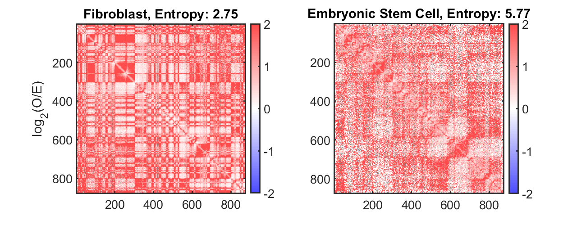
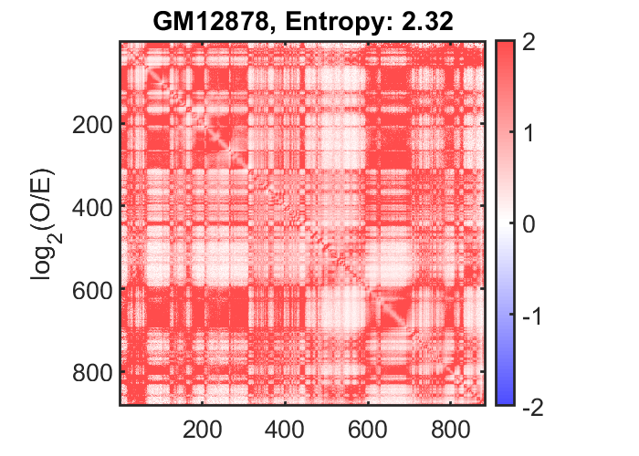
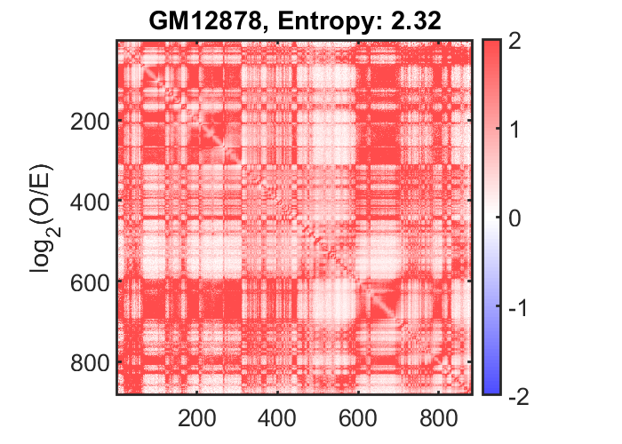

Contents
4DN Feature Analyzer example
This example script shows how each of the core functionalities of the 4DNvestigator can be called using default parameters
link to paper: (In preparation)
Written by: Scott Ronquist, Stephen Lindsly Contact: scotronq@umich.edu, lindsly@umich.edu
close all, clear all restoredefaultpath addpath(genpath(pwd))
Load Data Example through the 4DNvestigator functions
if exist('myodData.mat','file')~=2 || exist('sampleMyodDataIndexTp-48_8_80.xlsx','file')~=2 error(['Download all Hi-C and RNA-seq data ',... '<a href="https://drive.google.com/drive/folders/1xVjX7yqiOIPV_IfVKVDJJ79Ee0xMHGr8?usp=sharing">here</a>',... ' and save to the directory data\exampleData\']) end Index_Loc = 'data\exampleData\myodData\sampleMyodDataIndexTp-48_8_80.xlsx'; Data_Loc = 'data\exampleData\myodData\'; if exist('sampleMyodDataIndexTp-48_8_80.xlsx','file')==2 [dataInfo] = fdnLoadUserInput(Index_Loc); [H] = fdnLoadHic(Data_Loc,dataInfo,'single'); [R] = fdnLoadRnaseq(Data_Loc,dataInfo,H); end
reading .hic header information...
Warning: Escaped character '\U' is not valid. See 'doc sprintf' for supported
special characters.
Warning: C:
Warning: Escaped character '\U' is not valid. See 'doc sprintf' for supported
special characters.
Warning: C:
Warning: Escaped character '\U' is not valid. See 'doc sprintf' for supported
special characters.
Warning: C:
File_Name =
3×1 cell array
{'Sample_64585.hic'}
{'Sample_71530.hic'}
{'Sample_71531.hic'}
Loading 100kb Hi-C. Sample: (1/3), chr:1, estimated time: 0 secs...
Loading 100kb Hi-C. Sample: (1/3), chr:2, estimated time: 339 secs...
Loading 100kb Hi-C. Sample: (1/3), chr:3, estimated time: 334 secs...
Loading 100kb Hi-C. Sample: (1/3), chr:4, estimated time: 330 secs...
Loading 100kb Hi-C. Sample: (1/3), chr:5, estimated time: 325 secs...
Loading 100kb Hi-C. Sample: (1/3), chr:6, estimated time: 320 secs...
Loading 100kb Hi-C. Sample: (1/3), chr:7, estimated time: 315 secs...
Loading 100kb Hi-C. Sample: (1/3), chr:8, estimated time: 310 secs...
Loading 100kb Hi-C. Sample: (1/3), chr:9, estimated time: 305 secs...
Loading 100kb Hi-C. Sample: (1/3), chr:10, estimated time: 301 secs...
Loading 100kb Hi-C. Sample: (1/3), chr:11, estimated time: 296 secs...
Loading 100kb Hi-C. Sample: (1/3), chr:12, estimated time: 291 secs...
Loading 100kb Hi-C. Sample: (1/3), chr:13, estimated time: 286 secs...
Loading 100kb Hi-C. Sample: (1/3), chr:14, estimated time: 281 secs...
Loading 100kb Hi-C. Sample: (1/3), chr:15, estimated time: 276 secs...
Loading 100kb Hi-C. Sample: (1/3), chr:16, estimated time: 271 secs...
Loading 100kb Hi-C. Sample: (1/3), chr:17, estimated time: 267 secs...
Loading 100kb Hi-C. Sample: (1/3), chr:18, estimated time: 262 secs...
Loading 100kb Hi-C. Sample: (1/3), chr:19, estimated time: 257 secs...
Loading 100kb Hi-C. Sample: (1/3), chr:20, estimated time: 252 secs...
Loading 100kb Hi-C. Sample: (1/3), chr:21, estimated time: 247 secs...
Loading 100kb Hi-C. Sample: (1/3), chr:22, estimated time: 242 secs...
Loading 100kb Hi-C. Sample: (1/3), chr:X, estimated time: 237 secs...
Loading 100kb Hi-C. Sample: (1/3), chr:Y, estimated time: 233 secs...
Loading 100kb Hi-C. Sample: (2/3), chr:1, estimated time: 228 secs...
Loading 100kb Hi-C. Sample: (2/3), chr:2, estimated time: 223 secs...
Loading 100kb Hi-C. Sample: (2/3), chr:3, estimated time: 218 secs...
Loading 100kb Hi-C. Sample: (2/3), chr:4, estimated time: 213 secs...
Loading 100kb Hi-C. Sample: (2/3), chr:5, estimated time: 208 secs...
Loading 100kb Hi-C. Sample: (2/3), chr:6, estimated time: 204 secs...
Loading 100kb Hi-C. Sample: (2/3), chr:7, estimated time: 199 secs...
Loading 100kb Hi-C. Sample: (2/3), chr:8, estimated time: 194 secs...
Loading 100kb Hi-C. Sample: (2/3), chr:9, estimated time: 189 secs...
Loading 100kb Hi-C. Sample: (2/3), chr:10, estimated time: 184 secs...
Loading 100kb Hi-C. Sample: (2/3), chr:11, estimated time: 179 secs...
Loading 100kb Hi-C. Sample: (2/3), chr:12, estimated time: 174 secs...
Loading 100kb Hi-C. Sample: (2/3), chr:13, estimated time: 170 secs...
Loading 100kb Hi-C. Sample: (2/3), chr:14, estimated time: 165 secs...
Loading 100kb Hi-C. Sample: (2/3), chr:15, estimated time: 160 secs...
Loading 100kb Hi-C. Sample: (2/3), chr:16, estimated time: 155 secs...
Loading 100kb Hi-C. Sample: (2/3), chr:17, estimated time: 150 secs...
Loading 100kb Hi-C. Sample: (2/3), chr:18, estimated time: 145 secs...
Loading 100kb Hi-C. Sample: (2/3), chr:19, estimated time: 141 secs...
Loading 100kb Hi-C. Sample: (2/3), chr:20, estimated time: 136 secs...
Loading 100kb Hi-C. Sample: (2/3), chr:21, estimated time: 131 secs...
Loading 100kb Hi-C. Sample: (2/3), chr:22, estimated time: 126 secs...
Loading 100kb Hi-C. Sample: (2/3), chr:X, estimated time: 121 secs...
Loading 100kb Hi-C. Sample: (2/3), chr:Y, estimated time: 116 secs...
Loading 100kb Hi-C. Sample: (3/3), chr:1, estimated time: 111 secs...
Loading 100kb Hi-C. Sample: (3/3), chr:2, estimated time: 107 secs...
Loading 100kb Hi-C. Sample: (3/3), chr:3, estimated time: 102 secs...
Loading 100kb Hi-C. Sample: (3/3), chr:4, estimated time: 97 secs...
Loading 100kb Hi-C. Sample: (3/3), chr:5, estimated time: 92 secs...
Loading 100kb Hi-C. Sample: (3/3), chr:6, estimated time: 87 secs...
Loading 100kb Hi-C. Sample: (3/3), chr:7, estimated time: 82 secs...
Loading 100kb Hi-C. Sample: (3/3), chr:8, estimated time: 78 secs...
Loading 100kb Hi-C. Sample: (3/3), chr:9, estimated time: 73 secs...
Loading 100kb Hi-C. Sample: (3/3), chr:10, estimated time: 68 secs...
Loading 100kb Hi-C. Sample: (3/3), chr:11, estimated time: 63 secs...
Loading 100kb Hi-C. Sample: (3/3), chr:12, estimated time: 58 secs...
Loading 100kb Hi-C. Sample: (3/3), chr:13, estimated time: 53 secs...
Loading 100kb Hi-C. Sample: (3/3), chr:14, estimated time: 48 secs...
Loading 100kb Hi-C. Sample: (3/3), chr:15, estimated time: 44 secs...
Loading 100kb Hi-C. Sample: (3/3), chr:16, estimated time: 39 secs...
Loading 100kb Hi-C. Sample: (3/3), chr:17, estimated time: 34 secs...
Loading 100kb Hi-C. Sample: (3/3), chr:18, estimated time: 29 secs...
Loading 100kb Hi-C. Sample: (3/3), chr:19, estimated time: 24 secs...
Loading 100kb Hi-C. Sample: (3/3), chr:20, estimated time: 19 secs...
Loading 100kb Hi-C. Sample: (3/3), chr:21, estimated time: 15 secs...
Loading 100kb Hi-C. Sample: (3/3), chr:22, estimated time: 10 secs...
Loading 100kb Hi-C. Sample: (3/3), chr:X, estimated time: 5 secs...
Loading 100kb Hi-C. Sample: (3/3), chr:Y, estimated time: 0 secs...
Extracting Hi-C, 1Mb, ALL...
Extracting Hi-C, 1Mb, IntraChr:1...
Extracting Hi-C, 1Mb, IntraChr:2...
Extracting Hi-C, 1Mb, IntraChr:3...
Extracting Hi-C, 1Mb, IntraChr:4...
Extracting Hi-C, 1Mb, IntraChr:5...
Extracting Hi-C, 1Mb, IntraChr:6...
Extracting Hi-C, 1Mb, IntraChr:7...
Extracting Hi-C, 1Mb, IntraChr:8...
Extracting Hi-C, 1Mb, IntraChr:9...
Extracting Hi-C, 1Mb, IntraChr:10...
Extracting Hi-C, 1Mb, IntraChr:11...
Extracting Hi-C, 1Mb, IntraChr:12...
Extracting Hi-C, 1Mb, IntraChr:13...
Extracting Hi-C, 1Mb, IntraChr:14...
Extracting Hi-C, 1Mb, IntraChr:15...
Extracting Hi-C, 1Mb, IntraChr:16...
Extracting Hi-C, 1Mb, IntraChr:17...
Extracting Hi-C, 1Mb, IntraChr:18...
Extracting Hi-C, 1Mb, IntraChr:19...
Extracting Hi-C, 1Mb, IntraChr:20...
Extracting Hi-C, 1Mb, IntraChr:21...
Extracting Hi-C, 1Mb, IntraChr:22...
Extracting Hi-C, 1Mb, IntraChr:23...
Extracting Hi-C, 1Mb, IntraChr:24...
Extracting Hi-C, 1Mb, InterChr:1 vs 2...
Loading 1Mb Hi-C. Sample: (1/3), chr1:1, chr2:2, estimated time: 0 secs...
trimming inter-chr 1-2, 1Mb...
Extracting Hi-C, 1Mb, InterChr:1 vs 3...
Loading 1Mb Hi-C. Sample: (1/3), chr1:1, chr2:3, estimated time: 0 secs...
trimming inter-chr 1-3, 1Mb...
Extracting Hi-C, 1Mb, InterChr:1 vs 4...
Loading 1Mb Hi-C. Sample: (1/3), chr1:1, chr2:4, estimated time: 0 secs...
trimming inter-chr 1-4, 1Mb...
Extracting Hi-C, 1Mb, InterChr:1 vs 5...
Loading 1Mb Hi-C. Sample: (1/3), chr1:1, chr2:5, estimated time: 0 secs...
trimming inter-chr 1-5, 1Mb...
Extracting Hi-C, 1Mb, InterChr:1 vs 6...
Loading 1Mb Hi-C. Sample: (1/3), chr1:1, chr2:6, estimated time: 0 secs...
trimming inter-chr 1-6, 1Mb...
Extracting Hi-C, 1Mb, InterChr:1 vs 7...
Loading 1Mb Hi-C. Sample: (1/3), chr1:1, chr2:7, estimated time: 0 secs...
trimming inter-chr 1-7, 1Mb...
Extracting Hi-C, 1Mb, InterChr:1 vs 8...
Loading 1Mb Hi-C. Sample: (1/3), chr1:1, chr2:8, estimated time: 0 secs...
trimming inter-chr 1-8, 1Mb...
Extracting Hi-C, 1Mb, InterChr:1 vs 9...
Loading 1Mb Hi-C. Sample: (1/3), chr1:1, chr2:9, estimated time: 0 secs...
trimming inter-chr 1-9, 1Mb...
Extracting Hi-C, 1Mb, InterChr:1 vs 10...
Loading 1Mb Hi-C. Sample: (1/3), chr1:1, chr2:10, estimated time: 0 secs...
trimming inter-chr 1-10, 1Mb...
Extracting Hi-C, 1Mb, InterChr:1 vs 11...
Loading 1Mb Hi-C. Sample: (1/3), chr1:1, chr2:11, estimated time: 0 secs...
trimming inter-chr 1-11, 1Mb...
Extracting Hi-C, 1Mb, InterChr:1 vs 12...
Loading 1Mb Hi-C. Sample: (1/3), chr1:1, chr2:12, estimated time: 0 secs...
trimming inter-chr 1-12, 1Mb...
Extracting Hi-C, 1Mb, InterChr:1 vs 13...
Loading 1Mb Hi-C. Sample: (1/3), chr1:1, chr2:13, estimated time: 0 secs...
trimming inter-chr 1-13, 1Mb...
Extracting Hi-C, 1Mb, InterChr:1 vs 14...
Loading 1Mb Hi-C. Sample: (1/3), chr1:1, chr2:14, estimated time: 0 secs...
trimming inter-chr 1-14, 1Mb...
Extracting Hi-C, 1Mb, InterChr:1 vs 15...
Loading 1Mb Hi-C. Sample: (1/3), chr1:1, chr2:15, estimated time: 0 secs...
trimming inter-chr 1-15, 1Mb...
Extracting Hi-C, 1Mb, InterChr:1 vs 16...
Loading 1Mb Hi-C. Sample: (1/3), chr1:1, chr2:16, estimated time: 0 secs...
trimming inter-chr 1-16, 1Mb...
Extracting Hi-C, 1Mb, InterChr:1 vs 17...
Loading 1Mb Hi-C. Sample: (1/3), chr1:1, chr2:17, estimated time: 0 secs...
trimming inter-chr 1-17, 1Mb...
Extracting Hi-C, 1Mb, InterChr:1 vs 18...
Loading 1Mb Hi-C. Sample: (1/3), chr1:1, chr2:18, estimated time: 0 secs...
trimming inter-chr 1-18, 1Mb...
Extracting Hi-C, 1Mb, InterChr:1 vs 19...
Loading 1Mb Hi-C. Sample: (1/3), chr1:1, chr2:19, estimated time: 0 secs...
trimming inter-chr 1-19, 1Mb...
Extracting Hi-C, 1Mb, InterChr:1 vs 20...
Loading 1Mb Hi-C. Sample: (1/3), chr1:1, chr2:20, estimated time: 0 secs...
trimming inter-chr 1-20, 1Mb...
Extracting Hi-C, 1Mb, InterChr:1 vs 21...
Loading 1Mb Hi-C. Sample: (1/3), chr1:1, chr2:21, estimated time: 0 secs...
trimming inter-chr 1-21, 1Mb...
Extracting Hi-C, 1Mb, InterChr:1 vs 22...
Loading 1Mb Hi-C. Sample: (1/3), chr1:1, chr2:22, estimated time: 0 secs...
trimming inter-chr 1-22, 1Mb...
Extracting Hi-C, 1Mb, InterChr:1 vs 23...
Loading 1Mb Hi-C. Sample: (1/3), chr1:1, chr2:X, estimated time: 0 secs...
trimming inter-chr 1-23, 1Mb...
Extracting Hi-C, 1Mb, InterChr:1 vs 24...
Loading 1Mb Hi-C. Sample: (1/3), chr1:1, chr2:Y, estimated time: 0 secs...
trimming inter-chr 1-24, 1Mb...
Extracting Hi-C, 1Mb, InterChr:2 vs 3...
Loading 1Mb Hi-C. Sample: (1/3), chr1:2, chr2:3, estimated time: 0 secs...
trimming inter-chr 2-3, 1Mb...
Extracting Hi-C, 1Mb, InterChr:2 vs 4...
Loading 1Mb Hi-C. Sample: (1/3), chr1:2, chr2:4, estimated time: 0 secs...
trimming inter-chr 2-4, 1Mb...
Extracting Hi-C, 1Mb, InterChr:2 vs 5...
Loading 1Mb Hi-C. Sample: (1/3), chr1:2, chr2:5, estimated time: 0 secs...
trimming inter-chr 2-5, 1Mb...
Extracting Hi-C, 1Mb, InterChr:2 vs 6...
Loading 1Mb Hi-C. Sample: (1/3), chr1:2, chr2:6, estimated time: 0 secs...
trimming inter-chr 2-6, 1Mb...
Extracting Hi-C, 1Mb, InterChr:2 vs 7...
Loading 1Mb Hi-C. Sample: (1/3), chr1:2, chr2:7, estimated time: 0 secs...
trimming inter-chr 2-7, 1Mb...
Extracting Hi-C, 1Mb, InterChr:2 vs 8...
Loading 1Mb Hi-C. Sample: (1/3), chr1:2, chr2:8, estimated time: 0 secs...
trimming inter-chr 2-8, 1Mb...
Extracting Hi-C, 1Mb, InterChr:2 vs 9...
Loading 1Mb Hi-C. Sample: (1/3), chr1:2, chr2:9, estimated time: 0 secs...
trimming inter-chr 2-9, 1Mb...
Extracting Hi-C, 1Mb, InterChr:2 vs 10...
Loading 1Mb Hi-C. Sample: (1/3), chr1:2, chr2:10, estimated time: 0 secs...
trimming inter-chr 2-10, 1Mb...
Extracting Hi-C, 1Mb, InterChr:2 vs 11...
Loading 1Mb Hi-C. Sample: (1/3), chr1:2, chr2:11, estimated time: 0 secs...
trimming inter-chr 2-11, 1Mb...
Extracting Hi-C, 1Mb, InterChr:2 vs 12...
Loading 1Mb Hi-C. Sample: (1/3), chr1:2, chr2:12, estimated time: 0 secs...
trimming inter-chr 2-12, 1Mb...
Extracting Hi-C, 1Mb, InterChr:2 vs 13...
Loading 1Mb Hi-C. Sample: (1/3), chr1:2, chr2:13, estimated time: 0 secs...
trimming inter-chr 2-13, 1Mb...
Extracting Hi-C, 1Mb, InterChr:2 vs 14...
Loading 1Mb Hi-C. Sample: (1/3), chr1:2, chr2:14, estimated time: 0 secs...
trimming inter-chr 2-14, 1Mb...
Extracting Hi-C, 1Mb, InterChr:2 vs 15...
Loading 1Mb Hi-C. Sample: (1/3), chr1:2, chr2:15, estimated time: 0 secs...
trimming inter-chr 2-15, 1Mb...
Extracting Hi-C, 1Mb, InterChr:2 vs 16...
Loading 1Mb Hi-C. Sample: (1/3), chr1:2, chr2:16, estimated time: 0 secs...
trimming inter-chr 2-16, 1Mb...
Extracting Hi-C, 1Mb, InterChr:2 vs 17...
Loading 1Mb Hi-C. Sample: (1/3), chr1:2, chr2:17, estimated time: 0 secs...
trimming inter-chr 2-17, 1Mb...
Extracting Hi-C, 1Mb, InterChr:2 vs 18...
Loading 1Mb Hi-C. Sample: (1/3), chr1:2, chr2:18, estimated time: 0 secs...
trimming inter-chr 2-18, 1Mb...
Extracting Hi-C, 1Mb, InterChr:2 vs 19...
Loading 1Mb Hi-C. Sample: (1/3), chr1:2, chr2:19, estimated time: 0 secs...
trimming inter-chr 2-19, 1Mb...
Extracting Hi-C, 1Mb, InterChr:2 vs 20...
Loading 1Mb Hi-C. Sample: (1/3), chr1:2, chr2:20, estimated time: 0 secs...
trimming inter-chr 2-20, 1Mb...
Extracting Hi-C, 1Mb, InterChr:2 vs 21...
Loading 1Mb Hi-C. Sample: (1/3), chr1:2, chr2:21, estimated time: 0 secs...
trimming inter-chr 2-21, 1Mb...
Extracting Hi-C, 1Mb, InterChr:2 vs 22...
Loading 1Mb Hi-C. Sample: (1/3), chr1:2, chr2:22, estimated time: 0 secs...
trimming inter-chr 2-22, 1Mb...
Extracting Hi-C, 1Mb, InterChr:2 vs 23...
Loading 1Mb Hi-C. Sample: (1/3), chr1:2, chr2:X, estimated time: 0 secs...
trimming inter-chr 2-23, 1Mb...
Extracting Hi-C, 1Mb, InterChr:2 vs 24...
Loading 1Mb Hi-C. Sample: (1/3), chr1:2, chr2:Y, estimated time: 0 secs...
trimming inter-chr 2-24, 1Mb...
Extracting Hi-C, 1Mb, InterChr:3 vs 4...
Loading 1Mb Hi-C. Sample: (1/3), chr1:3, chr2:4, estimated time: 0 secs...
trimming inter-chr 3-4, 1Mb...
Extracting Hi-C, 1Mb, InterChr:3 vs 5...
Loading 1Mb Hi-C. Sample: (1/3), chr1:3, chr2:5, estimated time: 0 secs...
trimming inter-chr 3-5, 1Mb...
Extracting Hi-C, 1Mb, InterChr:3 vs 6...
Loading 1Mb Hi-C. Sample: (1/3), chr1:3, chr2:6, estimated time: 0 secs...
trimming inter-chr 3-6, 1Mb...
Extracting Hi-C, 1Mb, InterChr:3 vs 7...
Loading 1Mb Hi-C. Sample: (1/3), chr1:3, chr2:7, estimated time: 0 secs...
trimming inter-chr 3-7, 1Mb...
Extracting Hi-C, 1Mb, InterChr:3 vs 8...
Loading 1Mb Hi-C. Sample: (1/3), chr1:3, chr2:8, estimated time: 0 secs...
trimming inter-chr 3-8, 1Mb...
Extracting Hi-C, 1Mb, InterChr:3 vs 9...
Loading 1Mb Hi-C. Sample: (1/3), chr1:3, chr2:9, estimated time: 0 secs...
trimming inter-chr 3-9, 1Mb...
Extracting Hi-C, 1Mb, InterChr:3 vs 10...
Loading 1Mb Hi-C. Sample: (1/3), chr1:3, chr2:10, estimated time: 0 secs...
trimming inter-chr 3-10, 1Mb...
Extracting Hi-C, 1Mb, InterChr:3 vs 11...
Loading 1Mb Hi-C. Sample: (1/3), chr1:3, chr2:11, estimated time: 0 secs...
trimming inter-chr 3-11, 1Mb...
Extracting Hi-C, 1Mb, InterChr:3 vs 12...
Loading 1Mb Hi-C. Sample: (1/3), chr1:3, chr2:12, estimated time: 0 secs...
trimming inter-chr 3-12, 1Mb...
Extracting Hi-C, 1Mb, InterChr:3 vs 13...
Loading 1Mb Hi-C. Sample: (1/3), chr1:3, chr2:13, estimated time: 0 secs...
trimming inter-chr 3-13, 1Mb...
Extracting Hi-C, 1Mb, InterChr:3 vs 14...
Loading 1Mb Hi-C. Sample: (1/3), chr1:3, chr2:14, estimated time: 0 secs...
trimming inter-chr 3-14, 1Mb...
Extracting Hi-C, 1Mb, InterChr:3 vs 15...
Loading 1Mb Hi-C. Sample: (1/3), chr1:3, chr2:15, estimated time: 0 secs...
trimming inter-chr 3-15, 1Mb...
Extracting Hi-C, 1Mb, InterChr:3 vs 16...
Loading 1Mb Hi-C. Sample: (1/3), chr1:3, chr2:16, estimated time: 0 secs...
trimming inter-chr 3-16, 1Mb...
Extracting Hi-C, 1Mb, InterChr:3 vs 17...
Loading 1Mb Hi-C. Sample: (1/3), chr1:3, chr2:17, estimated time: 0 secs...
trimming inter-chr 3-17, 1Mb...
Extracting Hi-C, 1Mb, InterChr:3 vs 18...
Loading 1Mb Hi-C. Sample: (1/3), chr1:3, chr2:18, estimated time: 0 secs...
trimming inter-chr 3-18, 1Mb...
Extracting Hi-C, 1Mb, InterChr:3 vs 19...
Loading 1Mb Hi-C. Sample: (1/3), chr1:3, chr2:19, estimated time: 0 secs...
trimming inter-chr 3-19, 1Mb...
Extracting Hi-C, 1Mb, InterChr:3 vs 20...
Loading 1Mb Hi-C. Sample: (1/3), chr1:3, chr2:20, estimated time: 0 secs...
trimming inter-chr 3-20, 1Mb...
Extracting Hi-C, 1Mb, InterChr:3 vs 21...
Loading 1Mb Hi-C. Sample: (1/3), chr1:3, chr2:21, estimated time: 0 secs...
trimming inter-chr 3-21, 1Mb...
Extracting Hi-C, 1Mb, InterChr:3 vs 22...
Loading 1Mb Hi-C. Sample: (1/3), chr1:3, chr2:22, estimated time: 0 secs...
trimming inter-chr 3-22, 1Mb...
Extracting Hi-C, 1Mb, InterChr:3 vs 23...
Loading 1Mb Hi-C. Sample: (1/3), chr1:3, chr2:X, estimated time: 0 secs...
trimming inter-chr 3-23, 1Mb...
Extracting Hi-C, 1Mb, InterChr:3 vs 24...
Loading 1Mb Hi-C. Sample: (1/3), chr1:3, chr2:Y, estimated time: 0 secs...
trimming inter-chr 3-24, 1Mb...
Extracting Hi-C, 1Mb, InterChr:4 vs 5...
Loading 1Mb Hi-C. Sample: (1/3), chr1:4, chr2:5, estimated time: 0 secs...
trimming inter-chr 4-5, 1Mb...
Extracting Hi-C, 1Mb, InterChr:4 vs 6...
Loading 1Mb Hi-C. Sample: (1/3), chr1:4, chr2:6, estimated time: 0 secs...
trimming inter-chr 4-6, 1Mb...
Extracting Hi-C, 1Mb, InterChr:4 vs 7...
Loading 1Mb Hi-C. Sample: (1/3), chr1:4, chr2:7, estimated time: 0 secs...
trimming inter-chr 4-7, 1Mb...
Extracting Hi-C, 1Mb, InterChr:4 vs 8...
Loading 1Mb Hi-C. Sample: (1/3), chr1:4, chr2:8, estimated time: 0 secs...
trimming inter-chr 4-8, 1Mb...
Extracting Hi-C, 1Mb, InterChr:4 vs 9...
Loading 1Mb Hi-C. Sample: (1/3), chr1:4, chr2:9, estimated time: 0 secs...
trimming inter-chr 4-9, 1Mb...
Extracting Hi-C, 1Mb, InterChr:4 vs 10...
Loading 1Mb Hi-C. Sample: (1/3), chr1:4, chr2:10, estimated time: 0 secs...
trimming inter-chr 4-10, 1Mb...
Extracting Hi-C, 1Mb, InterChr:4 vs 11...
Loading 1Mb Hi-C. Sample: (1/3), chr1:4, chr2:11, estimated time: 0 secs...
trimming inter-chr 4-11, 1Mb...
Extracting Hi-C, 1Mb, InterChr:4 vs 12...
Loading 1Mb Hi-C. Sample: (1/3), chr1:4, chr2:12, estimated time: 0 secs...
trimming inter-chr 4-12, 1Mb...
Extracting Hi-C, 1Mb, InterChr:4 vs 13...
Loading 1Mb Hi-C. Sample: (1/3), chr1:4, chr2:13, estimated time: 0 secs...
trimming inter-chr 4-13, 1Mb...
Extracting Hi-C, 1Mb, InterChr:4 vs 14...
Loading 1Mb Hi-C. Sample: (1/3), chr1:4, chr2:14, estimated time: 0 secs...
trimming inter-chr 4-14, 1Mb...
Extracting Hi-C, 1Mb, InterChr:4 vs 15...
Loading 1Mb Hi-C. Sample: (1/3), chr1:4, chr2:15, estimated time: 0 secs...
trimming inter-chr 4-15, 1Mb...
Extracting Hi-C, 1Mb, InterChr:4 vs 16...
Loading 1Mb Hi-C. Sample: (1/3), chr1:4, chr2:16, estimated time: 0 secs...
trimming inter-chr 4-16, 1Mb...
Extracting Hi-C, 1Mb, InterChr:4 vs 17...
Loading 1Mb Hi-C. Sample: (1/3), chr1:4, chr2:17, estimated time: 0 secs...
trimming inter-chr 4-17, 1Mb...
Extracting Hi-C, 1Mb, InterChr:4 vs 18...
Loading 1Mb Hi-C. Sample: (1/3), chr1:4, chr2:18, estimated time: 0 secs...
trimming inter-chr 4-18, 1Mb...
Extracting Hi-C, 1Mb, InterChr:4 vs 19...
Loading 1Mb Hi-C. Sample: (1/3), chr1:4, chr2:19, estimated time: 0 secs...
trimming inter-chr 4-19, 1Mb...
Extracting Hi-C, 1Mb, InterChr:4 vs 20...
Loading 1Mb Hi-C. Sample: (1/3), chr1:4, chr2:20, estimated time: 0 secs...
trimming inter-chr 4-20, 1Mb...
Extracting Hi-C, 1Mb, InterChr:4 vs 21...
Loading 1Mb Hi-C. Sample: (1/3), chr1:4, chr2:21, estimated time: 0 secs...
trimming inter-chr 4-21, 1Mb...
Extracting Hi-C, 1Mb, InterChr:4 vs 22...
Loading 1Mb Hi-C. Sample: (1/3), chr1:4, chr2:22, estimated time: 0 secs...
trimming inter-chr 4-22, 1Mb...
Extracting Hi-C, 1Mb, InterChr:4 vs 23...
Loading 1Mb Hi-C. Sample: (1/3), chr1:4, chr2:X, estimated time: 0 secs...
trimming inter-chr 4-23, 1Mb...
Extracting Hi-C, 1Mb, InterChr:4 vs 24...
Loading 1Mb Hi-C. Sample: (1/3), chr1:4, chr2:Y, estimated time: 0 secs...
trimming inter-chr 4-24, 1Mb...
Extracting Hi-C, 1Mb, InterChr:5 vs 6...
Loading 1Mb Hi-C. Sample: (1/3), chr1:5, chr2:6, estimated time: 0 secs...
trimming inter-chr 5-6, 1Mb...
Extracting Hi-C, 1Mb, InterChr:5 vs 7...
Loading 1Mb Hi-C. Sample: (1/3), chr1:5, chr2:7, estimated time: 0 secs...
trimming inter-chr 5-7, 1Mb...
Extracting Hi-C, 1Mb, InterChr:5 vs 8...
Loading 1Mb Hi-C. Sample: (1/3), chr1:5, chr2:8, estimated time: 0 secs...
trimming inter-chr 5-8, 1Mb...
Extracting Hi-C, 1Mb, InterChr:5 vs 9...
Loading 1Mb Hi-C. Sample: (1/3), chr1:5, chr2:9, estimated time: 0 secs...
trimming inter-chr 5-9, 1Mb...
Extracting Hi-C, 1Mb, InterChr:5 vs 10...
Loading 1Mb Hi-C. Sample: (1/3), chr1:5, chr2:10, estimated time: 0 secs...
trimming inter-chr 5-10, 1Mb...
Extracting Hi-C, 1Mb, InterChr:5 vs 11...
Loading 1Mb Hi-C. Sample: (1/3), chr1:5, chr2:11, estimated time: 0 secs...
trimming inter-chr 5-11, 1Mb...
Extracting Hi-C, 1Mb, InterChr:5 vs 12...
Loading 1Mb Hi-C. Sample: (1/3), chr1:5, chr2:12, estimated time: 0 secs...
trimming inter-chr 5-12, 1Mb...
Extracting Hi-C, 1Mb, InterChr:5 vs 13...
Loading 1Mb Hi-C. Sample: (1/3), chr1:5, chr2:13, estimated time: 0 secs...
trimming inter-chr 5-13, 1Mb...
Extracting Hi-C, 1Mb, InterChr:5 vs 14...
Loading 1Mb Hi-C. Sample: (1/3), chr1:5, chr2:14, estimated time: 0 secs...
trimming inter-chr 5-14, 1Mb...
Extracting Hi-C, 1Mb, InterChr:5 vs 15...
Loading 1Mb Hi-C. Sample: (1/3), chr1:5, chr2:15, estimated time: 0 secs...
trimming inter-chr 5-15, 1Mb...
Extracting Hi-C, 1Mb, InterChr:5 vs 16...
Loading 1Mb Hi-C. Sample: (1/3), chr1:5, chr2:16, estimated time: 0 secs...
trimming inter-chr 5-16, 1Mb...
Extracting Hi-C, 1Mb, InterChr:5 vs 17...
Loading 1Mb Hi-C. Sample: (1/3), chr1:5, chr2:17, estimated time: 0 secs...
trimming inter-chr 5-17, 1Mb...
Extracting Hi-C, 1Mb, InterChr:5 vs 18...
Loading 1Mb Hi-C. Sample: (1/3), chr1:5, chr2:18, estimated time: 0 secs...
trimming inter-chr 5-18, 1Mb...
Extracting Hi-C, 1Mb, InterChr:5 vs 19...
Loading 1Mb Hi-C. Sample: (1/3), chr1:5, chr2:19, estimated time: 0 secs...
trimming inter-chr 5-19, 1Mb...
Extracting Hi-C, 1Mb, InterChr:5 vs 20...
Loading 1Mb Hi-C. Sample: (1/3), chr1:5, chr2:20, estimated time: 0 secs...
trimming inter-chr 5-20, 1Mb...
Extracting Hi-C, 1Mb, InterChr:5 vs 21...
Loading 1Mb Hi-C. Sample: (1/3), chr1:5, chr2:21, estimated time: 0 secs...
trimming inter-chr 5-21, 1Mb...
Extracting Hi-C, 1Mb, InterChr:5 vs 22...
Loading 1Mb Hi-C. Sample: (1/3), chr1:5, chr2:22, estimated time: 0 secs...
trimming inter-chr 5-22, 1Mb...
Extracting Hi-C, 1Mb, InterChr:5 vs 23...
Loading 1Mb Hi-C. Sample: (1/3), chr1:5, chr2:X, estimated time: 0 secs...
trimming inter-chr 5-23, 1Mb...
Extracting Hi-C, 1Mb, InterChr:5 vs 24...
Loading 1Mb Hi-C. Sample: (1/3), chr1:5, chr2:Y, estimated time: 0 secs...
trimming inter-chr 5-24, 1Mb...
Extracting Hi-C, 1Mb, InterChr:6 vs 7...
Loading 1Mb Hi-C. Sample: (1/3), chr1:6, chr2:7, estimated time: 0 secs...
trimming inter-chr 6-7, 1Mb...
Extracting Hi-C, 1Mb, InterChr:6 vs 8...
Loading 1Mb Hi-C. Sample: (1/3), chr1:6, chr2:8, estimated time: 0 secs...
trimming inter-chr 6-8, 1Mb...
Extracting Hi-C, 1Mb, InterChr:6 vs 9...
Loading 1Mb Hi-C. Sample: (1/3), chr1:6, chr2:9, estimated time: 0 secs...
trimming inter-chr 6-9, 1Mb...
Extracting Hi-C, 1Mb, InterChr:6 vs 10...
Loading 1Mb Hi-C. Sample: (1/3), chr1:6, chr2:10, estimated time: 0 secs...
trimming inter-chr 6-10, 1Mb...
Extracting Hi-C, 1Mb, InterChr:6 vs 11...
Loading 1Mb Hi-C. Sample: (1/3), chr1:6, chr2:11, estimated time: 0 secs...
trimming inter-chr 6-11, 1Mb...
Extracting Hi-C, 1Mb, InterChr:6 vs 12...
Loading 1Mb Hi-C. Sample: (1/3), chr1:6, chr2:12, estimated time: 0 secs...
trimming inter-chr 6-12, 1Mb...
Extracting Hi-C, 1Mb, InterChr:6 vs 13...
Loading 1Mb Hi-C. Sample: (1/3), chr1:6, chr2:13, estimated time: 0 secs...
trimming inter-chr 6-13, 1Mb...
Extracting Hi-C, 1Mb, InterChr:6 vs 14...
Loading 1Mb Hi-C. Sample: (1/3), chr1:6, chr2:14, estimated time: 0 secs...
trimming inter-chr 6-14, 1Mb...
Extracting Hi-C, 1Mb, InterChr:6 vs 15...
Loading 1Mb Hi-C. Sample: (1/3), chr1:6, chr2:15, estimated time: 0 secs...
trimming inter-chr 6-15, 1Mb...
Extracting Hi-C, 1Mb, InterChr:6 vs 16...
Loading 1Mb Hi-C. Sample: (1/3), chr1:6, chr2:16, estimated time: 0 secs...
trimming inter-chr 6-16, 1Mb...
Extracting Hi-C, 1Mb, InterChr:6 vs 17...
Loading 1Mb Hi-C. Sample: (1/3), chr1:6, chr2:17, estimated time: 0 secs...
trimming inter-chr 6-17, 1Mb...
Extracting Hi-C, 1Mb, InterChr:6 vs 18...
Loading 1Mb Hi-C. Sample: (1/3), chr1:6, chr2:18, estimated time: 0 secs...
trimming inter-chr 6-18, 1Mb...
Extracting Hi-C, 1Mb, InterChr:6 vs 19...
Loading 1Mb Hi-C. Sample: (1/3), chr1:6, chr2:19, estimated time: 0 secs...
trimming inter-chr 6-19, 1Mb...
Extracting Hi-C, 1Mb, InterChr:6 vs 20...
Loading 1Mb Hi-C. Sample: (1/3), chr1:6, chr2:20, estimated time: 0 secs...
trimming inter-chr 6-20, 1Mb...
Extracting Hi-C, 1Mb, InterChr:6 vs 21...
Loading 1Mb Hi-C. Sample: (1/3), chr1:6, chr2:21, estimated time: 0 secs...
trimming inter-chr 6-21, 1Mb...
Extracting Hi-C, 1Mb, InterChr:6 vs 22...
Loading 1Mb Hi-C. Sample: (1/3), chr1:6, chr2:22, estimated time: 0 secs...
trimming inter-chr 6-22, 1Mb...
Extracting Hi-C, 1Mb, InterChr:6 vs 23...
Loading 1Mb Hi-C. Sample: (1/3), chr1:6, chr2:X, estimated time: 0 secs...
trimming inter-chr 6-23, 1Mb...
Extracting Hi-C, 1Mb, InterChr:6 vs 24...
Loading 1Mb Hi-C. Sample: (1/3), chr1:6, chr2:Y, estimated time: 0 secs...
trimming inter-chr 6-24, 1Mb...
Extracting Hi-C, 1Mb, InterChr:7 vs 8...
Loading 1Mb Hi-C. Sample: (1/3), chr1:7, chr2:8, estimated time: 0 secs...
trimming inter-chr 7-8, 1Mb...
Extracting Hi-C, 1Mb, InterChr:7 vs 9...
Loading 1Mb Hi-C. Sample: (1/3), chr1:7, chr2:9, estimated time: 0 secs...
trimming inter-chr 7-9, 1Mb...
Extracting Hi-C, 1Mb, InterChr:7 vs 10...
Loading 1Mb Hi-C. Sample: (1/3), chr1:7, chr2:10, estimated time: 0 secs...
trimming inter-chr 7-10, 1Mb...
Extracting Hi-C, 1Mb, InterChr:7 vs 11...
Loading 1Mb Hi-C. Sample: (1/3), chr1:7, chr2:11, estimated time: 0 secs...
trimming inter-chr 7-11, 1Mb...
Extracting Hi-C, 1Mb, InterChr:7 vs 12...
Loading 1Mb Hi-C. Sample: (1/3), chr1:7, chr2:12, estimated time: 0 secs...
trimming inter-chr 7-12, 1Mb...
Extracting Hi-C, 1Mb, InterChr:7 vs 13...
Loading 1Mb Hi-C. Sample: (1/3), chr1:7, chr2:13, estimated time: 0 secs...
trimming inter-chr 7-13, 1Mb...
Extracting Hi-C, 1Mb, InterChr:7 vs 14...
Loading 1Mb Hi-C. Sample: (1/3), chr1:7, chr2:14, estimated time: 0 secs...
trimming inter-chr 7-14, 1Mb...
Extracting Hi-C, 1Mb, InterChr:7 vs 15...
Loading 1Mb Hi-C. Sample: (1/3), chr1:7, chr2:15, estimated time: 0 secs...
trimming inter-chr 7-15, 1Mb...
Extracting Hi-C, 1Mb, InterChr:7 vs 16...
Loading 1Mb Hi-C. Sample: (1/3), chr1:7, chr2:16, estimated time: 0 secs...
trimming inter-chr 7-16, 1Mb...
Extracting Hi-C, 1Mb, InterChr:7 vs 17...
Loading 1Mb Hi-C. Sample: (1/3), chr1:7, chr2:17, estimated time: 0 secs...
trimming inter-chr 7-17, 1Mb...
Extracting Hi-C, 1Mb, InterChr:7 vs 18...
Loading 1Mb Hi-C. Sample: (1/3), chr1:7, chr2:18, estimated time: 0 secs...
trimming inter-chr 7-18, 1Mb...
Extracting Hi-C, 1Mb, InterChr:7 vs 19...
Loading 1Mb Hi-C. Sample: (1/3), chr1:7, chr2:19, estimated time: 0 secs...
trimming inter-chr 7-19, 1Mb...
Extracting Hi-C, 1Mb, InterChr:7 vs 20...
Loading 1Mb Hi-C. Sample: (1/3), chr1:7, chr2:20, estimated time: 0 secs...
trimming inter-chr 7-20, 1Mb...
Extracting Hi-C, 1Mb, InterChr:7 vs 21...
Loading 1Mb Hi-C. Sample: (1/3), chr1:7, chr2:21, estimated time: 0 secs...
trimming inter-chr 7-21, 1Mb...
Extracting Hi-C, 1Mb, InterChr:7 vs 22...
Loading 1Mb Hi-C. Sample: (1/3), chr1:7, chr2:22, estimated time: 0 secs...
trimming inter-chr 7-22, 1Mb...
Extracting Hi-C, 1Mb, InterChr:7 vs 23...
Loading 1Mb Hi-C. Sample: (1/3), chr1:7, chr2:X, estimated time: 0 secs...
trimming inter-chr 7-23, 1Mb...
Extracting Hi-C, 1Mb, InterChr:7 vs 24...
Loading 1Mb Hi-C. Sample: (1/3), chr1:7, chr2:Y, estimated time: 0 secs...
trimming inter-chr 7-24, 1Mb...
Extracting Hi-C, 1Mb, InterChr:8 vs 9...
Loading 1Mb Hi-C. Sample: (1/3), chr1:8, chr2:9, estimated time: 0 secs...
trimming inter-chr 8-9, 1Mb...
Extracting Hi-C, 1Mb, InterChr:8 vs 10...
Loading 1Mb Hi-C. Sample: (1/3), chr1:8, chr2:10, estimated time: 0 secs...
trimming inter-chr 8-10, 1Mb...
Extracting Hi-C, 1Mb, InterChr:8 vs 11...
Loading 1Mb Hi-C. Sample: (1/3), chr1:8, chr2:11, estimated time: 0 secs...
trimming inter-chr 8-11, 1Mb...
Extracting Hi-C, 1Mb, InterChr:8 vs 12...
Loading 1Mb Hi-C. Sample: (1/3), chr1:8, chr2:12, estimated time: 0 secs...
trimming inter-chr 8-12, 1Mb...
Extracting Hi-C, 1Mb, InterChr:8 vs 13...
Loading 1Mb Hi-C. Sample: (1/3), chr1:8, chr2:13, estimated time: 0 secs...
trimming inter-chr 8-13, 1Mb...
Extracting Hi-C, 1Mb, InterChr:8 vs 14...
Loading 1Mb Hi-C. Sample: (1/3), chr1:8, chr2:14, estimated time: 0 secs...
trimming inter-chr 8-14, 1Mb...
Extracting Hi-C, 1Mb, InterChr:8 vs 15...
Loading 1Mb Hi-C. Sample: (1/3), chr1:8, chr2:15, estimated time: 0 secs...
trimming inter-chr 8-15, 1Mb...
Extracting Hi-C, 1Mb, InterChr:8 vs 16...
Loading 1Mb Hi-C. Sample: (1/3), chr1:8, chr2:16, estimated time: 0 secs...
trimming inter-chr 8-16, 1Mb...
Extracting Hi-C, 1Mb, InterChr:8 vs 17...
Loading 1Mb Hi-C. Sample: (1/3), chr1:8, chr2:17, estimated time: 0 secs...
trimming inter-chr 8-17, 1Mb...
Extracting Hi-C, 1Mb, InterChr:8 vs 18...
Loading 1Mb Hi-C. Sample: (1/3), chr1:8, chr2:18, estimated time: 0 secs...
trimming inter-chr 8-18, 1Mb...
Extracting Hi-C, 1Mb, InterChr:8 vs 19...
Loading 1Mb Hi-C. Sample: (1/3), chr1:8, chr2:19, estimated time: 0 secs...
trimming inter-chr 8-19, 1Mb...
Extracting Hi-C, 1Mb, InterChr:8 vs 20...
Loading 1Mb Hi-C. Sample: (1/3), chr1:8, chr2:20, estimated time: 0 secs...
trimming inter-chr 8-20, 1Mb...
Extracting Hi-C, 1Mb, InterChr:8 vs 21...
Loading 1Mb Hi-C. Sample: (1/3), chr1:8, chr2:21, estimated time: 0 secs...
trimming inter-chr 8-21, 1Mb...
Extracting Hi-C, 1Mb, InterChr:8 vs 22...
Loading 1Mb Hi-C. Sample: (1/3), chr1:8, chr2:22, estimated time: 0 secs...
trimming inter-chr 8-22, 1Mb...
Extracting Hi-C, 1Mb, InterChr:8 vs 23...
Loading 1Mb Hi-C. Sample: (1/3), chr1:8, chr2:X, estimated time: 0 secs...
trimming inter-chr 8-23, 1Mb...
Extracting Hi-C, 1Mb, InterChr:8 vs 24...
Loading 1Mb Hi-C. Sample: (1/3), chr1:8, chr2:Y, estimated time: 0 secs...
trimming inter-chr 8-24, 1Mb...
Extracting Hi-C, 1Mb, InterChr:9 vs 10...
Loading 1Mb Hi-C. Sample: (1/3), chr1:9, chr2:10, estimated time: 0 secs...
trimming inter-chr 9-10, 1Mb...
Extracting Hi-C, 1Mb, InterChr:9 vs 11...
Loading 1Mb Hi-C. Sample: (1/3), chr1:9, chr2:11, estimated time: 0 secs...
trimming inter-chr 9-11, 1Mb...
Extracting Hi-C, 1Mb, InterChr:9 vs 12...
Loading 1Mb Hi-C. Sample: (1/3), chr1:9, chr2:12, estimated time: 0 secs...
trimming inter-chr 9-12, 1Mb...
Extracting Hi-C, 1Mb, InterChr:9 vs 13...
Loading 1Mb Hi-C. Sample: (1/3), chr1:9, chr2:13, estimated time: 0 secs...
trimming inter-chr 9-13, 1Mb...
Extracting Hi-C, 1Mb, InterChr:9 vs 14...
Loading 1Mb Hi-C. Sample: (1/3), chr1:9, chr2:14, estimated time: 0 secs...
trimming inter-chr 9-14, 1Mb...
Extracting Hi-C, 1Mb, InterChr:9 vs 15...
Loading 1Mb Hi-C. Sample: (1/3), chr1:9, chr2:15, estimated time: 0 secs...
trimming inter-chr 9-15, 1Mb...
Extracting Hi-C, 1Mb, InterChr:9 vs 16...
Loading 1Mb Hi-C. Sample: (1/3), chr1:9, chr2:16, estimated time: 0 secs...
trimming inter-chr 9-16, 1Mb...
Extracting Hi-C, 1Mb, InterChr:9 vs 17...
Loading 1Mb Hi-C. Sample: (1/3), chr1:9, chr2:17, estimated time: 0 secs...
trimming inter-chr 9-17, 1Mb...
Extracting Hi-C, 1Mb, InterChr:9 vs 18...
Loading 1Mb Hi-C. Sample: (1/3), chr1:9, chr2:18, estimated time: 0 secs...
trimming inter-chr 9-18, 1Mb...
Extracting Hi-C, 1Mb, InterChr:9 vs 19...
Loading 1Mb Hi-C. Sample: (1/3), chr1:9, chr2:19, estimated time: 0 secs...
trimming inter-chr 9-19, 1Mb...
Extracting Hi-C, 1Mb, InterChr:9 vs 20...
Loading 1Mb Hi-C. Sample: (1/3), chr1:9, chr2:20, estimated time: 0 secs...
trimming inter-chr 9-20, 1Mb...
Extracting Hi-C, 1Mb, InterChr:9 vs 21...
Loading 1Mb Hi-C. Sample: (1/3), chr1:9, chr2:21, estimated time: 0 secs...
trimming inter-chr 9-21, 1Mb...
Extracting Hi-C, 1Mb, InterChr:9 vs 22...
Loading 1Mb Hi-C. Sample: (1/3), chr1:9, chr2:22, estimated time: 0 secs...
trimming inter-chr 9-22, 1Mb...
Extracting Hi-C, 1Mb, InterChr:9 vs 23...
Loading 1Mb Hi-C. Sample: (1/3), chr1:9, chr2:X, estimated time: 0 secs...
trimming inter-chr 9-23, 1Mb...
Extracting Hi-C, 1Mb, InterChr:9 vs 24...
Loading 1Mb Hi-C. Sample: (1/3), chr1:9, chr2:Y, estimated time: 0 secs...
trimming inter-chr 9-24, 1Mb...
Extracting Hi-C, 1Mb, InterChr:10 vs 11...
Loading 1Mb Hi-C. Sample: (1/3), chr1:10, chr2:11, estimated time: 0 secs...
trimming inter-chr 10-11, 1Mb...
Extracting Hi-C, 1Mb, InterChr:10 vs 12...
Loading 1Mb Hi-C. Sample: (1/3), chr1:10, chr2:12, estimated time: 0 secs...
trimming inter-chr 10-12, 1Mb...
Extracting Hi-C, 1Mb, InterChr:10 vs 13...
Loading 1Mb Hi-C. Sample: (1/3), chr1:10, chr2:13, estimated time: 0 secs...
trimming inter-chr 10-13, 1Mb...
Extracting Hi-C, 1Mb, InterChr:10 vs 14...
Loading 1Mb Hi-C. Sample: (1/3), chr1:10, chr2:14, estimated time: 0 secs...
trimming inter-chr 10-14, 1Mb...
Extracting Hi-C, 1Mb, InterChr:10 vs 15...
Loading 1Mb Hi-C. Sample: (1/3), chr1:10, chr2:15, estimated time: 0 secs...
trimming inter-chr 10-15, 1Mb...
Extracting Hi-C, 1Mb, InterChr:10 vs 16...
Loading 1Mb Hi-C. Sample: (1/3), chr1:10, chr2:16, estimated time: 0 secs...
trimming inter-chr 10-16, 1Mb...
Extracting Hi-C, 1Mb, InterChr:10 vs 17...
Loading 1Mb Hi-C. Sample: (1/3), chr1:10, chr2:17, estimated time: 0 secs...
trimming inter-chr 10-17, 1Mb...
Extracting Hi-C, 1Mb, InterChr:10 vs 18...
Loading 1Mb Hi-C. Sample: (1/3), chr1:10, chr2:18, estimated time: 0 secs...
trimming inter-chr 10-18, 1Mb...
Extracting Hi-C, 1Mb, InterChr:10 vs 19...
Loading 1Mb Hi-C. Sample: (1/3), chr1:10, chr2:19, estimated time: 0 secs...
trimming inter-chr 10-19, 1Mb...
Extracting Hi-C, 1Mb, InterChr:10 vs 20...
Loading 1Mb Hi-C. Sample: (1/3), chr1:10, chr2:20, estimated time: 0 secs...
trimming inter-chr 10-20, 1Mb...
Extracting Hi-C, 1Mb, InterChr:10 vs 21...
Loading 1Mb Hi-C. Sample: (1/3), chr1:10, chr2:21, estimated time: 0 secs...
trimming inter-chr 10-21, 1Mb...
Extracting Hi-C, 1Mb, InterChr:10 vs 22...
Loading 1Mb Hi-C. Sample: (1/3), chr1:10, chr2:22, estimated time: 0 secs...
trimming inter-chr 10-22, 1Mb...
Extracting Hi-C, 1Mb, InterChr:10 vs 23...
Loading 1Mb Hi-C. Sample: (1/3), chr1:10, chr2:X, estimated time: 0 secs...
trimming inter-chr 10-23, 1Mb...
Extracting Hi-C, 1Mb, InterChr:10 vs 24...
Loading 1Mb Hi-C. Sample: (1/3), chr1:10, chr2:Y, estimated time: 0 secs...
trimming inter-chr 10-24, 1Mb...
Extracting Hi-C, 1Mb, InterChr:11 vs 12...
Loading 1Mb Hi-C. Sample: (1/3), chr1:11, chr2:12, estimated time: 0 secs...
trimming inter-chr 11-12, 1Mb...
Extracting Hi-C, 1Mb, InterChr:11 vs 13...
Loading 1Mb Hi-C. Sample: (1/3), chr1:11, chr2:13, estimated time: 0 secs...
trimming inter-chr 11-13, 1Mb...
Extracting Hi-C, 1Mb, InterChr:11 vs 14...
Loading 1Mb Hi-C. Sample: (1/3), chr1:11, chr2:14, estimated time: 0 secs...
trimming inter-chr 11-14, 1Mb...
Extracting Hi-C, 1Mb, InterChr:11 vs 15...
Loading 1Mb Hi-C. Sample: (1/3), chr1:11, chr2:15, estimated time: 0 secs...
trimming inter-chr 11-15, 1Mb...
Extracting Hi-C, 1Mb, InterChr:11 vs 16...
Loading 1Mb Hi-C. Sample: (1/3), chr1:11, chr2:16, estimated time: 0 secs...
trimming inter-chr 11-16, 1Mb...
Extracting Hi-C, 1Mb, InterChr:11 vs 17...
Loading 1Mb Hi-C. Sample: (1/3), chr1:11, chr2:17, estimated time: 0 secs...
trimming inter-chr 11-17, 1Mb...
Extracting Hi-C, 1Mb, InterChr:11 vs 18...
Loading 1Mb Hi-C. Sample: (1/3), chr1:11, chr2:18, estimated time: 0 secs...
trimming inter-chr 11-18, 1Mb...
Extracting Hi-C, 1Mb, InterChr:11 vs 19...
Loading 1Mb Hi-C. Sample: (1/3), chr1:11, chr2:19, estimated time: 0 secs...
trimming inter-chr 11-19, 1Mb...
Extracting Hi-C, 1Mb, InterChr:11 vs 20...
Loading 1Mb Hi-C. Sample: (1/3), chr1:11, chr2:20, estimated time: 0 secs...
trimming inter-chr 11-20, 1Mb...
Extracting Hi-C, 1Mb, InterChr:11 vs 21...
Loading 1Mb Hi-C. Sample: (1/3), chr1:11, chr2:21, estimated time: 0 secs...
trimming inter-chr 11-21, 1Mb...
Extracting Hi-C, 1Mb, InterChr:11 vs 22...
Loading 1Mb Hi-C. Sample: (1/3), chr1:11, chr2:22, estimated time: 0 secs...
trimming inter-chr 11-22, 1Mb...
Extracting Hi-C, 1Mb, InterChr:11 vs 23...
Loading 1Mb Hi-C. Sample: (1/3), chr1:11, chr2:X, estimated time: 0 secs...
trimming inter-chr 11-23, 1Mb...
Extracting Hi-C, 1Mb, InterChr:11 vs 24...
Loading 1Mb Hi-C. Sample: (1/3), chr1:11, chr2:Y, estimated time: 0 secs...
trimming inter-chr 11-24, 1Mb...
Extracting Hi-C, 1Mb, InterChr:12 vs 13...
Loading 1Mb Hi-C. Sample: (1/3), chr1:12, chr2:13, estimated time: 0 secs...
trimming inter-chr 12-13, 1Mb...
Extracting Hi-C, 1Mb, InterChr:12 vs 14...
Loading 1Mb Hi-C. Sample: (1/3), chr1:12, chr2:14, estimated time: 0 secs...
trimming inter-chr 12-14, 1Mb...
Extracting Hi-C, 1Mb, InterChr:12 vs 15...
Loading 1Mb Hi-C. Sample: (1/3), chr1:12, chr2:15, estimated time: 0 secs...
trimming inter-chr 12-15, 1Mb...
Extracting Hi-C, 1Mb, InterChr:12 vs 16...
Loading 1Mb Hi-C. Sample: (1/3), chr1:12, chr2:16, estimated time: 0 secs...
trimming inter-chr 12-16, 1Mb...
Extracting Hi-C, 1Mb, InterChr:12 vs 17...
Loading 1Mb Hi-C. Sample: (1/3), chr1:12, chr2:17, estimated time: 0 secs...
trimming inter-chr 12-17, 1Mb...
Extracting Hi-C, 1Mb, InterChr:12 vs 18...
Loading 1Mb Hi-C. Sample: (1/3), chr1:12, chr2:18, estimated time: 0 secs...
trimming inter-chr 12-18, 1Mb...
Extracting Hi-C, 1Mb, InterChr:12 vs 19...
Loading 1Mb Hi-C. Sample: (1/3), chr1:12, chr2:19, estimated time: 0 secs...
trimming inter-chr 12-19, 1Mb...
Extracting Hi-C, 1Mb, InterChr:12 vs 20...
Loading 1Mb Hi-C. Sample: (1/3), chr1:12, chr2:20, estimated time: 0 secs...
trimming inter-chr 12-20, 1Mb...
Extracting Hi-C, 1Mb, InterChr:12 vs 21...
Loading 1Mb Hi-C. Sample: (1/3), chr1:12, chr2:21, estimated time: 0 secs...
trimming inter-chr 12-21, 1Mb...
Extracting Hi-C, 1Mb, InterChr:12 vs 22...
Loading 1Mb Hi-C. Sample: (1/3), chr1:12, chr2:22, estimated time: 0 secs...
trimming inter-chr 12-22, 1Mb...
Extracting Hi-C, 1Mb, InterChr:12 vs 23...
Loading 1Mb Hi-C. Sample: (1/3), chr1:12, chr2:X, estimated time: 0 secs...
trimming inter-chr 12-23, 1Mb...
Extracting Hi-C, 1Mb, InterChr:12 vs 24...
Loading 1Mb Hi-C. Sample: (1/3), chr1:12, chr2:Y, estimated time: 0 secs...
trimming inter-chr 12-24, 1Mb...
Extracting Hi-C, 1Mb, InterChr:13 vs 14...
Loading 1Mb Hi-C. Sample: (1/3), chr1:13, chr2:14, estimated time: 0 secs...
trimming inter-chr 13-14, 1Mb...
Extracting Hi-C, 1Mb, InterChr:13 vs 15...
Loading 1Mb Hi-C. Sample: (1/3), chr1:13, chr2:15, estimated time: 0 secs...
trimming inter-chr 13-15, 1Mb...
Extracting Hi-C, 1Mb, InterChr:13 vs 16...
Loading 1Mb Hi-C. Sample: (1/3), chr1:13, chr2:16, estimated time: 0 secs...
trimming inter-chr 13-16, 1Mb...
Extracting Hi-C, 1Mb, InterChr:13 vs 17...
Loading 1Mb Hi-C. Sample: (1/3), chr1:13, chr2:17, estimated time: 0 secs...
trimming inter-chr 13-17, 1Mb...
Extracting Hi-C, 1Mb, InterChr:13 vs 18...
Loading 1Mb Hi-C. Sample: (1/3), chr1:13, chr2:18, estimated time: 0 secs...
trimming inter-chr 13-18, 1Mb...
Extracting Hi-C, 1Mb, InterChr:13 vs 19...
Loading 1Mb Hi-C. Sample: (1/3), chr1:13, chr2:19, estimated time: 0 secs...
trimming inter-chr 13-19, 1Mb...
Extracting Hi-C, 1Mb, InterChr:13 vs 20...
Loading 1Mb Hi-C. Sample: (1/3), chr1:13, chr2:20, estimated time: 0 secs...
trimming inter-chr 13-20, 1Mb...
Extracting Hi-C, 1Mb, InterChr:13 vs 21...
Loading 1Mb Hi-C. Sample: (1/3), chr1:13, chr2:21, estimated time: 0 secs...
trimming inter-chr 13-21, 1Mb...
Extracting Hi-C, 1Mb, InterChr:13 vs 22...
Loading 1Mb Hi-C. Sample: (1/3), chr1:13, chr2:22, estimated time: 0 secs...
trimming inter-chr 13-22, 1Mb...
Extracting Hi-C, 1Mb, InterChr:13 vs 23...
Loading 1Mb Hi-C. Sample: (1/3), chr1:13, chr2:X, estimated time: 0 secs...
trimming inter-chr 13-23, 1Mb...
Extracting Hi-C, 1Mb, InterChr:13 vs 24...
Loading 1Mb Hi-C. Sample: (1/3), chr1:13, chr2:Y, estimated time: 0 secs...
trimming inter-chr 13-24, 1Mb...
Extracting Hi-C, 1Mb, InterChr:14 vs 15...
Loading 1Mb Hi-C. Sample: (1/3), chr1:14, chr2:15, estimated time: 0 secs...
trimming inter-chr 14-15, 1Mb...
Extracting Hi-C, 1Mb, InterChr:14 vs 16...
Loading 1Mb Hi-C. Sample: (1/3), chr1:14, chr2:16, estimated time: 0 secs...
trimming inter-chr 14-16, 1Mb...
Extracting Hi-C, 1Mb, InterChr:14 vs 17...
Loading 1Mb Hi-C. Sample: (1/3), chr1:14, chr2:17, estimated time: 0 secs...
trimming inter-chr 14-17, 1Mb...
Extracting Hi-C, 1Mb, InterChr:14 vs 18...
Loading 1Mb Hi-C. Sample: (1/3), chr1:14, chr2:18, estimated time: 0 secs...
trimming inter-chr 14-18, 1Mb...
Extracting Hi-C, 1Mb, InterChr:14 vs 19...
Loading 1Mb Hi-C. Sample: (1/3), chr1:14, chr2:19, estimated time: 0 secs...
trimming inter-chr 14-19, 1Mb...
Extracting Hi-C, 1Mb, InterChr:14 vs 20...
Loading 1Mb Hi-C. Sample: (1/3), chr1:14, chr2:20, estimated time: 0 secs...
trimming inter-chr 14-20, 1Mb...
Extracting Hi-C, 1Mb, InterChr:14 vs 21...
Loading 1Mb Hi-C. Sample: (1/3), chr1:14, chr2:21, estimated time: 0 secs...
trimming inter-chr 14-21, 1Mb...
Extracting Hi-C, 1Mb, InterChr:14 vs 22...
Loading 1Mb Hi-C. Sample: (1/3), chr1:14, chr2:22, estimated time: 0 secs...
trimming inter-chr 14-22, 1Mb...
Extracting Hi-C, 1Mb, InterChr:14 vs 23...
Loading 1Mb Hi-C. Sample: (1/3), chr1:14, chr2:X, estimated time: 0 secs...
trimming inter-chr 14-23, 1Mb...
Extracting Hi-C, 1Mb, InterChr:14 vs 24...
Loading 1Mb Hi-C. Sample: (1/3), chr1:14, chr2:Y, estimated time: 0 secs...
trimming inter-chr 14-24, 1Mb...
Extracting Hi-C, 1Mb, InterChr:15 vs 16...
Loading 1Mb Hi-C. Sample: (1/3), chr1:15, chr2:16, estimated time: 0 secs...
trimming inter-chr 15-16, 1Mb...
Extracting Hi-C, 1Mb, InterChr:15 vs 17...
Loading 1Mb Hi-C. Sample: (1/3), chr1:15, chr2:17, estimated time: 0 secs...
trimming inter-chr 15-17, 1Mb...
Extracting Hi-C, 1Mb, InterChr:15 vs 18...
Loading 1Mb Hi-C. Sample: (1/3), chr1:15, chr2:18, estimated time: 0 secs...
trimming inter-chr 15-18, 1Mb...
Extracting Hi-C, 1Mb, InterChr:15 vs 19...
Loading 1Mb Hi-C. Sample: (1/3), chr1:15, chr2:19, estimated time: 0 secs...
trimming inter-chr 15-19, 1Mb...
Extracting Hi-C, 1Mb, InterChr:15 vs 20...
Loading 1Mb Hi-C. Sample: (1/3), chr1:15, chr2:20, estimated time: 0 secs...
trimming inter-chr 15-20, 1Mb...
Extracting Hi-C, 1Mb, InterChr:15 vs 21...
Loading 1Mb Hi-C. Sample: (1/3), chr1:15, chr2:21, estimated time: 0 secs...
trimming inter-chr 15-21, 1Mb...
Extracting Hi-C, 1Mb, InterChr:15 vs 22...
Loading 1Mb Hi-C. Sample: (1/3), chr1:15, chr2:22, estimated time: 0 secs...
trimming inter-chr 15-22, 1Mb...
Extracting Hi-C, 1Mb, InterChr:15 vs 23...
Loading 1Mb Hi-C. Sample: (1/3), chr1:15, chr2:X, estimated time: 0 secs...
trimming inter-chr 15-23, 1Mb...
Extracting Hi-C, 1Mb, InterChr:15 vs 24...
Loading 1Mb Hi-C. Sample: (1/3), chr1:15, chr2:Y, estimated time: 0 secs...
trimming inter-chr 15-24, 1Mb...
Extracting Hi-C, 1Mb, InterChr:16 vs 17...
Loading 1Mb Hi-C. Sample: (1/3), chr1:16, chr2:17, estimated time: 0 secs...
trimming inter-chr 16-17, 1Mb...
Extracting Hi-C, 1Mb, InterChr:16 vs 18...
Loading 1Mb Hi-C. Sample: (1/3), chr1:16, chr2:18, estimated time: 0 secs...
trimming inter-chr 16-18, 1Mb...
Extracting Hi-C, 1Mb, InterChr:16 vs 19...
Loading 1Mb Hi-C. Sample: (1/3), chr1:16, chr2:19, estimated time: 0 secs...
trimming inter-chr 16-19, 1Mb...
Extracting Hi-C, 1Mb, InterChr:16 vs 20...
Loading 1Mb Hi-C. Sample: (1/3), chr1:16, chr2:20, estimated time: 0 secs...
trimming inter-chr 16-20, 1Mb...
Extracting Hi-C, 1Mb, InterChr:16 vs 21...
Loading 1Mb Hi-C. Sample: (1/3), chr1:16, chr2:21, estimated time: 0 secs...
trimming inter-chr 16-21, 1Mb...
Extracting Hi-C, 1Mb, InterChr:16 vs 22...
Loading 1Mb Hi-C. Sample: (1/3), chr1:16, chr2:22, estimated time: 0 secs...
trimming inter-chr 16-22, 1Mb...
Extracting Hi-C, 1Mb, InterChr:16 vs 23...
Loading 1Mb Hi-C. Sample: (1/3), chr1:16, chr2:X, estimated time: 0 secs...
trimming inter-chr 16-23, 1Mb...
Extracting Hi-C, 1Mb, InterChr:16 vs 24...
Loading 1Mb Hi-C. Sample: (1/3), chr1:16, chr2:Y, estimated time: 0 secs...
trimming inter-chr 16-24, 1Mb...
Extracting Hi-C, 1Mb, InterChr:17 vs 18...
Loading 1Mb Hi-C. Sample: (1/3), chr1:17, chr2:18, estimated time: 0 secs...
trimming inter-chr 17-18, 1Mb...
Extracting Hi-C, 1Mb, InterChr:17 vs 19...
Loading 1Mb Hi-C. Sample: (1/3), chr1:17, chr2:19, estimated time: 0 secs...
trimming inter-chr 17-19, 1Mb...
Extracting Hi-C, 1Mb, InterChr:17 vs 20...
Loading 1Mb Hi-C. Sample: (1/3), chr1:17, chr2:20, estimated time: 0 secs...
trimming inter-chr 17-20, 1Mb...
Extracting Hi-C, 1Mb, InterChr:17 vs 21...
Loading 1Mb Hi-C. Sample: (1/3), chr1:17, chr2:21, estimated time: 0 secs...
trimming inter-chr 17-21, 1Mb...
Extracting Hi-C, 1Mb, InterChr:17 vs 22...
Loading 1Mb Hi-C. Sample: (1/3), chr1:17, chr2:22, estimated time: 0 secs...
trimming inter-chr 17-22, 1Mb...
Extracting Hi-C, 1Mb, InterChr:17 vs 23...
Loading 1Mb Hi-C. Sample: (1/3), chr1:17, chr2:X, estimated time: 0 secs...
trimming inter-chr 17-23, 1Mb...
Extracting Hi-C, 1Mb, InterChr:17 vs 24...
Loading 1Mb Hi-C. Sample: (1/3), chr1:17, chr2:Y, estimated time: 0 secs...
trimming inter-chr 17-24, 1Mb...
Extracting Hi-C, 1Mb, InterChr:18 vs 19...
Loading 1Mb Hi-C. Sample: (1/3), chr1:18, chr2:19, estimated time: 0 secs...
trimming inter-chr 18-19, 1Mb...
Extracting Hi-C, 1Mb, InterChr:18 vs 20...
Loading 1Mb Hi-C. Sample: (1/3), chr1:18, chr2:20, estimated time: 0 secs...
trimming inter-chr 18-20, 1Mb...
Extracting Hi-C, 1Mb, InterChr:18 vs 21...
Loading 1Mb Hi-C. Sample: (1/3), chr1:18, chr2:21, estimated time: 0 secs...
trimming inter-chr 18-21, 1Mb...
Extracting Hi-C, 1Mb, InterChr:18 vs 22...
Loading 1Mb Hi-C. Sample: (1/3), chr1:18, chr2:22, estimated time: 0 secs...
trimming inter-chr 18-22, 1Mb...
Extracting Hi-C, 1Mb, InterChr:18 vs 23...
Loading 1Mb Hi-C. Sample: (1/3), chr1:18, chr2:X, estimated time: 0 secs...
trimming inter-chr 18-23, 1Mb...
Extracting Hi-C, 1Mb, InterChr:18 vs 24...
Loading 1Mb Hi-C. Sample: (1/3), chr1:18, chr2:Y, estimated time: 0 secs...
trimming inter-chr 18-24, 1Mb...
Extracting Hi-C, 1Mb, InterChr:19 vs 20...
Loading 1Mb Hi-C. Sample: (1/3), chr1:19, chr2:20, estimated time: 0 secs...
trimming inter-chr 19-20, 1Mb...
Extracting Hi-C, 1Mb, InterChr:19 vs 21...
Loading 1Mb Hi-C. Sample: (1/3), chr1:19, chr2:21, estimated time: 0 secs...
trimming inter-chr 19-21, 1Mb...
Extracting Hi-C, 1Mb, InterChr:19 vs 22...
Loading 1Mb Hi-C. Sample: (1/3), chr1:19, chr2:22, estimated time: 0 secs...
trimming inter-chr 19-22, 1Mb...
Extracting Hi-C, 1Mb, InterChr:19 vs 23...
Loading 1Mb Hi-C. Sample: (1/3), chr1:19, chr2:X, estimated time: 0 secs...
trimming inter-chr 19-23, 1Mb...
Extracting Hi-C, 1Mb, InterChr:19 vs 24...
Loading 1Mb Hi-C. Sample: (1/3), chr1:19, chr2:Y, estimated time: 0 secs...
trimming inter-chr 19-24, 1Mb...
Extracting Hi-C, 1Mb, InterChr:20 vs 21...
Loading 1Mb Hi-C. Sample: (1/3), chr1:20, chr2:21, estimated time: 0 secs...
trimming inter-chr 20-21, 1Mb...
Extracting Hi-C, 1Mb, InterChr:20 vs 22...
Loading 1Mb Hi-C. Sample: (1/3), chr1:20, chr2:22, estimated time: 0 secs...
trimming inter-chr 20-22, 1Mb...
Extracting Hi-C, 1Mb, InterChr:20 vs 23...
Loading 1Mb Hi-C. Sample: (1/3), chr1:20, chr2:X, estimated time: 0 secs...
trimming inter-chr 20-23, 1Mb...
Extracting Hi-C, 1Mb, InterChr:20 vs 24...
Loading 1Mb Hi-C. Sample: (1/3), chr1:20, chr2:Y, estimated time: 0 secs...
trimming inter-chr 20-24, 1Mb...
Extracting Hi-C, 1Mb, InterChr:21 vs 22...
Loading 1Mb Hi-C. Sample: (1/3), chr1:21, chr2:22, estimated time: 0 secs...
trimming inter-chr 21-22, 1Mb...
Extracting Hi-C, 1Mb, InterChr:21 vs 23...
Loading 1Mb Hi-C. Sample: (1/3), chr1:21, chr2:X, estimated time: 0 secs...
trimming inter-chr 21-23, 1Mb...
Extracting Hi-C, 1Mb, InterChr:21 vs 24...
Loading 1Mb Hi-C. Sample: (1/3), chr1:21, chr2:Y, estimated time: 0 secs...
trimming inter-chr 21-24, 1Mb...
Extracting Hi-C, 1Mb, InterChr:22 vs 23...
Loading 1Mb Hi-C. Sample: (1/3), chr1:22, chr2:X, estimated time: 0 secs...
trimming inter-chr 22-23, 1Mb...
Extracting Hi-C, 1Mb, InterChr:22 vs 24...
Loading 1Mb Hi-C. Sample: (1/3), chr1:22, chr2:Y, estimated time: 0 secs...
trimming inter-chr 22-24, 1Mb...
Extracting Hi-C, 1Mb, InterChr:23 vs 24...
Loading 1Mb Hi-C. Sample: (1/3), chr1:X, chr2:Y, estimated time: 0 secs...
trimming inter-chr 23-24, 1Mb...
Extracting Hi-C, 1Mb, ALL...
Extracting Hi-C, 1Mb, IntraChr:1...
Extracting Hi-C, 1Mb, IntraChr:2...
Extracting Hi-C, 1Mb, IntraChr:3...
Extracting Hi-C, 1Mb, IntraChr:4...
Extracting Hi-C, 1Mb, IntraChr:5...
Extracting Hi-C, 1Mb, IntraChr:6...
Extracting Hi-C, 1Mb, IntraChr:7...
Extracting Hi-C, 1Mb, IntraChr:8...
Extracting Hi-C, 1Mb, IntraChr:9...
Extracting Hi-C, 1Mb, IntraChr:10...
Extracting Hi-C, 1Mb, IntraChr:11...
Extracting Hi-C, 1Mb, IntraChr:12...
Extracting Hi-C, 1Mb, IntraChr:13...
Extracting Hi-C, 1Mb, IntraChr:14...
Extracting Hi-C, 1Mb, IntraChr:15...
Extracting Hi-C, 1Mb, IntraChr:16...
Extracting Hi-C, 1Mb, IntraChr:17...
Extracting Hi-C, 1Mb, IntraChr:18...
Extracting Hi-C, 1Mb, IntraChr:19...
Extracting Hi-C, 1Mb, IntraChr:20...
Extracting Hi-C, 1Mb, IntraChr:21...
Extracting Hi-C, 1Mb, IntraChr:22...
Extracting Hi-C, 1Mb, IntraChr:23...
Extracting Hi-C, 1Mb, IntraChr:24...
Extracting Hi-C, 1Mb, InterChr:1 vs 2...
Loading 1Mb Hi-C. Sample: (2/3), chr1:1, chr2:2, estimated time: 0 secs...
trimming inter-chr 1-2, 1Mb...
Extracting Hi-C, 1Mb, InterChr:1 vs 3...
Loading 1Mb Hi-C. Sample: (2/3), chr1:1, chr2:3, estimated time: 0 secs...
trimming inter-chr 1-3, 1Mb...
Extracting Hi-C, 1Mb, InterChr:1 vs 4...
Loading 1Mb Hi-C. Sample: (2/3), chr1:1, chr2:4, estimated time: 0 secs...
trimming inter-chr 1-4, 1Mb...
Extracting Hi-C, 1Mb, InterChr:1 vs 5...
Loading 1Mb Hi-C. Sample: (2/3), chr1:1, chr2:5, estimated time: 0 secs...
trimming inter-chr 1-5, 1Mb...
Extracting Hi-C, 1Mb, InterChr:1 vs 6...
Loading 1Mb Hi-C. Sample: (2/3), chr1:1, chr2:6, estimated time: 0 secs...
trimming inter-chr 1-6, 1Mb...
Extracting Hi-C, 1Mb, InterChr:1 vs 7...
Loading 1Mb Hi-C. Sample: (2/3), chr1:1, chr2:7, estimated time: 0 secs...
trimming inter-chr 1-7, 1Mb...
Extracting Hi-C, 1Mb, InterChr:1 vs 8...
Loading 1Mb Hi-C. Sample: (2/3), chr1:1, chr2:8, estimated time: 0 secs...
trimming inter-chr 1-8, 1Mb...
Extracting Hi-C, 1Mb, InterChr:1 vs 9...
Loading 1Mb Hi-C. Sample: (2/3), chr1:1, chr2:9, estimated time: 0 secs...
trimming inter-chr 1-9, 1Mb...
Extracting Hi-C, 1Mb, InterChr:1 vs 10...
Loading 1Mb Hi-C. Sample: (2/3), chr1:1, chr2:10, estimated time: 0 secs...
trimming inter-chr 1-10, 1Mb...
Extracting Hi-C, 1Mb, InterChr:1 vs 11...
Loading 1Mb Hi-C. Sample: (2/3), chr1:1, chr2:11, estimated time: 0 secs...
trimming inter-chr 1-11, 1Mb...
Extracting Hi-C, 1Mb, InterChr:1 vs 12...
Loading 1Mb Hi-C. Sample: (2/3), chr1:1, chr2:12, estimated time: 0 secs...
trimming inter-chr 1-12, 1Mb...
Extracting Hi-C, 1Mb, InterChr:1 vs 13...
Loading 1Mb Hi-C. Sample: (2/3), chr1:1, chr2:13, estimated time: 0 secs...
trimming inter-chr 1-13, 1Mb...
Extracting Hi-C, 1Mb, InterChr:1 vs 14...
Loading 1Mb Hi-C. Sample: (2/3), chr1:1, chr2:14, estimated time: 0 secs...
trimming inter-chr 1-14, 1Mb...
Extracting Hi-C, 1Mb, InterChr:1 vs 15...
Loading 1Mb Hi-C. Sample: (2/3), chr1:1, chr2:15, estimated time: 0 secs...
trimming inter-chr 1-15, 1Mb...
Extracting Hi-C, 1Mb, InterChr:1 vs 16...
Loading 1Mb Hi-C. Sample: (2/3), chr1:1, chr2:16, estimated time: 0 secs...
trimming inter-chr 1-16, 1Mb...
Extracting Hi-C, 1Mb, InterChr:1 vs 17...
Loading 1Mb Hi-C. Sample: (2/3), chr1:1, chr2:17, estimated time: 0 secs...
trimming inter-chr 1-17, 1Mb...
Extracting Hi-C, 1Mb, InterChr:1 vs 18...
Loading 1Mb Hi-C. Sample: (2/3), chr1:1, chr2:18, estimated time: 0 secs...
trimming inter-chr 1-18, 1Mb...
Extracting Hi-C, 1Mb, InterChr:1 vs 19...
Loading 1Mb Hi-C. Sample: (2/3), chr1:1, chr2:19, estimated time: 0 secs...
trimming inter-chr 1-19, 1Mb...
Extracting Hi-C, 1Mb, InterChr:1 vs 20...
Loading 1Mb Hi-C. Sample: (2/3), chr1:1, chr2:20, estimated time: 0 secs...
trimming inter-chr 1-20, 1Mb...
Extracting Hi-C, 1Mb, InterChr:1 vs 21...
Loading 1Mb Hi-C. Sample: (2/3), chr1:1, chr2:21, estimated time: 0 secs...
trimming inter-chr 1-21, 1Mb...
Extracting Hi-C, 1Mb, InterChr:1 vs 22...
Loading 1Mb Hi-C. Sample: (2/3), chr1:1, chr2:22, estimated time: 0 secs...
trimming inter-chr 1-22, 1Mb...
Extracting Hi-C, 1Mb, InterChr:1 vs 23...
Loading 1Mb Hi-C. Sample: (2/3), chr1:1, chr2:X, estimated time: 0 secs...
trimming inter-chr 1-23, 1Mb...
Extracting Hi-C, 1Mb, InterChr:1 vs 24...
Loading 1Mb Hi-C. Sample: (2/3), chr1:1, chr2:Y, estimated time: 0 secs...
trimming inter-chr 1-24, 1Mb...
Extracting Hi-C, 1Mb, InterChr:2 vs 3...
Loading 1Mb Hi-C. Sample: (2/3), chr1:2, chr2:3, estimated time: 0 secs...
trimming inter-chr 2-3, 1Mb...
Extracting Hi-C, 1Mb, InterChr:2 vs 4...
Loading 1Mb Hi-C. Sample: (2/3), chr1:2, chr2:4, estimated time: 0 secs...
trimming inter-chr 2-4, 1Mb...
Extracting Hi-C, 1Mb, InterChr:2 vs 5...
Loading 1Mb Hi-C. Sample: (2/3), chr1:2, chr2:5, estimated time: 0 secs...
trimming inter-chr 2-5, 1Mb...
Extracting Hi-C, 1Mb, InterChr:2 vs 6...
Loading 1Mb Hi-C. Sample: (2/3), chr1:2, chr2:6, estimated time: 0 secs...
trimming inter-chr 2-6, 1Mb...
Extracting Hi-C, 1Mb, InterChr:2 vs 7...
Loading 1Mb Hi-C. Sample: (2/3), chr1:2, chr2:7, estimated time: 0 secs...
trimming inter-chr 2-7, 1Mb...
Extracting Hi-C, 1Mb, InterChr:2 vs 8...
Loading 1Mb Hi-C. Sample: (2/3), chr1:2, chr2:8, estimated time: 0 secs...
trimming inter-chr 2-8, 1Mb...
Extracting Hi-C, 1Mb, InterChr:2 vs 9...
Loading 1Mb Hi-C. Sample: (2/3), chr1:2, chr2:9, estimated time: 0 secs...
trimming inter-chr 2-9, 1Mb...
Extracting Hi-C, 1Mb, InterChr:2 vs 10...
Loading 1Mb Hi-C. Sample: (2/3), chr1:2, chr2:10, estimated time: 0 secs...
trimming inter-chr 2-10, 1Mb...
Extracting Hi-C, 1Mb, InterChr:2 vs 11...
Loading 1Mb Hi-C. Sample: (2/3), chr1:2, chr2:11, estimated time: 0 secs...
trimming inter-chr 2-11, 1Mb...
Extracting Hi-C, 1Mb, InterChr:2 vs 12...
Loading 1Mb Hi-C. Sample: (2/3), chr1:2, chr2:12, estimated time: 0 secs...
trimming inter-chr 2-12, 1Mb...
Extracting Hi-C, 1Mb, InterChr:2 vs 13...
Loading 1Mb Hi-C. Sample: (2/3), chr1:2, chr2:13, estimated time: 0 secs...
trimming inter-chr 2-13, 1Mb...
Extracting Hi-C, 1Mb, InterChr:2 vs 14...
Loading 1Mb Hi-C. Sample: (2/3), chr1:2, chr2:14, estimated time: 0 secs...
trimming inter-chr 2-14, 1Mb...
Extracting Hi-C, 1Mb, InterChr:2 vs 15...
Loading 1Mb Hi-C. Sample: (2/3), chr1:2, chr2:15, estimated time: 0 secs...
trimming inter-chr 2-15, 1Mb...
Extracting Hi-C, 1Mb, InterChr:2 vs 16...
Loading 1Mb Hi-C. Sample: (2/3), chr1:2, chr2:16, estimated time: 0 secs...
trimming inter-chr 2-16, 1Mb...
Extracting Hi-C, 1Mb, InterChr:2 vs 17...
Loading 1Mb Hi-C. Sample: (2/3), chr1:2, chr2:17, estimated time: 0 secs...
trimming inter-chr 2-17, 1Mb...
Extracting Hi-C, 1Mb, InterChr:2 vs 18...
Loading 1Mb Hi-C. Sample: (2/3), chr1:2, chr2:18, estimated time: 0 secs...
trimming inter-chr 2-18, 1Mb...
Extracting Hi-C, 1Mb, InterChr:2 vs 19...
Loading 1Mb Hi-C. Sample: (2/3), chr1:2, chr2:19, estimated time: 0 secs...
trimming inter-chr 2-19, 1Mb...
Extracting Hi-C, 1Mb, InterChr:2 vs 20...
Loading 1Mb Hi-C. Sample: (2/3), chr1:2, chr2:20, estimated time: 0 secs...
trimming inter-chr 2-20, 1Mb...
Extracting Hi-C, 1Mb, InterChr:2 vs 21...
Loading 1Mb Hi-C. Sample: (2/3), chr1:2, chr2:21, estimated time: 0 secs...
trimming inter-chr 2-21, 1Mb...
Extracting Hi-C, 1Mb, InterChr:2 vs 22...
Loading 1Mb Hi-C. Sample: (2/3), chr1:2, chr2:22, estimated time: 0 secs...
trimming inter-chr 2-22, 1Mb...
Extracting Hi-C, 1Mb, InterChr:2 vs 23...
Loading 1Mb Hi-C. Sample: (2/3), chr1:2, chr2:X, estimated time: 0 secs...
trimming inter-chr 2-23, 1Mb...
Extracting Hi-C, 1Mb, InterChr:2 vs 24...
Loading 1Mb Hi-C. Sample: (2/3), chr1:2, chr2:Y, estimated time: 0 secs...
trimming inter-chr 2-24, 1Mb...
Extracting Hi-C, 1Mb, InterChr:3 vs 4...
Loading 1Mb Hi-C. Sample: (2/3), chr1:3, chr2:4, estimated time: 0 secs...
trimming inter-chr 3-4, 1Mb...
Extracting Hi-C, 1Mb, InterChr:3 vs 5...
Loading 1Mb Hi-C. Sample: (2/3), chr1:3, chr2:5, estimated time: 0 secs...
trimming inter-chr 3-5, 1Mb...
Extracting Hi-C, 1Mb, InterChr:3 vs 6...
Loading 1Mb Hi-C. Sample: (2/3), chr1:3, chr2:6, estimated time: 0 secs...
trimming inter-chr 3-6, 1Mb...
Extracting Hi-C, 1Mb, InterChr:3 vs 7...
Loading 1Mb Hi-C. Sample: (2/3), chr1:3, chr2:7, estimated time: 0 secs...
trimming inter-chr 3-7, 1Mb...
Extracting Hi-C, 1Mb, InterChr:3 vs 8...
Loading 1Mb Hi-C. Sample: (2/3), chr1:3, chr2:8, estimated time: 0 secs...
trimming inter-chr 3-8, 1Mb...
Extracting Hi-C, 1Mb, InterChr:3 vs 9...
Loading 1Mb Hi-C. Sample: (2/3), chr1:3, chr2:9, estimated time: 0 secs...
trimming inter-chr 3-9, 1Mb...
Extracting Hi-C, 1Mb, InterChr:3 vs 10...
Loading 1Mb Hi-C. Sample: (2/3), chr1:3, chr2:10, estimated time: 0 secs...
trimming inter-chr 3-10, 1Mb...
Extracting Hi-C, 1Mb, InterChr:3 vs 11...
Loading 1Mb Hi-C. Sample: (2/3), chr1:3, chr2:11, estimated time: 0 secs...
trimming inter-chr 3-11, 1Mb...
Extracting Hi-C, 1Mb, InterChr:3 vs 12...
Loading 1Mb Hi-C. Sample: (2/3), chr1:3, chr2:12, estimated time: 0 secs...
trimming inter-chr 3-12, 1Mb...
Extracting Hi-C, 1Mb, InterChr:3 vs 13...
Loading 1Mb Hi-C. Sample: (2/3), chr1:3, chr2:13, estimated time: 0 secs...
trimming inter-chr 3-13, 1Mb...
Extracting Hi-C, 1Mb, InterChr:3 vs 14...
Loading 1Mb Hi-C. Sample: (2/3), chr1:3, chr2:14, estimated time: 0 secs...
trimming inter-chr 3-14, 1Mb...
Extracting Hi-C, 1Mb, InterChr:3 vs 15...
Loading 1Mb Hi-C. Sample: (2/3), chr1:3, chr2:15, estimated time: 0 secs...
trimming inter-chr 3-15, 1Mb...
Extracting Hi-C, 1Mb, InterChr:3 vs 16...
Loading 1Mb Hi-C. Sample: (2/3), chr1:3, chr2:16, estimated time: 0 secs...
trimming inter-chr 3-16, 1Mb...
Extracting Hi-C, 1Mb, InterChr:3 vs 17...
Loading 1Mb Hi-C. Sample: (2/3), chr1:3, chr2:17, estimated time: 0 secs...
trimming inter-chr 3-17, 1Mb...
Extracting Hi-C, 1Mb, InterChr:3 vs 18...
Loading 1Mb Hi-C. Sample: (2/3), chr1:3, chr2:18, estimated time: 0 secs...
trimming inter-chr 3-18, 1Mb...
Extracting Hi-C, 1Mb, InterChr:3 vs 19...
Loading 1Mb Hi-C. Sample: (2/3), chr1:3, chr2:19, estimated time: 0 secs...
trimming inter-chr 3-19, 1Mb...
Extracting Hi-C, 1Mb, InterChr:3 vs 20...
Loading 1Mb Hi-C. Sample: (2/3), chr1:3, chr2:20, estimated time: 0 secs...
trimming inter-chr 3-20, 1Mb...
Extracting Hi-C, 1Mb, InterChr:3 vs 21...
Loading 1Mb Hi-C. Sample: (2/3), chr1:3, chr2:21, estimated time: 0 secs...
trimming inter-chr 3-21, 1Mb...
Extracting Hi-C, 1Mb, InterChr:3 vs 22...
Loading 1Mb Hi-C. Sample: (2/3), chr1:3, chr2:22, estimated time: 0 secs...
trimming inter-chr 3-22, 1Mb...
Extracting Hi-C, 1Mb, InterChr:3 vs 23...
Loading 1Mb Hi-C. Sample: (2/3), chr1:3, chr2:X, estimated time: 0 secs...
trimming inter-chr 3-23, 1Mb...
Extracting Hi-C, 1Mb, InterChr:3 vs 24...
Loading 1Mb Hi-C. Sample: (2/3), chr1:3, chr2:Y, estimated time: 0 secs...
trimming inter-chr 3-24, 1Mb...
Extracting Hi-C, 1Mb, InterChr:4 vs 5...
Loading 1Mb Hi-C. Sample: (2/3), chr1:4, chr2:5, estimated time: 0 secs...
trimming inter-chr 4-5, 1Mb...
Extracting Hi-C, 1Mb, InterChr:4 vs 6...
Loading 1Mb Hi-C. Sample: (2/3), chr1:4, chr2:6, estimated time: 0 secs...
trimming inter-chr 4-6, 1Mb...
Extracting Hi-C, 1Mb, InterChr:4 vs 7...
Loading 1Mb Hi-C. Sample: (2/3), chr1:4, chr2:7, estimated time: 0 secs...
trimming inter-chr 4-7, 1Mb...
Extracting Hi-C, 1Mb, InterChr:4 vs 8...
Loading 1Mb Hi-C. Sample: (2/3), chr1:4, chr2:8, estimated time: 0 secs...
trimming inter-chr 4-8, 1Mb...
Extracting Hi-C, 1Mb, InterChr:4 vs 9...
Loading 1Mb Hi-C. Sample: (2/3), chr1:4, chr2:9, estimated time: 0 secs...
trimming inter-chr 4-9, 1Mb...
Extracting Hi-C, 1Mb, InterChr:4 vs 10...
Loading 1Mb Hi-C. Sample: (2/3), chr1:4, chr2:10, estimated time: 0 secs...
trimming inter-chr 4-10, 1Mb...
Extracting Hi-C, 1Mb, InterChr:4 vs 11...
Loading 1Mb Hi-C. Sample: (2/3), chr1:4, chr2:11, estimated time: 0 secs...
trimming inter-chr 4-11, 1Mb...
Extracting Hi-C, 1Mb, InterChr:4 vs 12...
Loading 1Mb Hi-C. Sample: (2/3), chr1:4, chr2:12, estimated time: 0 secs...
trimming inter-chr 4-12, 1Mb...
Extracting Hi-C, 1Mb, InterChr:4 vs 13...
Loading 1Mb Hi-C. Sample: (2/3), chr1:4, chr2:13, estimated time: 0 secs...
trimming inter-chr 4-13, 1Mb...
Extracting Hi-C, 1Mb, InterChr:4 vs 14...
Loading 1Mb Hi-C. Sample: (2/3), chr1:4, chr2:14, estimated time: 0 secs...
trimming inter-chr 4-14, 1Mb...
Extracting Hi-C, 1Mb, InterChr:4 vs 15...
Loading 1Mb Hi-C. Sample: (2/3), chr1:4, chr2:15, estimated time: 0 secs...
trimming inter-chr 4-15, 1Mb...
Extracting Hi-C, 1Mb, InterChr:4 vs 16...
Loading 1Mb Hi-C. Sample: (2/3), chr1:4, chr2:16, estimated time: 0 secs...
trimming inter-chr 4-16, 1Mb...
Extracting Hi-C, 1Mb, InterChr:4 vs 17...
Loading 1Mb Hi-C. Sample: (2/3), chr1:4, chr2:17, estimated time: 0 secs...
trimming inter-chr 4-17, 1Mb...
Extracting Hi-C, 1Mb, InterChr:4 vs 18...
Loading 1Mb Hi-C. Sample: (2/3), chr1:4, chr2:18, estimated time: 0 secs...
trimming inter-chr 4-18, 1Mb...
Extracting Hi-C, 1Mb, InterChr:4 vs 19...
Loading 1Mb Hi-C. Sample: (2/3), chr1:4, chr2:19, estimated time: 0 secs...
trimming inter-chr 4-19, 1Mb...
Extracting Hi-C, 1Mb, InterChr:4 vs 20...
Loading 1Mb Hi-C. Sample: (2/3), chr1:4, chr2:20, estimated time: 0 secs...
trimming inter-chr 4-20, 1Mb...
Extracting Hi-C, 1Mb, InterChr:4 vs 21...
Loading 1Mb Hi-C. Sample: (2/3), chr1:4, chr2:21, estimated time: 0 secs...
trimming inter-chr 4-21, 1Mb...
Extracting Hi-C, 1Mb, InterChr:4 vs 22...
Loading 1Mb Hi-C. Sample: (2/3), chr1:4, chr2:22, estimated time: 0 secs...
trimming inter-chr 4-22, 1Mb...
Extracting Hi-C, 1Mb, InterChr:4 vs 23...
Loading 1Mb Hi-C. Sample: (2/3), chr1:4, chr2:X, estimated time: 0 secs...
trimming inter-chr 4-23, 1Mb...
Extracting Hi-C, 1Mb, InterChr:4 vs 24...
Loading 1Mb Hi-C. Sample: (2/3), chr1:4, chr2:Y, estimated time: 0 secs...
trimming inter-chr 4-24, 1Mb...
Extracting Hi-C, 1Mb, InterChr:5 vs 6...
Loading 1Mb Hi-C. Sample: (2/3), chr1:5, chr2:6, estimated time: 0 secs...
trimming inter-chr 5-6, 1Mb...
Extracting Hi-C, 1Mb, InterChr:5 vs 7...
Loading 1Mb Hi-C. Sample: (2/3), chr1:5, chr2:7, estimated time: 0 secs...
trimming inter-chr 5-7, 1Mb...
Extracting Hi-C, 1Mb, InterChr:5 vs 8...
Loading 1Mb Hi-C. Sample: (2/3), chr1:5, chr2:8, estimated time: 0 secs...
trimming inter-chr 5-8, 1Mb...
Extracting Hi-C, 1Mb, InterChr:5 vs 9...
Loading 1Mb Hi-C. Sample: (2/3), chr1:5, chr2:9, estimated time: 0 secs...
trimming inter-chr 5-9, 1Mb...
Extracting Hi-C, 1Mb, InterChr:5 vs 10...
Loading 1Mb Hi-C. Sample: (2/3), chr1:5, chr2:10, estimated time: 0 secs...
trimming inter-chr 5-10, 1Mb...
Extracting Hi-C, 1Mb, InterChr:5 vs 11...
Loading 1Mb Hi-C. Sample: (2/3), chr1:5, chr2:11, estimated time: 0 secs...
trimming inter-chr 5-11, 1Mb...
Extracting Hi-C, 1Mb, InterChr:5 vs 12...
Loading 1Mb Hi-C. Sample: (2/3), chr1:5, chr2:12, estimated time: 0 secs...
trimming inter-chr 5-12, 1Mb...
Extracting Hi-C, 1Mb, InterChr:5 vs 13...
Loading 1Mb Hi-C. Sample: (2/3), chr1:5, chr2:13, estimated time: 0 secs...
trimming inter-chr 5-13, 1Mb...
Extracting Hi-C, 1Mb, InterChr:5 vs 14...
Loading 1Mb Hi-C. Sample: (2/3), chr1:5, chr2:14, estimated time: 0 secs...
trimming inter-chr 5-14, 1Mb...
Extracting Hi-C, 1Mb, InterChr:5 vs 15...
Loading 1Mb Hi-C. Sample: (2/3), chr1:5, chr2:15, estimated time: 0 secs...
trimming inter-chr 5-15, 1Mb...
Extracting Hi-C, 1Mb, InterChr:5 vs 16...
Loading 1Mb Hi-C. Sample: (2/3), chr1:5, chr2:16, estimated time: 0 secs...
trimming inter-chr 5-16, 1Mb...
Extracting Hi-C, 1Mb, InterChr:5 vs 17...
Loading 1Mb Hi-C. Sample: (2/3), chr1:5, chr2:17, estimated time: 0 secs...
trimming inter-chr 5-17, 1Mb...
Extracting Hi-C, 1Mb, InterChr:5 vs 18...
Loading 1Mb Hi-C. Sample: (2/3), chr1:5, chr2:18, estimated time: 0 secs...
trimming inter-chr 5-18, 1Mb...
Extracting Hi-C, 1Mb, InterChr:5 vs 19...
Loading 1Mb Hi-C. Sample: (2/3), chr1:5, chr2:19, estimated time: 0 secs...
trimming inter-chr 5-19, 1Mb...
Extracting Hi-C, 1Mb, InterChr:5 vs 20...
Loading 1Mb Hi-C. Sample: (2/3), chr1:5, chr2:20, estimated time: 0 secs...
trimming inter-chr 5-20, 1Mb...
Extracting Hi-C, 1Mb, InterChr:5 vs 21...
Loading 1Mb Hi-C. Sample: (2/3), chr1:5, chr2:21, estimated time: 0 secs...
trimming inter-chr 5-21, 1Mb...
Extracting Hi-C, 1Mb, InterChr:5 vs 22...
Loading 1Mb Hi-C. Sample: (2/3), chr1:5, chr2:22, estimated time: 0 secs...
trimming inter-chr 5-22, 1Mb...
Extracting Hi-C, 1Mb, InterChr:5 vs 23...
Loading 1Mb Hi-C. Sample: (2/3), chr1:5, chr2:X, estimated time: 0 secs...
trimming inter-chr 5-23, 1Mb...
Extracting Hi-C, 1Mb, InterChr:5 vs 24...
Loading 1Mb Hi-C. Sample: (2/3), chr1:5, chr2:Y, estimated time: 0 secs...
trimming inter-chr 5-24, 1Mb...
Extracting Hi-C, 1Mb, InterChr:6 vs 7...
Loading 1Mb Hi-C. Sample: (2/3), chr1:6, chr2:7, estimated time: 0 secs...
trimming inter-chr 6-7, 1Mb...
Extracting Hi-C, 1Mb, InterChr:6 vs 8...
Loading 1Mb Hi-C. Sample: (2/3), chr1:6, chr2:8, estimated time: 0 secs...
trimming inter-chr 6-8, 1Mb...
Extracting Hi-C, 1Mb, InterChr:6 vs 9...
Loading 1Mb Hi-C. Sample: (2/3), chr1:6, chr2:9, estimated time: 0 secs...
trimming inter-chr 6-9, 1Mb...
Extracting Hi-C, 1Mb, InterChr:6 vs 10...
Loading 1Mb Hi-C. Sample: (2/3), chr1:6, chr2:10, estimated time: 0 secs...
trimming inter-chr 6-10, 1Mb...
Extracting Hi-C, 1Mb, InterChr:6 vs 11...
Loading 1Mb Hi-C. Sample: (2/3), chr1:6, chr2:11, estimated time: 0 secs...
trimming inter-chr 6-11, 1Mb...
Extracting Hi-C, 1Mb, InterChr:6 vs 12...
Loading 1Mb Hi-C. Sample: (2/3), chr1:6, chr2:12, estimated time: 0 secs...
trimming inter-chr 6-12, 1Mb...
Extracting Hi-C, 1Mb, InterChr:6 vs 13...
Loading 1Mb Hi-C. Sample: (2/3), chr1:6, chr2:13, estimated time: 0 secs...
trimming inter-chr 6-13, 1Mb...
Extracting Hi-C, 1Mb, InterChr:6 vs 14...
Loading 1Mb Hi-C. Sample: (2/3), chr1:6, chr2:14, estimated time: 0 secs...
trimming inter-chr 6-14, 1Mb...
Extracting Hi-C, 1Mb, InterChr:6 vs 15...
Loading 1Mb Hi-C. Sample: (2/3), chr1:6, chr2:15, estimated time: 0 secs...
trimming inter-chr 6-15, 1Mb...
Extracting Hi-C, 1Mb, InterChr:6 vs 16...
Loading 1Mb Hi-C. Sample: (2/3), chr1:6, chr2:16, estimated time: 0 secs...
trimming inter-chr 6-16, 1Mb...
Extracting Hi-C, 1Mb, InterChr:6 vs 17...
Loading 1Mb Hi-C. Sample: (2/3), chr1:6, chr2:17, estimated time: 0 secs...
trimming inter-chr 6-17, 1Mb...
Extracting Hi-C, 1Mb, InterChr:6 vs 18...
Loading 1Mb Hi-C. Sample: (2/3), chr1:6, chr2:18, estimated time: 0 secs...
trimming inter-chr 6-18, 1Mb...
Extracting Hi-C, 1Mb, InterChr:6 vs 19...
Loading 1Mb Hi-C. Sample: (2/3), chr1:6, chr2:19, estimated time: 0 secs...
trimming inter-chr 6-19, 1Mb...
Extracting Hi-C, 1Mb, InterChr:6 vs 20...
Loading 1Mb Hi-C. Sample: (2/3), chr1:6, chr2:20, estimated time: 0 secs...
trimming inter-chr 6-20, 1Mb...
Extracting Hi-C, 1Mb, InterChr:6 vs 21...
Loading 1Mb Hi-C. Sample: (2/3), chr1:6, chr2:21, estimated time: 0 secs...
trimming inter-chr 6-21, 1Mb...
Extracting Hi-C, 1Mb, InterChr:6 vs 22...
Loading 1Mb Hi-C. Sample: (2/3), chr1:6, chr2:22, estimated time: 0 secs...
trimming inter-chr 6-22, 1Mb...
Extracting Hi-C, 1Mb, InterChr:6 vs 23...
Loading 1Mb Hi-C. Sample: (2/3), chr1:6, chr2:X, estimated time: 0 secs...
trimming inter-chr 6-23, 1Mb...
Extracting Hi-C, 1Mb, InterChr:6 vs 24...
Loading 1Mb Hi-C. Sample: (2/3), chr1:6, chr2:Y, estimated time: 0 secs...
trimming inter-chr 6-24, 1Mb...
Extracting Hi-C, 1Mb, InterChr:7 vs 8...
Loading 1Mb Hi-C. Sample: (2/3), chr1:7, chr2:8, estimated time: 0 secs...
trimming inter-chr 7-8, 1Mb...
Extracting Hi-C, 1Mb, InterChr:7 vs 9...
Loading 1Mb Hi-C. Sample: (2/3), chr1:7, chr2:9, estimated time: 0 secs...
trimming inter-chr 7-9, 1Mb...
Extracting Hi-C, 1Mb, InterChr:7 vs 10...
Loading 1Mb Hi-C. Sample: (2/3), chr1:7, chr2:10, estimated time: 0 secs...
trimming inter-chr 7-10, 1Mb...
Extracting Hi-C, 1Mb, InterChr:7 vs 11...
Loading 1Mb Hi-C. Sample: (2/3), chr1:7, chr2:11, estimated time: 0 secs...
trimming inter-chr 7-11, 1Mb...
Extracting Hi-C, 1Mb, InterChr:7 vs 12...
Loading 1Mb Hi-C. Sample: (2/3), chr1:7, chr2:12, estimated time: 0 secs...
trimming inter-chr 7-12, 1Mb...
Extracting Hi-C, 1Mb, InterChr:7 vs 13...
Loading 1Mb Hi-C. Sample: (2/3), chr1:7, chr2:13, estimated time: 0 secs...
trimming inter-chr 7-13, 1Mb...
Extracting Hi-C, 1Mb, InterChr:7 vs 14...
Loading 1Mb Hi-C. Sample: (2/3), chr1:7, chr2:14, estimated time: 0 secs...
trimming inter-chr 7-14, 1Mb...
Extracting Hi-C, 1Mb, InterChr:7 vs 15...
Loading 1Mb Hi-C. Sample: (2/3), chr1:7, chr2:15, estimated time: 0 secs...
trimming inter-chr 7-15, 1Mb...
Extracting Hi-C, 1Mb, InterChr:7 vs 16...
Loading 1Mb Hi-C. Sample: (2/3), chr1:7, chr2:16, estimated time: 0 secs...
trimming inter-chr 7-16, 1Mb...
Extracting Hi-C, 1Mb, InterChr:7 vs 17...
Loading 1Mb Hi-C. Sample: (2/3), chr1:7, chr2:17, estimated time: 0 secs...
trimming inter-chr 7-17, 1Mb...
Extracting Hi-C, 1Mb, InterChr:7 vs 18...
Loading 1Mb Hi-C. Sample: (2/3), chr1:7, chr2:18, estimated time: 0 secs...
trimming inter-chr 7-18, 1Mb...
Extracting Hi-C, 1Mb, InterChr:7 vs 19...
Loading 1Mb Hi-C. Sample: (2/3), chr1:7, chr2:19, estimated time: 0 secs...
trimming inter-chr 7-19, 1Mb...
Extracting Hi-C, 1Mb, InterChr:7 vs 20...
Loading 1Mb Hi-C. Sample: (2/3), chr1:7, chr2:20, estimated time: 0 secs...
trimming inter-chr 7-20, 1Mb...
Extracting Hi-C, 1Mb, InterChr:7 vs 21...
Loading 1Mb Hi-C. Sample: (2/3), chr1:7, chr2:21, estimated time: 0 secs...
trimming inter-chr 7-21, 1Mb...
Extracting Hi-C, 1Mb, InterChr:7 vs 22...
Loading 1Mb Hi-C. Sample: (2/3), chr1:7, chr2:22, estimated time: 0 secs...
trimming inter-chr 7-22, 1Mb...
Extracting Hi-C, 1Mb, InterChr:7 vs 23...
Loading 1Mb Hi-C. Sample: (2/3), chr1:7, chr2:X, estimated time: 0 secs...
trimming inter-chr 7-23, 1Mb...
Extracting Hi-C, 1Mb, InterChr:7 vs 24...
Loading 1Mb Hi-C. Sample: (2/3), chr1:7, chr2:Y, estimated time: 0 secs...
trimming inter-chr 7-24, 1Mb...
Extracting Hi-C, 1Mb, InterChr:8 vs 9...
Loading 1Mb Hi-C. Sample: (2/3), chr1:8, chr2:9, estimated time: 0 secs...
trimming inter-chr 8-9, 1Mb...
Extracting Hi-C, 1Mb, InterChr:8 vs 10...
Loading 1Mb Hi-C. Sample: (2/3), chr1:8, chr2:10, estimated time: 0 secs...
trimming inter-chr 8-10, 1Mb...
Extracting Hi-C, 1Mb, InterChr:8 vs 11...
Loading 1Mb Hi-C. Sample: (2/3), chr1:8, chr2:11, estimated time: 0 secs...
trimming inter-chr 8-11, 1Mb...
Extracting Hi-C, 1Mb, InterChr:8 vs 12...
Loading 1Mb Hi-C. Sample: (2/3), chr1:8, chr2:12, estimated time: 0 secs...
trimming inter-chr 8-12, 1Mb...
Extracting Hi-C, 1Mb, InterChr:8 vs 13...
Loading 1Mb Hi-C. Sample: (2/3), chr1:8, chr2:13, estimated time: 0 secs...
trimming inter-chr 8-13, 1Mb...
Extracting Hi-C, 1Mb, InterChr:8 vs 14...
Loading 1Mb Hi-C. Sample: (2/3), chr1:8, chr2:14, estimated time: 0 secs...
trimming inter-chr 8-14, 1Mb...
Extracting Hi-C, 1Mb, InterChr:8 vs 15...
Loading 1Mb Hi-C. Sample: (2/3), chr1:8, chr2:15, estimated time: 0 secs...
trimming inter-chr 8-15, 1Mb...
Extracting Hi-C, 1Mb, InterChr:8 vs 16...
Loading 1Mb Hi-C. Sample: (2/3), chr1:8, chr2:16, estimated time: 0 secs...
trimming inter-chr 8-16, 1Mb...
Extracting Hi-C, 1Mb, InterChr:8 vs 17...
Loading 1Mb Hi-C. Sample: (2/3), chr1:8, chr2:17, estimated time: 0 secs...
trimming inter-chr 8-17, 1Mb...
Extracting Hi-C, 1Mb, InterChr:8 vs 18...
Loading 1Mb Hi-C. Sample: (2/3), chr1:8, chr2:18, estimated time: 0 secs...
trimming inter-chr 8-18, 1Mb...
Extracting Hi-C, 1Mb, InterChr:8 vs 19...
Loading 1Mb Hi-C. Sample: (2/3), chr1:8, chr2:19, estimated time: 0 secs...
trimming inter-chr 8-19, 1Mb...
Extracting Hi-C, 1Mb, InterChr:8 vs 20...
Loading 1Mb Hi-C. Sample: (2/3), chr1:8, chr2:20, estimated time: 0 secs...
trimming inter-chr 8-20, 1Mb...
Extracting Hi-C, 1Mb, InterChr:8 vs 21...
Loading 1Mb Hi-C. Sample: (2/3), chr1:8, chr2:21, estimated time: 0 secs...
trimming inter-chr 8-21, 1Mb...
Extracting Hi-C, 1Mb, InterChr:8 vs 22...
Loading 1Mb Hi-C. Sample: (2/3), chr1:8, chr2:22, estimated time: 0 secs...
trimming inter-chr 8-22, 1Mb...
Extracting Hi-C, 1Mb, InterChr:8 vs 23...
Loading 1Mb Hi-C. Sample: (2/3), chr1:8, chr2:X, estimated time: 0 secs...
trimming inter-chr 8-23, 1Mb...
Extracting Hi-C, 1Mb, InterChr:8 vs 24...
Loading 1Mb Hi-C. Sample: (2/3), chr1:8, chr2:Y, estimated time: 0 secs...
trimming inter-chr 8-24, 1Mb...
Extracting Hi-C, 1Mb, InterChr:9 vs 10...
Loading 1Mb Hi-C. Sample: (2/3), chr1:9, chr2:10, estimated time: 0 secs...
trimming inter-chr 9-10, 1Mb...
Extracting Hi-C, 1Mb, InterChr:9 vs 11...
Loading 1Mb Hi-C. Sample: (2/3), chr1:9, chr2:11, estimated time: 0 secs...
trimming inter-chr 9-11, 1Mb...
Extracting Hi-C, 1Mb, InterChr:9 vs 12...
Loading 1Mb Hi-C. Sample: (2/3), chr1:9, chr2:12, estimated time: 0 secs...
trimming inter-chr 9-12, 1Mb...
Extracting Hi-C, 1Mb, InterChr:9 vs 13...
Loading 1Mb Hi-C. Sample: (2/3), chr1:9, chr2:13, estimated time: 0 secs...
trimming inter-chr 9-13, 1Mb...
Extracting Hi-C, 1Mb, InterChr:9 vs 14...
Loading 1Mb Hi-C. Sample: (2/3), chr1:9, chr2:14, estimated time: 0 secs...
trimming inter-chr 9-14, 1Mb...
Extracting Hi-C, 1Mb, InterChr:9 vs 15...
Loading 1Mb Hi-C. Sample: (2/3), chr1:9, chr2:15, estimated time: 0 secs...
trimming inter-chr 9-15, 1Mb...
Extracting Hi-C, 1Mb, InterChr:9 vs 16...
Loading 1Mb Hi-C. Sample: (2/3), chr1:9, chr2:16, estimated time: 0 secs...
trimming inter-chr 9-16, 1Mb...
Extracting Hi-C, 1Mb, InterChr:9 vs 17...
Loading 1Mb Hi-C. Sample: (2/3), chr1:9, chr2:17, estimated time: 0 secs...
trimming inter-chr 9-17, 1Mb...
Extracting Hi-C, 1Mb, InterChr:9 vs 18...
Loading 1Mb Hi-C. Sample: (2/3), chr1:9, chr2:18, estimated time: 0 secs...
trimming inter-chr 9-18, 1Mb...
Extracting Hi-C, 1Mb, InterChr:9 vs 19...
Loading 1Mb Hi-C. Sample: (2/3), chr1:9, chr2:19, estimated time: 0 secs...
trimming inter-chr 9-19, 1Mb...
Extracting Hi-C, 1Mb, InterChr:9 vs 20...
Loading 1Mb Hi-C. Sample: (2/3), chr1:9, chr2:20, estimated time: 0 secs...
trimming inter-chr 9-20, 1Mb...
Extracting Hi-C, 1Mb, InterChr:9 vs 21...
Loading 1Mb Hi-C. Sample: (2/3), chr1:9, chr2:21, estimated time: 0 secs...
trimming inter-chr 9-21, 1Mb...
Extracting Hi-C, 1Mb, InterChr:9 vs 22...
Loading 1Mb Hi-C. Sample: (2/3), chr1:9, chr2:22, estimated time: 0 secs...
trimming inter-chr 9-22, 1Mb...
Extracting Hi-C, 1Mb, InterChr:9 vs 23...
Loading 1Mb Hi-C. Sample: (2/3), chr1:9, chr2:X, estimated time: 0 secs...
trimming inter-chr 9-23, 1Mb...
Extracting Hi-C, 1Mb, InterChr:9 vs 24...
Loading 1Mb Hi-C. Sample: (2/3), chr1:9, chr2:Y, estimated time: 0 secs...
trimming inter-chr 9-24, 1Mb...
Extracting Hi-C, 1Mb, InterChr:10 vs 11...
Loading 1Mb Hi-C. Sample: (2/3), chr1:10, chr2:11, estimated time: 0 secs...
trimming inter-chr 10-11, 1Mb...
Extracting Hi-C, 1Mb, InterChr:10 vs 12...
Loading 1Mb Hi-C. Sample: (2/3), chr1:10, chr2:12, estimated time: 0 secs...
trimming inter-chr 10-12, 1Mb...
Extracting Hi-C, 1Mb, InterChr:10 vs 13...
Loading 1Mb Hi-C. Sample: (2/3), chr1:10, chr2:13, estimated time: 0 secs...
trimming inter-chr 10-13, 1Mb...
Extracting Hi-C, 1Mb, InterChr:10 vs 14...
Loading 1Mb Hi-C. Sample: (2/3), chr1:10, chr2:14, estimated time: 0 secs...
trimming inter-chr 10-14, 1Mb...
Extracting Hi-C, 1Mb, InterChr:10 vs 15...
Loading 1Mb Hi-C. Sample: (2/3), chr1:10, chr2:15, estimated time: 0 secs...
trimming inter-chr 10-15, 1Mb...
Extracting Hi-C, 1Mb, InterChr:10 vs 16...
Loading 1Mb Hi-C. Sample: (2/3), chr1:10, chr2:16, estimated time: 0 secs...
trimming inter-chr 10-16, 1Mb...
Extracting Hi-C, 1Mb, InterChr:10 vs 17...
Loading 1Mb Hi-C. Sample: (2/3), chr1:10, chr2:17, estimated time: 0 secs...
trimming inter-chr 10-17, 1Mb...
Extracting Hi-C, 1Mb, InterChr:10 vs 18...
Loading 1Mb Hi-C. Sample: (2/3), chr1:10, chr2:18, estimated time: 0 secs...
trimming inter-chr 10-18, 1Mb...
Extracting Hi-C, 1Mb, InterChr:10 vs 19...
Loading 1Mb Hi-C. Sample: (2/3), chr1:10, chr2:19, estimated time: 0 secs...
trimming inter-chr 10-19, 1Mb...
Extracting Hi-C, 1Mb, InterChr:10 vs 20...
Loading 1Mb Hi-C. Sample: (2/3), chr1:10, chr2:20, estimated time: 0 secs...
trimming inter-chr 10-20, 1Mb...
Extracting Hi-C, 1Mb, InterChr:10 vs 21...
Loading 1Mb Hi-C. Sample: (2/3), chr1:10, chr2:21, estimated time: 0 secs...
trimming inter-chr 10-21, 1Mb...
Extracting Hi-C, 1Mb, InterChr:10 vs 22...
Loading 1Mb Hi-C. Sample: (2/3), chr1:10, chr2:22, estimated time: 0 secs...
trimming inter-chr 10-22, 1Mb...
Extracting Hi-C, 1Mb, InterChr:10 vs 23...
Loading 1Mb Hi-C. Sample: (2/3), chr1:10, chr2:X, estimated time: 0 secs...
trimming inter-chr 10-23, 1Mb...
Extracting Hi-C, 1Mb, InterChr:10 vs 24...
Loading 1Mb Hi-C. Sample: (2/3), chr1:10, chr2:Y, estimated time: 0 secs...
trimming inter-chr 10-24, 1Mb...
Extracting Hi-C, 1Mb, InterChr:11 vs 12...
Loading 1Mb Hi-C. Sample: (2/3), chr1:11, chr2:12, estimated time: 0 secs...
trimming inter-chr 11-12, 1Mb...
Extracting Hi-C, 1Mb, InterChr:11 vs 13...
Loading 1Mb Hi-C. Sample: (2/3), chr1:11, chr2:13, estimated time: 0 secs...
trimming inter-chr 11-13, 1Mb...
Extracting Hi-C, 1Mb, InterChr:11 vs 14...
Loading 1Mb Hi-C. Sample: (2/3), chr1:11, chr2:14, estimated time: 0 secs...
trimming inter-chr 11-14, 1Mb...
Extracting Hi-C, 1Mb, InterChr:11 vs 15...
Loading 1Mb Hi-C. Sample: (2/3), chr1:11, chr2:15, estimated time: 0 secs...
trimming inter-chr 11-15, 1Mb...
Extracting Hi-C, 1Mb, InterChr:11 vs 16...
Loading 1Mb Hi-C. Sample: (2/3), chr1:11, chr2:16, estimated time: 0 secs...
trimming inter-chr 11-16, 1Mb...
Extracting Hi-C, 1Mb, InterChr:11 vs 17...
Loading 1Mb Hi-C. Sample: (2/3), chr1:11, chr2:17, estimated time: 0 secs...
trimming inter-chr 11-17, 1Mb...
Extracting Hi-C, 1Mb, InterChr:11 vs 18...
Loading 1Mb Hi-C. Sample: (2/3), chr1:11, chr2:18, estimated time: 0 secs...
trimming inter-chr 11-18, 1Mb...
Extracting Hi-C, 1Mb, InterChr:11 vs 19...
Loading 1Mb Hi-C. Sample: (2/3), chr1:11, chr2:19, estimated time: 0 secs...
trimming inter-chr 11-19, 1Mb...
Extracting Hi-C, 1Mb, InterChr:11 vs 20...
Loading 1Mb Hi-C. Sample: (2/3), chr1:11, chr2:20, estimated time: 0 secs...
trimming inter-chr 11-20, 1Mb...
Extracting Hi-C, 1Mb, InterChr:11 vs 21...
Loading 1Mb Hi-C. Sample: (2/3), chr1:11, chr2:21, estimated time: 0 secs...
trimming inter-chr 11-21, 1Mb...
Extracting Hi-C, 1Mb, InterChr:11 vs 22...
Loading 1Mb Hi-C. Sample: (2/3), chr1:11, chr2:22, estimated time: 0 secs...
trimming inter-chr 11-22, 1Mb...
Extracting Hi-C, 1Mb, InterChr:11 vs 23...
Loading 1Mb Hi-C. Sample: (2/3), chr1:11, chr2:X, estimated time: 0 secs...
trimming inter-chr 11-23, 1Mb...
Extracting Hi-C, 1Mb, InterChr:11 vs 24...
Loading 1Mb Hi-C. Sample: (2/3), chr1:11, chr2:Y, estimated time: 0 secs...
trimming inter-chr 11-24, 1Mb...
Extracting Hi-C, 1Mb, InterChr:12 vs 13...
Loading 1Mb Hi-C. Sample: (2/3), chr1:12, chr2:13, estimated time: 0 secs...
trimming inter-chr 12-13, 1Mb...
Extracting Hi-C, 1Mb, InterChr:12 vs 14...
Loading 1Mb Hi-C. Sample: (2/3), chr1:12, chr2:14, estimated time: 0 secs...
trimming inter-chr 12-14, 1Mb...
Extracting Hi-C, 1Mb, InterChr:12 vs 15...
Loading 1Mb Hi-C. Sample: (2/3), chr1:12, chr2:15, estimated time: 0 secs...
trimming inter-chr 12-15, 1Mb...
Extracting Hi-C, 1Mb, InterChr:12 vs 16...
Loading 1Mb Hi-C. Sample: (2/3), chr1:12, chr2:16, estimated time: 0 secs...
trimming inter-chr 12-16, 1Mb...
Extracting Hi-C, 1Mb, InterChr:12 vs 17...
Loading 1Mb Hi-C. Sample: (2/3), chr1:12, chr2:17, estimated time: 0 secs...
trimming inter-chr 12-17, 1Mb...
Extracting Hi-C, 1Mb, InterChr:12 vs 18...
Loading 1Mb Hi-C. Sample: (2/3), chr1:12, chr2:18, estimated time: 0 secs...
trimming inter-chr 12-18, 1Mb...
Extracting Hi-C, 1Mb, InterChr:12 vs 19...
Loading 1Mb Hi-C. Sample: (2/3), chr1:12, chr2:19, estimated time: 0 secs...
trimming inter-chr 12-19, 1Mb...
Extracting Hi-C, 1Mb, InterChr:12 vs 20...
Loading 1Mb Hi-C. Sample: (2/3), chr1:12, chr2:20, estimated time: 0 secs...
trimming inter-chr 12-20, 1Mb...
Extracting Hi-C, 1Mb, InterChr:12 vs 21...
Loading 1Mb Hi-C. Sample: (2/3), chr1:12, chr2:21, estimated time: 0 secs...
trimming inter-chr 12-21, 1Mb...
Extracting Hi-C, 1Mb, InterChr:12 vs 22...
Loading 1Mb Hi-C. Sample: (2/3), chr1:12, chr2:22, estimated time: 0 secs...
trimming inter-chr 12-22, 1Mb...
Extracting Hi-C, 1Mb, InterChr:12 vs 23...
Loading 1Mb Hi-C. Sample: (2/3), chr1:12, chr2:X, estimated time: 0 secs...
trimming inter-chr 12-23, 1Mb...
Extracting Hi-C, 1Mb, InterChr:12 vs 24...
Loading 1Mb Hi-C. Sample: (2/3), chr1:12, chr2:Y, estimated time: 0 secs...
trimming inter-chr 12-24, 1Mb...
Extracting Hi-C, 1Mb, InterChr:13 vs 14...
Loading 1Mb Hi-C. Sample: (2/3), chr1:13, chr2:14, estimated time: 0 secs...
trimming inter-chr 13-14, 1Mb...
Extracting Hi-C, 1Mb, InterChr:13 vs 15...
Loading 1Mb Hi-C. Sample: (2/3), chr1:13, chr2:15, estimated time: 0 secs...
trimming inter-chr 13-15, 1Mb...
Extracting Hi-C, 1Mb, InterChr:13 vs 16...
Loading 1Mb Hi-C. Sample: (2/3), chr1:13, chr2:16, estimated time: 0 secs...
trimming inter-chr 13-16, 1Mb...
Extracting Hi-C, 1Mb, InterChr:13 vs 17...
Loading 1Mb Hi-C. Sample: (2/3), chr1:13, chr2:17, estimated time: 0 secs...
trimming inter-chr 13-17, 1Mb...
Extracting Hi-C, 1Mb, InterChr:13 vs 18...
Loading 1Mb Hi-C. Sample: (2/3), chr1:13, chr2:18, estimated time: 0 secs...
trimming inter-chr 13-18, 1Mb...
Extracting Hi-C, 1Mb, InterChr:13 vs 19...
Loading 1Mb Hi-C. Sample: (2/3), chr1:13, chr2:19, estimated time: 0 secs...
trimming inter-chr 13-19, 1Mb...
Extracting Hi-C, 1Mb, InterChr:13 vs 20...
Loading 1Mb Hi-C. Sample: (2/3), chr1:13, chr2:20, estimated time: 0 secs...
trimming inter-chr 13-20, 1Mb...
Extracting Hi-C, 1Mb, InterChr:13 vs 21...
Loading 1Mb Hi-C. Sample: (2/3), chr1:13, chr2:21, estimated time: 0 secs...
trimming inter-chr 13-21, 1Mb...
Extracting Hi-C, 1Mb, InterChr:13 vs 22...
Loading 1Mb Hi-C. Sample: (2/3), chr1:13, chr2:22, estimated time: 0 secs...
trimming inter-chr 13-22, 1Mb...
Extracting Hi-C, 1Mb, InterChr:13 vs 23...
Loading 1Mb Hi-C. Sample: (2/3), chr1:13, chr2:X, estimated time: 0 secs...
trimming inter-chr 13-23, 1Mb...
Extracting Hi-C, 1Mb, InterChr:13 vs 24...
Loading 1Mb Hi-C. Sample: (2/3), chr1:13, chr2:Y, estimated time: 0 secs...
trimming inter-chr 13-24, 1Mb...
Extracting Hi-C, 1Mb, InterChr:14 vs 15...
Loading 1Mb Hi-C. Sample: (2/3), chr1:14, chr2:15, estimated time: 0 secs...
trimming inter-chr 14-15, 1Mb...
Extracting Hi-C, 1Mb, InterChr:14 vs 16...
Loading 1Mb Hi-C. Sample: (2/3), chr1:14, chr2:16, estimated time: 0 secs...
trimming inter-chr 14-16, 1Mb...
Extracting Hi-C, 1Mb, InterChr:14 vs 17...
Loading 1Mb Hi-C. Sample: (2/3), chr1:14, chr2:17, estimated time: 0 secs...
trimming inter-chr 14-17, 1Mb...
Extracting Hi-C, 1Mb, InterChr:14 vs 18...
Loading 1Mb Hi-C. Sample: (2/3), chr1:14, chr2:18, estimated time: 0 secs...
trimming inter-chr 14-18, 1Mb...
Extracting Hi-C, 1Mb, InterChr:14 vs 19...
Loading 1Mb Hi-C. Sample: (2/3), chr1:14, chr2:19, estimated time: 0 secs...
trimming inter-chr 14-19, 1Mb...
Extracting Hi-C, 1Mb, InterChr:14 vs 20...
Loading 1Mb Hi-C. Sample: (2/3), chr1:14, chr2:20, estimated time: 0 secs...
trimming inter-chr 14-20, 1Mb...
Extracting Hi-C, 1Mb, InterChr:14 vs 21...
Loading 1Mb Hi-C. Sample: (2/3), chr1:14, chr2:21, estimated time: 0 secs...
trimming inter-chr 14-21, 1Mb...
Extracting Hi-C, 1Mb, InterChr:14 vs 22...
Loading 1Mb Hi-C. Sample: (2/3), chr1:14, chr2:22, estimated time: 0 secs...
trimming inter-chr 14-22, 1Mb...
Extracting Hi-C, 1Mb, InterChr:14 vs 23...
Loading 1Mb Hi-C. Sample: (2/3), chr1:14, chr2:X, estimated time: 0 secs...
trimming inter-chr 14-23, 1Mb...
Extracting Hi-C, 1Mb, InterChr:14 vs 24...
Loading 1Mb Hi-C. Sample: (2/3), chr1:14, chr2:Y, estimated time: 0 secs...
trimming inter-chr 14-24, 1Mb...
Extracting Hi-C, 1Mb, InterChr:15 vs 16...
Loading 1Mb Hi-C. Sample: (2/3), chr1:15, chr2:16, estimated time: 0 secs...
trimming inter-chr 15-16, 1Mb...
Extracting Hi-C, 1Mb, InterChr:15 vs 17...
Loading 1Mb Hi-C. Sample: (2/3), chr1:15, chr2:17, estimated time: 0 secs...
trimming inter-chr 15-17, 1Mb...
Extracting Hi-C, 1Mb, InterChr:15 vs 18...
Loading 1Mb Hi-C. Sample: (2/3), chr1:15, chr2:18, estimated time: 0 secs...
trimming inter-chr 15-18, 1Mb...
Extracting Hi-C, 1Mb, InterChr:15 vs 19...
Loading 1Mb Hi-C. Sample: (2/3), chr1:15, chr2:19, estimated time: 0 secs...
trimming inter-chr 15-19, 1Mb...
Extracting Hi-C, 1Mb, InterChr:15 vs 20...
Loading 1Mb Hi-C. Sample: (2/3), chr1:15, chr2:20, estimated time: 0 secs...
trimming inter-chr 15-20, 1Mb...
Extracting Hi-C, 1Mb, InterChr:15 vs 21...
Loading 1Mb Hi-C. Sample: (2/3), chr1:15, chr2:21, estimated time: 0 secs...
trimming inter-chr 15-21, 1Mb...
Extracting Hi-C, 1Mb, InterChr:15 vs 22...
Loading 1Mb Hi-C. Sample: (2/3), chr1:15, chr2:22, estimated time: 0 secs...
trimming inter-chr 15-22, 1Mb...
Extracting Hi-C, 1Mb, InterChr:15 vs 23...
Loading 1Mb Hi-C. Sample: (2/3), chr1:15, chr2:X, estimated time: 0 secs...
trimming inter-chr 15-23, 1Mb...
Extracting Hi-C, 1Mb, InterChr:15 vs 24...
Loading 1Mb Hi-C. Sample: (2/3), chr1:15, chr2:Y, estimated time: 0 secs...
trimming inter-chr 15-24, 1Mb...
Extracting Hi-C, 1Mb, InterChr:16 vs 17...
Loading 1Mb Hi-C. Sample: (2/3), chr1:16, chr2:17, estimated time: 0 secs...
trimming inter-chr 16-17, 1Mb...
Extracting Hi-C, 1Mb, InterChr:16 vs 18...
Loading 1Mb Hi-C. Sample: (2/3), chr1:16, chr2:18, estimated time: 0 secs...
trimming inter-chr 16-18, 1Mb...
Extracting Hi-C, 1Mb, InterChr:16 vs 19...
Loading 1Mb Hi-C. Sample: (2/3), chr1:16, chr2:19, estimated time: 0 secs...
trimming inter-chr 16-19, 1Mb...
Extracting Hi-C, 1Mb, InterChr:16 vs 20...
Loading 1Mb Hi-C. Sample: (2/3), chr1:16, chr2:20, estimated time: 0 secs...
trimming inter-chr 16-20, 1Mb...
Extracting Hi-C, 1Mb, InterChr:16 vs 21...
Loading 1Mb Hi-C. Sample: (2/3), chr1:16, chr2:21, estimated time: 0 secs...
trimming inter-chr 16-21, 1Mb...
Extracting Hi-C, 1Mb, InterChr:16 vs 22...
Loading 1Mb Hi-C. Sample: (2/3), chr1:16, chr2:22, estimated time: 0 secs...
trimming inter-chr 16-22, 1Mb...
Extracting Hi-C, 1Mb, InterChr:16 vs 23...
Loading 1Mb Hi-C. Sample: (2/3), chr1:16, chr2:X, estimated time: 0 secs...
trimming inter-chr 16-23, 1Mb...
Extracting Hi-C, 1Mb, InterChr:16 vs 24...
Loading 1Mb Hi-C. Sample: (2/3), chr1:16, chr2:Y, estimated time: 0 secs...
trimming inter-chr 16-24, 1Mb...
Extracting Hi-C, 1Mb, InterChr:17 vs 18...
Loading 1Mb Hi-C. Sample: (2/3), chr1:17, chr2:18, estimated time: 0 secs...
trimming inter-chr 17-18, 1Mb...
Extracting Hi-C, 1Mb, InterChr:17 vs 19...
Loading 1Mb Hi-C. Sample: (2/3), chr1:17, chr2:19, estimated time: 0 secs...
trimming inter-chr 17-19, 1Mb...
Extracting Hi-C, 1Mb, InterChr:17 vs 20...
Loading 1Mb Hi-C. Sample: (2/3), chr1:17, chr2:20, estimated time: 0 secs...
trimming inter-chr 17-20, 1Mb...
Extracting Hi-C, 1Mb, InterChr:17 vs 21...
Loading 1Mb Hi-C. Sample: (2/3), chr1:17, chr2:21, estimated time: 0 secs...
trimming inter-chr 17-21, 1Mb...
Extracting Hi-C, 1Mb, InterChr:17 vs 22...
Loading 1Mb Hi-C. Sample: (2/3), chr1:17, chr2:22, estimated time: 0 secs...
trimming inter-chr 17-22, 1Mb...
Extracting Hi-C, 1Mb, InterChr:17 vs 23...
Loading 1Mb Hi-C. Sample: (2/3), chr1:17, chr2:X, estimated time: 0 secs...
trimming inter-chr 17-23, 1Mb...
Extracting Hi-C, 1Mb, InterChr:17 vs 24...
Loading 1Mb Hi-C. Sample: (2/3), chr1:17, chr2:Y, estimated time: 0 secs...
trimming inter-chr 17-24, 1Mb...
Extracting Hi-C, 1Mb, InterChr:18 vs 19...
Loading 1Mb Hi-C. Sample: (2/3), chr1:18, chr2:19, estimated time: 0 secs...
trimming inter-chr 18-19, 1Mb...
Extracting Hi-C, 1Mb, InterChr:18 vs 20...
Loading 1Mb Hi-C. Sample: (2/3), chr1:18, chr2:20, estimated time: 0 secs...
trimming inter-chr 18-20, 1Mb...
Extracting Hi-C, 1Mb, InterChr:18 vs 21...
Loading 1Mb Hi-C. Sample: (2/3), chr1:18, chr2:21, estimated time: 0 secs...
trimming inter-chr 18-21, 1Mb...
Extracting Hi-C, 1Mb, InterChr:18 vs 22...
Loading 1Mb Hi-C. Sample: (2/3), chr1:18, chr2:22, estimated time: 0 secs...
trimming inter-chr 18-22, 1Mb...
Extracting Hi-C, 1Mb, InterChr:18 vs 23...
Loading 1Mb Hi-C. Sample: (2/3), chr1:18, chr2:X, estimated time: 0 secs...
trimming inter-chr 18-23, 1Mb...
Extracting Hi-C, 1Mb, InterChr:18 vs 24...
Loading 1Mb Hi-C. Sample: (2/3), chr1:18, chr2:Y, estimated time: 0 secs...
trimming inter-chr 18-24, 1Mb...
Extracting Hi-C, 1Mb, InterChr:19 vs 20...
Loading 1Mb Hi-C. Sample: (2/3), chr1:19, chr2:20, estimated time: 0 secs...
trimming inter-chr 19-20, 1Mb...
Extracting Hi-C, 1Mb, InterChr:19 vs 21...
Loading 1Mb Hi-C. Sample: (2/3), chr1:19, chr2:21, estimated time: 0 secs...
trimming inter-chr 19-21, 1Mb...
Extracting Hi-C, 1Mb, InterChr:19 vs 22...
Loading 1Mb Hi-C. Sample: (2/3), chr1:19, chr2:22, estimated time: 0 secs...
trimming inter-chr 19-22, 1Mb...
Extracting Hi-C, 1Mb, InterChr:19 vs 23...
Loading 1Mb Hi-C. Sample: (2/3), chr1:19, chr2:X, estimated time: 0 secs...
trimming inter-chr 19-23, 1Mb...
Extracting Hi-C, 1Mb, InterChr:19 vs 24...
Loading 1Mb Hi-C. Sample: (2/3), chr1:19, chr2:Y, estimated time: 0 secs...
trimming inter-chr 19-24, 1Mb...
Extracting Hi-C, 1Mb, InterChr:20 vs 21...
Loading 1Mb Hi-C. Sample: (2/3), chr1:20, chr2:21, estimated time: 0 secs...
trimming inter-chr 20-21, 1Mb...
Extracting Hi-C, 1Mb, InterChr:20 vs 22...
Loading 1Mb Hi-C. Sample: (2/3), chr1:20, chr2:22, estimated time: 0 secs...
trimming inter-chr 20-22, 1Mb...
Extracting Hi-C, 1Mb, InterChr:20 vs 23...
Loading 1Mb Hi-C. Sample: (2/3), chr1:20, chr2:X, estimated time: 0 secs...
trimming inter-chr 20-23, 1Mb...
Extracting Hi-C, 1Mb, InterChr:20 vs 24...
Loading 1Mb Hi-C. Sample: (2/3), chr1:20, chr2:Y, estimated time: 0 secs...
trimming inter-chr 20-24, 1Mb...
Extracting Hi-C, 1Mb, InterChr:21 vs 22...
Loading 1Mb Hi-C. Sample: (2/3), chr1:21, chr2:22, estimated time: 0 secs...
trimming inter-chr 21-22, 1Mb...
Extracting Hi-C, 1Mb, InterChr:21 vs 23...
Loading 1Mb Hi-C. Sample: (2/3), chr1:21, chr2:X, estimated time: 0 secs...
trimming inter-chr 21-23, 1Mb...
Extracting Hi-C, 1Mb, InterChr:21 vs 24...
Loading 1Mb Hi-C. Sample: (2/3), chr1:21, chr2:Y, estimated time: 0 secs...
trimming inter-chr 21-24, 1Mb...
Extracting Hi-C, 1Mb, InterChr:22 vs 23...
Loading 1Mb Hi-C. Sample: (2/3), chr1:22, chr2:X, estimated time: 0 secs...
trimming inter-chr 22-23, 1Mb...
Extracting Hi-C, 1Mb, InterChr:22 vs 24...
Loading 1Mb Hi-C. Sample: (2/3), chr1:22, chr2:Y, estimated time: 0 secs...
trimming inter-chr 22-24, 1Mb...
Extracting Hi-C, 1Mb, InterChr:23 vs 24...
Loading 1Mb Hi-C. Sample: (2/3), chr1:X, chr2:Y, estimated time: 0 secs...
trimming inter-chr 23-24, 1Mb...
Extracting Hi-C, 1Mb, ALL...
Extracting Hi-C, 1Mb, IntraChr:1...
Extracting Hi-C, 1Mb, IntraChr:2...
Extracting Hi-C, 1Mb, IntraChr:3...
Extracting Hi-C, 1Mb, IntraChr:4...
Extracting Hi-C, 1Mb, IntraChr:5...
Extracting Hi-C, 1Mb, IntraChr:6...
Extracting Hi-C, 1Mb, IntraChr:7...
Extracting Hi-C, 1Mb, IntraChr:8...
Extracting Hi-C, 1Mb, IntraChr:9...
Extracting Hi-C, 1Mb, IntraChr:10...
Extracting Hi-C, 1Mb, IntraChr:11...
Extracting Hi-C, 1Mb, IntraChr:12...
Extracting Hi-C, 1Mb, IntraChr:13...
Extracting Hi-C, 1Mb, IntraChr:14...
Extracting Hi-C, 1Mb, IntraChr:15...
Extracting Hi-C, 1Mb, IntraChr:16...
Extracting Hi-C, 1Mb, IntraChr:17...
Extracting Hi-C, 1Mb, IntraChr:18...
Extracting Hi-C, 1Mb, IntraChr:19...
Extracting Hi-C, 1Mb, IntraChr:20...
Extracting Hi-C, 1Mb, IntraChr:21...
Extracting Hi-C, 1Mb, IntraChr:22...
Extracting Hi-C, 1Mb, IntraChr:23...
Extracting Hi-C, 1Mb, IntraChr:24...
Extracting Hi-C, 1Mb, InterChr:1 vs 2...
Loading 1Mb Hi-C. Sample: (3/3), chr1:1, chr2:2, estimated time: 0 secs...
trimming inter-chr 1-2, 1Mb...
Extracting Hi-C, 1Mb, InterChr:1 vs 3...
Loading 1Mb Hi-C. Sample: (3/3), chr1:1, chr2:3, estimated time: 0 secs...
trimming inter-chr 1-3, 1Mb...
Extracting Hi-C, 1Mb, InterChr:1 vs 4...
Loading 1Mb Hi-C. Sample: (3/3), chr1:1, chr2:4, estimated time: 0 secs...
trimming inter-chr 1-4, 1Mb...
Extracting Hi-C, 1Mb, InterChr:1 vs 5...
Loading 1Mb Hi-C. Sample: (3/3), chr1:1, chr2:5, estimated time: 0 secs...
trimming inter-chr 1-5, 1Mb...
Extracting Hi-C, 1Mb, InterChr:1 vs 6...
Loading 1Mb Hi-C. Sample: (3/3), chr1:1, chr2:6, estimated time: 0 secs...
trimming inter-chr 1-6, 1Mb...
Extracting Hi-C, 1Mb, InterChr:1 vs 7...
Loading 1Mb Hi-C. Sample: (3/3), chr1:1, chr2:7, estimated time: 0 secs...
trimming inter-chr 1-7, 1Mb...
Extracting Hi-C, 1Mb, InterChr:1 vs 8...
Loading 1Mb Hi-C. Sample: (3/3), chr1:1, chr2:8, estimated time: 0 secs...
trimming inter-chr 1-8, 1Mb...
Extracting Hi-C, 1Mb, InterChr:1 vs 9...
Loading 1Mb Hi-C. Sample: (3/3), chr1:1, chr2:9, estimated time: 0 secs...
trimming inter-chr 1-9, 1Mb...
Extracting Hi-C, 1Mb, InterChr:1 vs 10...
Loading 1Mb Hi-C. Sample: (3/3), chr1:1, chr2:10, estimated time: 0 secs...
trimming inter-chr 1-10, 1Mb...
Extracting Hi-C, 1Mb, InterChr:1 vs 11...
Loading 1Mb Hi-C. Sample: (3/3), chr1:1, chr2:11, estimated time: 0 secs...
trimming inter-chr 1-11, 1Mb...
Extracting Hi-C, 1Mb, InterChr:1 vs 12...
Loading 1Mb Hi-C. Sample: (3/3), chr1:1, chr2:12, estimated time: 0 secs...
trimming inter-chr 1-12, 1Mb...
Extracting Hi-C, 1Mb, InterChr:1 vs 13...
Loading 1Mb Hi-C. Sample: (3/3), chr1:1, chr2:13, estimated time: 0 secs...
trimming inter-chr 1-13, 1Mb...
Extracting Hi-C, 1Mb, InterChr:1 vs 14...
Loading 1Mb Hi-C. Sample: (3/3), chr1:1, chr2:14, estimated time: 0 secs...
trimming inter-chr 1-14, 1Mb...
Extracting Hi-C, 1Mb, InterChr:1 vs 15...
Loading 1Mb Hi-C. Sample: (3/3), chr1:1, chr2:15, estimated time: 0 secs...
trimming inter-chr 1-15, 1Mb...
Extracting Hi-C, 1Mb, InterChr:1 vs 16...
Loading 1Mb Hi-C. Sample: (3/3), chr1:1, chr2:16, estimated time: 0 secs...
trimming inter-chr 1-16, 1Mb...
Extracting Hi-C, 1Mb, InterChr:1 vs 17...
Loading 1Mb Hi-C. Sample: (3/3), chr1:1, chr2:17, estimated time: 0 secs...
trimming inter-chr 1-17, 1Mb...
Extracting Hi-C, 1Mb, InterChr:1 vs 18...
Loading 1Mb Hi-C. Sample: (3/3), chr1:1, chr2:18, estimated time: 0 secs...
trimming inter-chr 1-18, 1Mb...
Extracting Hi-C, 1Mb, InterChr:1 vs 19...
Loading 1Mb Hi-C. Sample: (3/3), chr1:1, chr2:19, estimated time: 0 secs...
trimming inter-chr 1-19, 1Mb...
Extracting Hi-C, 1Mb, InterChr:1 vs 20...
Loading 1Mb Hi-C. Sample: (3/3), chr1:1, chr2:20, estimated time: 0 secs...
trimming inter-chr 1-20, 1Mb...
Extracting Hi-C, 1Mb, InterChr:1 vs 21...
Loading 1Mb Hi-C. Sample: (3/3), chr1:1, chr2:21, estimated time: 0 secs...
trimming inter-chr 1-21, 1Mb...
Extracting Hi-C, 1Mb, InterChr:1 vs 22...
Loading 1Mb Hi-C. Sample: (3/3), chr1:1, chr2:22, estimated time: 0 secs...
trimming inter-chr 1-22, 1Mb...
Extracting Hi-C, 1Mb, InterChr:1 vs 23...
Loading 1Mb Hi-C. Sample: (3/3), chr1:1, chr2:X, estimated time: 0 secs...
trimming inter-chr 1-23, 1Mb...
Extracting Hi-C, 1Mb, InterChr:1 vs 24...
Loading 1Mb Hi-C. Sample: (3/3), chr1:1, chr2:Y, estimated time: 0 secs...
trimming inter-chr 1-24, 1Mb...
Extracting Hi-C, 1Mb, InterChr:2 vs 3...
Loading 1Mb Hi-C. Sample: (3/3), chr1:2, chr2:3, estimated time: 0 secs...
trimming inter-chr 2-3, 1Mb...
Extracting Hi-C, 1Mb, InterChr:2 vs 4...
Loading 1Mb Hi-C. Sample: (3/3), chr1:2, chr2:4, estimated time: 0 secs...
trimming inter-chr 2-4, 1Mb...
Extracting Hi-C, 1Mb, InterChr:2 vs 5...
Loading 1Mb Hi-C. Sample: (3/3), chr1:2, chr2:5, estimated time: 0 secs...
trimming inter-chr 2-5, 1Mb...
Extracting Hi-C, 1Mb, InterChr:2 vs 6...
Loading 1Mb Hi-C. Sample: (3/3), chr1:2, chr2:6, estimated time: 0 secs...
trimming inter-chr 2-6, 1Mb...
Extracting Hi-C, 1Mb, InterChr:2 vs 7...
Loading 1Mb Hi-C. Sample: (3/3), chr1:2, chr2:7, estimated time: 0 secs...
trimming inter-chr 2-7, 1Mb...
Extracting Hi-C, 1Mb, InterChr:2 vs 8...
Loading 1Mb Hi-C. Sample: (3/3), chr1:2, chr2:8, estimated time: 0 secs...
trimming inter-chr 2-8, 1Mb...
Extracting Hi-C, 1Mb, InterChr:2 vs 9...
Loading 1Mb Hi-C. Sample: (3/3), chr1:2, chr2:9, estimated time: 0 secs...
trimming inter-chr 2-9, 1Mb...
Extracting Hi-C, 1Mb, InterChr:2 vs 10...
Loading 1Mb Hi-C. Sample: (3/3), chr1:2, chr2:10, estimated time: 0 secs...
trimming inter-chr 2-10, 1Mb...
Extracting Hi-C, 1Mb, InterChr:2 vs 11...
Loading 1Mb Hi-C. Sample: (3/3), chr1:2, chr2:11, estimated time: 0 secs...
trimming inter-chr 2-11, 1Mb...
Extracting Hi-C, 1Mb, InterChr:2 vs 12...
Loading 1Mb Hi-C. Sample: (3/3), chr1:2, chr2:12, estimated time: 0 secs...
trimming inter-chr 2-12, 1Mb...
Extracting Hi-C, 1Mb, InterChr:2 vs 13...
Loading 1Mb Hi-C. Sample: (3/3), chr1:2, chr2:13, estimated time: 0 secs...
trimming inter-chr 2-13, 1Mb...
Extracting Hi-C, 1Mb, InterChr:2 vs 14...
Loading 1Mb Hi-C. Sample: (3/3), chr1:2, chr2:14, estimated time: 0 secs...
trimming inter-chr 2-14, 1Mb...
Extracting Hi-C, 1Mb, InterChr:2 vs 15...
Loading 1Mb Hi-C. Sample: (3/3), chr1:2, chr2:15, estimated time: 0 secs...
trimming inter-chr 2-15, 1Mb...
Extracting Hi-C, 1Mb, InterChr:2 vs 16...
Loading 1Mb Hi-C. Sample: (3/3), chr1:2, chr2:16, estimated time: 0 secs...
trimming inter-chr 2-16, 1Mb...
Extracting Hi-C, 1Mb, InterChr:2 vs 17...
Loading 1Mb Hi-C. Sample: (3/3), chr1:2, chr2:17, estimated time: 0 secs...
trimming inter-chr 2-17, 1Mb...
Extracting Hi-C, 1Mb, InterChr:2 vs 18...
Loading 1Mb Hi-C. Sample: (3/3), chr1:2, chr2:18, estimated time: 0 secs...
trimming inter-chr 2-18, 1Mb...
Extracting Hi-C, 1Mb, InterChr:2 vs 19...
Loading 1Mb Hi-C. Sample: (3/3), chr1:2, chr2:19, estimated time: 0 secs...
trimming inter-chr 2-19, 1Mb...
Extracting Hi-C, 1Mb, InterChr:2 vs 20...
Loading 1Mb Hi-C. Sample: (3/3), chr1:2, chr2:20, estimated time: 0 secs...
trimming inter-chr 2-20, 1Mb...
Extracting Hi-C, 1Mb, InterChr:2 vs 21...
Loading 1Mb Hi-C. Sample: (3/3), chr1:2, chr2:21, estimated time: 0 secs...
trimming inter-chr 2-21, 1Mb...
Extracting Hi-C, 1Mb, InterChr:2 vs 22...
Loading 1Mb Hi-C. Sample: (3/3), chr1:2, chr2:22, estimated time: 0 secs...
trimming inter-chr 2-22, 1Mb...
Extracting Hi-C, 1Mb, InterChr:2 vs 23...
Loading 1Mb Hi-C. Sample: (3/3), chr1:2, chr2:X, estimated time: 0 secs...
trimming inter-chr 2-23, 1Mb...
Extracting Hi-C, 1Mb, InterChr:2 vs 24...
Loading 1Mb Hi-C. Sample: (3/3), chr1:2, chr2:Y, estimated time: 0 secs...
trimming inter-chr 2-24, 1Mb...
Extracting Hi-C, 1Mb, InterChr:3 vs 4...
Loading 1Mb Hi-C. Sample: (3/3), chr1:3, chr2:4, estimated time: 0 secs...
trimming inter-chr 3-4, 1Mb...
Extracting Hi-C, 1Mb, InterChr:3 vs 5...
Loading 1Mb Hi-C. Sample: (3/3), chr1:3, chr2:5, estimated time: 0 secs...
trimming inter-chr 3-5, 1Mb...
Extracting Hi-C, 1Mb, InterChr:3 vs 6...
Loading 1Mb Hi-C. Sample: (3/3), chr1:3, chr2:6, estimated time: 0 secs...
trimming inter-chr 3-6, 1Mb...
Extracting Hi-C, 1Mb, InterChr:3 vs 7...
Loading 1Mb Hi-C. Sample: (3/3), chr1:3, chr2:7, estimated time: 0 secs...
trimming inter-chr 3-7, 1Mb...
Extracting Hi-C, 1Mb, InterChr:3 vs 8...
Loading 1Mb Hi-C. Sample: (3/3), chr1:3, chr2:8, estimated time: 0 secs...
trimming inter-chr 3-8, 1Mb...
Extracting Hi-C, 1Mb, InterChr:3 vs 9...
Loading 1Mb Hi-C. Sample: (3/3), chr1:3, chr2:9, estimated time: 0 secs...
trimming inter-chr 3-9, 1Mb...
Extracting Hi-C, 1Mb, InterChr:3 vs 10...
Loading 1Mb Hi-C. Sample: (3/3), chr1:3, chr2:10, estimated time: 0 secs...
trimming inter-chr 3-10, 1Mb...
Extracting Hi-C, 1Mb, InterChr:3 vs 11...
Loading 1Mb Hi-C. Sample: (3/3), chr1:3, chr2:11, estimated time: 0 secs...
trimming inter-chr 3-11, 1Mb...
Extracting Hi-C, 1Mb, InterChr:3 vs 12...
Loading 1Mb Hi-C. Sample: (3/3), chr1:3, chr2:12, estimated time: 0 secs...
trimming inter-chr 3-12, 1Mb...
Extracting Hi-C, 1Mb, InterChr:3 vs 13...
Loading 1Mb Hi-C. Sample: (3/3), chr1:3, chr2:13, estimated time: 0 secs...
trimming inter-chr 3-13, 1Mb...
Extracting Hi-C, 1Mb, InterChr:3 vs 14...
Loading 1Mb Hi-C. Sample: (3/3), chr1:3, chr2:14, estimated time: 0 secs...
trimming inter-chr 3-14, 1Mb...
Extracting Hi-C, 1Mb, InterChr:3 vs 15...
Loading 1Mb Hi-C. Sample: (3/3), chr1:3, chr2:15, estimated time: 0 secs...
trimming inter-chr 3-15, 1Mb...
Extracting Hi-C, 1Mb, InterChr:3 vs 16...
Loading 1Mb Hi-C. Sample: (3/3), chr1:3, chr2:16, estimated time: 0 secs...
trimming inter-chr 3-16, 1Mb...
Extracting Hi-C, 1Mb, InterChr:3 vs 17...
Loading 1Mb Hi-C. Sample: (3/3), chr1:3, chr2:17, estimated time: 0 secs...
trimming inter-chr 3-17, 1Mb...
Extracting Hi-C, 1Mb, InterChr:3 vs 18...
Loading 1Mb Hi-C. Sample: (3/3), chr1:3, chr2:18, estimated time: 0 secs...
trimming inter-chr 3-18, 1Mb...
Extracting Hi-C, 1Mb, InterChr:3 vs 19...
Loading 1Mb Hi-C. Sample: (3/3), chr1:3, chr2:19, estimated time: 0 secs...
trimming inter-chr 3-19, 1Mb...
Extracting Hi-C, 1Mb, InterChr:3 vs 20...
Loading 1Mb Hi-C. Sample: (3/3), chr1:3, chr2:20, estimated time: 0 secs...
trimming inter-chr 3-20, 1Mb...
Extracting Hi-C, 1Mb, InterChr:3 vs 21...
Loading 1Mb Hi-C. Sample: (3/3), chr1:3, chr2:21, estimated time: 0 secs...
trimming inter-chr 3-21, 1Mb...
Extracting Hi-C, 1Mb, InterChr:3 vs 22...
Loading 1Mb Hi-C. Sample: (3/3), chr1:3, chr2:22, estimated time: 0 secs...
trimming inter-chr 3-22, 1Mb...
Extracting Hi-C, 1Mb, InterChr:3 vs 23...
Loading 1Mb Hi-C. Sample: (3/3), chr1:3, chr2:X, estimated time: 0 secs...
trimming inter-chr 3-23, 1Mb...
Extracting Hi-C, 1Mb, InterChr:3 vs 24...
Loading 1Mb Hi-C. Sample: (3/3), chr1:3, chr2:Y, estimated time: 0 secs...
trimming inter-chr 3-24, 1Mb...
Extracting Hi-C, 1Mb, InterChr:4 vs 5...
Loading 1Mb Hi-C. Sample: (3/3), chr1:4, chr2:5, estimated time: 0 secs...
trimming inter-chr 4-5, 1Mb...
Extracting Hi-C, 1Mb, InterChr:4 vs 6...
Loading 1Mb Hi-C. Sample: (3/3), chr1:4, chr2:6, estimated time: 0 secs...
trimming inter-chr 4-6, 1Mb...
Extracting Hi-C, 1Mb, InterChr:4 vs 7...
Loading 1Mb Hi-C. Sample: (3/3), chr1:4, chr2:7, estimated time: 0 secs...
trimming inter-chr 4-7, 1Mb...
Extracting Hi-C, 1Mb, InterChr:4 vs 8...
Loading 1Mb Hi-C. Sample: (3/3), chr1:4, chr2:8, estimated time: 0 secs...
trimming inter-chr 4-8, 1Mb...
Extracting Hi-C, 1Mb, InterChr:4 vs 9...
Loading 1Mb Hi-C. Sample: (3/3), chr1:4, chr2:9, estimated time: 0 secs...
trimming inter-chr 4-9, 1Mb...
Extracting Hi-C, 1Mb, InterChr:4 vs 10...
Loading 1Mb Hi-C. Sample: (3/3), chr1:4, chr2:10, estimated time: 0 secs...
trimming inter-chr 4-10, 1Mb...
Extracting Hi-C, 1Mb, InterChr:4 vs 11...
Loading 1Mb Hi-C. Sample: (3/3), chr1:4, chr2:11, estimated time: 0 secs...
trimming inter-chr 4-11, 1Mb...
Extracting Hi-C, 1Mb, InterChr:4 vs 12...
Loading 1Mb Hi-C. Sample: (3/3), chr1:4, chr2:12, estimated time: 0 secs...
trimming inter-chr 4-12, 1Mb...
Extracting Hi-C, 1Mb, InterChr:4 vs 13...
Loading 1Mb Hi-C. Sample: (3/3), chr1:4, chr2:13, estimated time: 0 secs...
trimming inter-chr 4-13, 1Mb...
Extracting Hi-C, 1Mb, InterChr:4 vs 14...
Loading 1Mb Hi-C. Sample: (3/3), chr1:4, chr2:14, estimated time: 0 secs...
trimming inter-chr 4-14, 1Mb...
Extracting Hi-C, 1Mb, InterChr:4 vs 15...
Loading 1Mb Hi-C. Sample: (3/3), chr1:4, chr2:15, estimated time: 0 secs...
trimming inter-chr 4-15, 1Mb...
Extracting Hi-C, 1Mb, InterChr:4 vs 16...
Loading 1Mb Hi-C. Sample: (3/3), chr1:4, chr2:16, estimated time: 0 secs...
trimming inter-chr 4-16, 1Mb...
Extracting Hi-C, 1Mb, InterChr:4 vs 17...
Loading 1Mb Hi-C. Sample: (3/3), chr1:4, chr2:17, estimated time: 0 secs...
trimming inter-chr 4-17, 1Mb...
Extracting Hi-C, 1Mb, InterChr:4 vs 18...
Loading 1Mb Hi-C. Sample: (3/3), chr1:4, chr2:18, estimated time: 0 secs...
trimming inter-chr 4-18, 1Mb...
Extracting Hi-C, 1Mb, InterChr:4 vs 19...
Loading 1Mb Hi-C. Sample: (3/3), chr1:4, chr2:19, estimated time: 0 secs...
trimming inter-chr 4-19, 1Mb...
Extracting Hi-C, 1Mb, InterChr:4 vs 20...
Loading 1Mb Hi-C. Sample: (3/3), chr1:4, chr2:20, estimated time: 0 secs...
trimming inter-chr 4-20, 1Mb...
Extracting Hi-C, 1Mb, InterChr:4 vs 21...
Loading 1Mb Hi-C. Sample: (3/3), chr1:4, chr2:21, estimated time: 0 secs...
trimming inter-chr 4-21, 1Mb...
Extracting Hi-C, 1Mb, InterChr:4 vs 22...
Loading 1Mb Hi-C. Sample: (3/3), chr1:4, chr2:22, estimated time: 0 secs...
trimming inter-chr 4-22, 1Mb...
Extracting Hi-C, 1Mb, InterChr:4 vs 23...
Loading 1Mb Hi-C. Sample: (3/3), chr1:4, chr2:X, estimated time: 0 secs...
trimming inter-chr 4-23, 1Mb...
Extracting Hi-C, 1Mb, InterChr:4 vs 24...
Loading 1Mb Hi-C. Sample: (3/3), chr1:4, chr2:Y, estimated time: 0 secs...
trimming inter-chr 4-24, 1Mb...
Extracting Hi-C, 1Mb, InterChr:5 vs 6...
Loading 1Mb Hi-C. Sample: (3/3), chr1:5, chr2:6, estimated time: 0 secs...
trimming inter-chr 5-6, 1Mb...
Extracting Hi-C, 1Mb, InterChr:5 vs 7...
Loading 1Mb Hi-C. Sample: (3/3), chr1:5, chr2:7, estimated time: 0 secs...
trimming inter-chr 5-7, 1Mb...
Extracting Hi-C, 1Mb, InterChr:5 vs 8...
Loading 1Mb Hi-C. Sample: (3/3), chr1:5, chr2:8, estimated time: 0 secs...
trimming inter-chr 5-8, 1Mb...
Extracting Hi-C, 1Mb, InterChr:5 vs 9...
Loading 1Mb Hi-C. Sample: (3/3), chr1:5, chr2:9, estimated time: 0 secs...
trimming inter-chr 5-9, 1Mb...
Extracting Hi-C, 1Mb, InterChr:5 vs 10...
Loading 1Mb Hi-C. Sample: (3/3), chr1:5, chr2:10, estimated time: 0 secs...
trimming inter-chr 5-10, 1Mb...
Extracting Hi-C, 1Mb, InterChr:5 vs 11...
Loading 1Mb Hi-C. Sample: (3/3), chr1:5, chr2:11, estimated time: 0 secs...
trimming inter-chr 5-11, 1Mb...
Extracting Hi-C, 1Mb, InterChr:5 vs 12...
Loading 1Mb Hi-C. Sample: (3/3), chr1:5, chr2:12, estimated time: 0 secs...
trimming inter-chr 5-12, 1Mb...
Extracting Hi-C, 1Mb, InterChr:5 vs 13...
Loading 1Mb Hi-C. Sample: (3/3), chr1:5, chr2:13, estimated time: 0 secs...
trimming inter-chr 5-13, 1Mb...
Extracting Hi-C, 1Mb, InterChr:5 vs 14...
Loading 1Mb Hi-C. Sample: (3/3), chr1:5, chr2:14, estimated time: 0 secs...
trimming inter-chr 5-14, 1Mb...
Extracting Hi-C, 1Mb, InterChr:5 vs 15...
Loading 1Mb Hi-C. Sample: (3/3), chr1:5, chr2:15, estimated time: 0 secs...
trimming inter-chr 5-15, 1Mb...
Extracting Hi-C, 1Mb, InterChr:5 vs 16...
Loading 1Mb Hi-C. Sample: (3/3), chr1:5, chr2:16, estimated time: 0 secs...
trimming inter-chr 5-16, 1Mb...
Extracting Hi-C, 1Mb, InterChr:5 vs 17...
Loading 1Mb Hi-C. Sample: (3/3), chr1:5, chr2:17, estimated time: 0 secs...
trimming inter-chr 5-17, 1Mb...
Extracting Hi-C, 1Mb, InterChr:5 vs 18...
Loading 1Mb Hi-C. Sample: (3/3), chr1:5, chr2:18, estimated time: 0 secs...
trimming inter-chr 5-18, 1Mb...
Extracting Hi-C, 1Mb, InterChr:5 vs 19...
Loading 1Mb Hi-C. Sample: (3/3), chr1:5, chr2:19, estimated time: 0 secs...
trimming inter-chr 5-19, 1Mb...
Extracting Hi-C, 1Mb, InterChr:5 vs 20...
Loading 1Mb Hi-C. Sample: (3/3), chr1:5, chr2:20, estimated time: 0 secs...
trimming inter-chr 5-20, 1Mb...
Extracting Hi-C, 1Mb, InterChr:5 vs 21...
Loading 1Mb Hi-C. Sample: (3/3), chr1:5, chr2:21, estimated time: 0 secs...
trimming inter-chr 5-21, 1Mb...
Extracting Hi-C, 1Mb, InterChr:5 vs 22...
Loading 1Mb Hi-C. Sample: (3/3), chr1:5, chr2:22, estimated time: 0 secs...
trimming inter-chr 5-22, 1Mb...
Extracting Hi-C, 1Mb, InterChr:5 vs 23...
Loading 1Mb Hi-C. Sample: (3/3), chr1:5, chr2:X, estimated time: 0 secs...
trimming inter-chr 5-23, 1Mb...
Extracting Hi-C, 1Mb, InterChr:5 vs 24...
Loading 1Mb Hi-C. Sample: (3/3), chr1:5, chr2:Y, estimated time: 0 secs...
trimming inter-chr 5-24, 1Mb...
Extracting Hi-C, 1Mb, InterChr:6 vs 7...
Loading 1Mb Hi-C. Sample: (3/3), chr1:6, chr2:7, estimated time: 0 secs...
trimming inter-chr 6-7, 1Mb...
Extracting Hi-C, 1Mb, InterChr:6 vs 8...
Loading 1Mb Hi-C. Sample: (3/3), chr1:6, chr2:8, estimated time: 0 secs...
trimming inter-chr 6-8, 1Mb...
Extracting Hi-C, 1Mb, InterChr:6 vs 9...
Loading 1Mb Hi-C. Sample: (3/3), chr1:6, chr2:9, estimated time: 0 secs...
trimming inter-chr 6-9, 1Mb...
Extracting Hi-C, 1Mb, InterChr:6 vs 10...
Loading 1Mb Hi-C. Sample: (3/3), chr1:6, chr2:10, estimated time: 0 secs...
trimming inter-chr 6-10, 1Mb...
Extracting Hi-C, 1Mb, InterChr:6 vs 11...
Loading 1Mb Hi-C. Sample: (3/3), chr1:6, chr2:11, estimated time: 0 secs...
trimming inter-chr 6-11, 1Mb...
Extracting Hi-C, 1Mb, InterChr:6 vs 12...
Loading 1Mb Hi-C. Sample: (3/3), chr1:6, chr2:12, estimated time: 0 secs...
trimming inter-chr 6-12, 1Mb...
Extracting Hi-C, 1Mb, InterChr:6 vs 13...
Loading 1Mb Hi-C. Sample: (3/3), chr1:6, chr2:13, estimated time: 0 secs...
trimming inter-chr 6-13, 1Mb...
Extracting Hi-C, 1Mb, InterChr:6 vs 14...
Loading 1Mb Hi-C. Sample: (3/3), chr1:6, chr2:14, estimated time: 0 secs...
trimming inter-chr 6-14, 1Mb...
Extracting Hi-C, 1Mb, InterChr:6 vs 15...
Loading 1Mb Hi-C. Sample: (3/3), chr1:6, chr2:15, estimated time: 0 secs...
trimming inter-chr 6-15, 1Mb...
Extracting Hi-C, 1Mb, InterChr:6 vs 16...
Loading 1Mb Hi-C. Sample: (3/3), chr1:6, chr2:16, estimated time: 0 secs...
trimming inter-chr 6-16, 1Mb...
Extracting Hi-C, 1Mb, InterChr:6 vs 17...
Loading 1Mb Hi-C. Sample: (3/3), chr1:6, chr2:17, estimated time: 0 secs...
trimming inter-chr 6-17, 1Mb...
Extracting Hi-C, 1Mb, InterChr:6 vs 18...
Loading 1Mb Hi-C. Sample: (3/3), chr1:6, chr2:18, estimated time: 0 secs...
trimming inter-chr 6-18, 1Mb...
Extracting Hi-C, 1Mb, InterChr:6 vs 19...
Loading 1Mb Hi-C. Sample: (3/3), chr1:6, chr2:19, estimated time: 0 secs...
trimming inter-chr 6-19, 1Mb...
Extracting Hi-C, 1Mb, InterChr:6 vs 20...
Loading 1Mb Hi-C. Sample: (3/3), chr1:6, chr2:20, estimated time: 0 secs...
trimming inter-chr 6-20, 1Mb...
Extracting Hi-C, 1Mb, InterChr:6 vs 21...
Loading 1Mb Hi-C. Sample: (3/3), chr1:6, chr2:21, estimated time: 0 secs...
trimming inter-chr 6-21, 1Mb...
Extracting Hi-C, 1Mb, InterChr:6 vs 22...
Loading 1Mb Hi-C. Sample: (3/3), chr1:6, chr2:22, estimated time: 0 secs...
trimming inter-chr 6-22, 1Mb...
Extracting Hi-C, 1Mb, InterChr:6 vs 23...
Loading 1Mb Hi-C. Sample: (3/3), chr1:6, chr2:X, estimated time: 0 secs...
trimming inter-chr 6-23, 1Mb...
Extracting Hi-C, 1Mb, InterChr:6 vs 24...
Loading 1Mb Hi-C. Sample: (3/3), chr1:6, chr2:Y, estimated time: 0 secs...
trimming inter-chr 6-24, 1Mb...
Extracting Hi-C, 1Mb, InterChr:7 vs 8...
Loading 1Mb Hi-C. Sample: (3/3), chr1:7, chr2:8, estimated time: 0 secs...
trimming inter-chr 7-8, 1Mb...
Extracting Hi-C, 1Mb, InterChr:7 vs 9...
Loading 1Mb Hi-C. Sample: (3/3), chr1:7, chr2:9, estimated time: 0 secs...
trimming inter-chr 7-9, 1Mb...
Extracting Hi-C, 1Mb, InterChr:7 vs 10...
Loading 1Mb Hi-C. Sample: (3/3), chr1:7, chr2:10, estimated time: 0 secs...
trimming inter-chr 7-10, 1Mb...
Extracting Hi-C, 1Mb, InterChr:7 vs 11...
Loading 1Mb Hi-C. Sample: (3/3), chr1:7, chr2:11, estimated time: 0 secs...
trimming inter-chr 7-11, 1Mb...
Extracting Hi-C, 1Mb, InterChr:7 vs 12...
Loading 1Mb Hi-C. Sample: (3/3), chr1:7, chr2:12, estimated time: 0 secs...
trimming inter-chr 7-12, 1Mb...
Extracting Hi-C, 1Mb, InterChr:7 vs 13...
Loading 1Mb Hi-C. Sample: (3/3), chr1:7, chr2:13, estimated time: 0 secs...
trimming inter-chr 7-13, 1Mb...
Extracting Hi-C, 1Mb, InterChr:7 vs 14...
Loading 1Mb Hi-C. Sample: (3/3), chr1:7, chr2:14, estimated time: 0 secs...
trimming inter-chr 7-14, 1Mb...
Extracting Hi-C, 1Mb, InterChr:7 vs 15...
Loading 1Mb Hi-C. Sample: (3/3), chr1:7, chr2:15, estimated time: 0 secs...
trimming inter-chr 7-15, 1Mb...
Extracting Hi-C, 1Mb, InterChr:7 vs 16...
Loading 1Mb Hi-C. Sample: (3/3), chr1:7, chr2:16, estimated time: 0 secs...
trimming inter-chr 7-16, 1Mb...
Extracting Hi-C, 1Mb, InterChr:7 vs 17...
Loading 1Mb Hi-C. Sample: (3/3), chr1:7, chr2:17, estimated time: 0 secs...
trimming inter-chr 7-17, 1Mb...
Extracting Hi-C, 1Mb, InterChr:7 vs 18...
Loading 1Mb Hi-C. Sample: (3/3), chr1:7, chr2:18, estimated time: 0 secs...
trimming inter-chr 7-18, 1Mb...
Extracting Hi-C, 1Mb, InterChr:7 vs 19...
Loading 1Mb Hi-C. Sample: (3/3), chr1:7, chr2:19, estimated time: 0 secs...
trimming inter-chr 7-19, 1Mb...
Extracting Hi-C, 1Mb, InterChr:7 vs 20...
Loading 1Mb Hi-C. Sample: (3/3), chr1:7, chr2:20, estimated time: 0 secs...
trimming inter-chr 7-20, 1Mb...
Extracting Hi-C, 1Mb, InterChr:7 vs 21...
Loading 1Mb Hi-C. Sample: (3/3), chr1:7, chr2:21, estimated time: 0 secs...
trimming inter-chr 7-21, 1Mb...
Extracting Hi-C, 1Mb, InterChr:7 vs 22...
Loading 1Mb Hi-C. Sample: (3/3), chr1:7, chr2:22, estimated time: 0 secs...
trimming inter-chr 7-22, 1Mb...
Extracting Hi-C, 1Mb, InterChr:7 vs 23...
Loading 1Mb Hi-C. Sample: (3/3), chr1:7, chr2:X, estimated time: 0 secs...
trimming inter-chr 7-23, 1Mb...
Extracting Hi-C, 1Mb, InterChr:7 vs 24...
Loading 1Mb Hi-C. Sample: (3/3), chr1:7, chr2:Y, estimated time: 0 secs...
trimming inter-chr 7-24, 1Mb...
Extracting Hi-C, 1Mb, InterChr:8 vs 9...
Loading 1Mb Hi-C. Sample: (3/3), chr1:8, chr2:9, estimated time: 0 secs...
trimming inter-chr 8-9, 1Mb...
Extracting Hi-C, 1Mb, InterChr:8 vs 10...
Loading 1Mb Hi-C. Sample: (3/3), chr1:8, chr2:10, estimated time: 0 secs...
trimming inter-chr 8-10, 1Mb...
Extracting Hi-C, 1Mb, InterChr:8 vs 11...
Loading 1Mb Hi-C. Sample: (3/3), chr1:8, chr2:11, estimated time: 0 secs...
trimming inter-chr 8-11, 1Mb...
Extracting Hi-C, 1Mb, InterChr:8 vs 12...
Loading 1Mb Hi-C. Sample: (3/3), chr1:8, chr2:12, estimated time: 0 secs...
trimming inter-chr 8-12, 1Mb...
Extracting Hi-C, 1Mb, InterChr:8 vs 13...
Loading 1Mb Hi-C. Sample: (3/3), chr1:8, chr2:13, estimated time: 0 secs...
trimming inter-chr 8-13, 1Mb...
Extracting Hi-C, 1Mb, InterChr:8 vs 14...
Loading 1Mb Hi-C. Sample: (3/3), chr1:8, chr2:14, estimated time: 0 secs...
trimming inter-chr 8-14, 1Mb...
Extracting Hi-C, 1Mb, InterChr:8 vs 15...
Loading 1Mb Hi-C. Sample: (3/3), chr1:8, chr2:15, estimated time: 0 secs...
trimming inter-chr 8-15, 1Mb...
Extracting Hi-C, 1Mb, InterChr:8 vs 16...
Loading 1Mb Hi-C. Sample: (3/3), chr1:8, chr2:16, estimated time: 0 secs...
trimming inter-chr 8-16, 1Mb...
Extracting Hi-C, 1Mb, InterChr:8 vs 17...
Loading 1Mb Hi-C. Sample: (3/3), chr1:8, chr2:17, estimated time: 0 secs...
trimming inter-chr 8-17, 1Mb...
Extracting Hi-C, 1Mb, InterChr:8 vs 18...
Loading 1Mb Hi-C. Sample: (3/3), chr1:8, chr2:18, estimated time: 0 secs...
trimming inter-chr 8-18, 1Mb...
Extracting Hi-C, 1Mb, InterChr:8 vs 19...
Loading 1Mb Hi-C. Sample: (3/3), chr1:8, chr2:19, estimated time: 0 secs...
trimming inter-chr 8-19, 1Mb...
Extracting Hi-C, 1Mb, InterChr:8 vs 20...
Loading 1Mb Hi-C. Sample: (3/3), chr1:8, chr2:20, estimated time: 0 secs...
trimming inter-chr 8-20, 1Mb...
Extracting Hi-C, 1Mb, InterChr:8 vs 21...
Loading 1Mb Hi-C. Sample: (3/3), chr1:8, chr2:21, estimated time: 0 secs...
trimming inter-chr 8-21, 1Mb...
Extracting Hi-C, 1Mb, InterChr:8 vs 22...
Loading 1Mb Hi-C. Sample: (3/3), chr1:8, chr2:22, estimated time: 0 secs...
trimming inter-chr 8-22, 1Mb...
Extracting Hi-C, 1Mb, InterChr:8 vs 23...
Loading 1Mb Hi-C. Sample: (3/3), chr1:8, chr2:X, estimated time: 0 secs...
trimming inter-chr 8-23, 1Mb...
Extracting Hi-C, 1Mb, InterChr:8 vs 24...
Loading 1Mb Hi-C. Sample: (3/3), chr1:8, chr2:Y, estimated time: 0 secs...
trimming inter-chr 8-24, 1Mb...
Extracting Hi-C, 1Mb, InterChr:9 vs 10...
Loading 1Mb Hi-C. Sample: (3/3), chr1:9, chr2:10, estimated time: 0 secs...
trimming inter-chr 9-10, 1Mb...
Extracting Hi-C, 1Mb, InterChr:9 vs 11...
Loading 1Mb Hi-C. Sample: (3/3), chr1:9, chr2:11, estimated time: 0 secs...
trimming inter-chr 9-11, 1Mb...
Extracting Hi-C, 1Mb, InterChr:9 vs 12...
Loading 1Mb Hi-C. Sample: (3/3), chr1:9, chr2:12, estimated time: 0 secs...
trimming inter-chr 9-12, 1Mb...
Extracting Hi-C, 1Mb, InterChr:9 vs 13...
Loading 1Mb Hi-C. Sample: (3/3), chr1:9, chr2:13, estimated time: 0 secs...
trimming inter-chr 9-13, 1Mb...
Extracting Hi-C, 1Mb, InterChr:9 vs 14...
Loading 1Mb Hi-C. Sample: (3/3), chr1:9, chr2:14, estimated time: 0 secs...
trimming inter-chr 9-14, 1Mb...
Extracting Hi-C, 1Mb, InterChr:9 vs 15...
Loading 1Mb Hi-C. Sample: (3/3), chr1:9, chr2:15, estimated time: 0 secs...
trimming inter-chr 9-15, 1Mb...
Extracting Hi-C, 1Mb, InterChr:9 vs 16...
Loading 1Mb Hi-C. Sample: (3/3), chr1:9, chr2:16, estimated time: 0 secs...
trimming inter-chr 9-16, 1Mb...
Extracting Hi-C, 1Mb, InterChr:9 vs 17...
Loading 1Mb Hi-C. Sample: (3/3), chr1:9, chr2:17, estimated time: 0 secs...
trimming inter-chr 9-17, 1Mb...
Extracting Hi-C, 1Mb, InterChr:9 vs 18...
Loading 1Mb Hi-C. Sample: (3/3), chr1:9, chr2:18, estimated time: 0 secs...
trimming inter-chr 9-18, 1Mb...
Extracting Hi-C, 1Mb, InterChr:9 vs 19...
Loading 1Mb Hi-C. Sample: (3/3), chr1:9, chr2:19, estimated time: 0 secs...
trimming inter-chr 9-19, 1Mb...
Extracting Hi-C, 1Mb, InterChr:9 vs 20...
Loading 1Mb Hi-C. Sample: (3/3), chr1:9, chr2:20, estimated time: 0 secs...
trimming inter-chr 9-20, 1Mb...
Extracting Hi-C, 1Mb, InterChr:9 vs 21...
Loading 1Mb Hi-C. Sample: (3/3), chr1:9, chr2:21, estimated time: 0 secs...
trimming inter-chr 9-21, 1Mb...
Extracting Hi-C, 1Mb, InterChr:9 vs 22...
Loading 1Mb Hi-C. Sample: (3/3), chr1:9, chr2:22, estimated time: 0 secs...
trimming inter-chr 9-22, 1Mb...
Extracting Hi-C, 1Mb, InterChr:9 vs 23...
Loading 1Mb Hi-C. Sample: (3/3), chr1:9, chr2:X, estimated time: 0 secs...
trimming inter-chr 9-23, 1Mb...
Extracting Hi-C, 1Mb, InterChr:9 vs 24...
Loading 1Mb Hi-C. Sample: (3/3), chr1:9, chr2:Y, estimated time: 0 secs...
trimming inter-chr 9-24, 1Mb...
Extracting Hi-C, 1Mb, InterChr:10 vs 11...
Loading 1Mb Hi-C. Sample: (3/3), chr1:10, chr2:11, estimated time: 0 secs...
trimming inter-chr 10-11, 1Mb...
Extracting Hi-C, 1Mb, InterChr:10 vs 12...
Loading 1Mb Hi-C. Sample: (3/3), chr1:10, chr2:12, estimated time: 0 secs...
trimming inter-chr 10-12, 1Mb...
Extracting Hi-C, 1Mb, InterChr:10 vs 13...
Loading 1Mb Hi-C. Sample: (3/3), chr1:10, chr2:13, estimated time: 0 secs...
trimming inter-chr 10-13, 1Mb...
Extracting Hi-C, 1Mb, InterChr:10 vs 14...
Loading 1Mb Hi-C. Sample: (3/3), chr1:10, chr2:14, estimated time: 0 secs...
trimming inter-chr 10-14, 1Mb...
Extracting Hi-C, 1Mb, InterChr:10 vs 15...
Loading 1Mb Hi-C. Sample: (3/3), chr1:10, chr2:15, estimated time: 0 secs...
trimming inter-chr 10-15, 1Mb...
Extracting Hi-C, 1Mb, InterChr:10 vs 16...
Loading 1Mb Hi-C. Sample: (3/3), chr1:10, chr2:16, estimated time: 0 secs...
trimming inter-chr 10-16, 1Mb...
Extracting Hi-C, 1Mb, InterChr:10 vs 17...
Loading 1Mb Hi-C. Sample: (3/3), chr1:10, chr2:17, estimated time: 0 secs...
trimming inter-chr 10-17, 1Mb...
Extracting Hi-C, 1Mb, InterChr:10 vs 18...
Loading 1Mb Hi-C. Sample: (3/3), chr1:10, chr2:18, estimated time: 0 secs...
trimming inter-chr 10-18, 1Mb...
Extracting Hi-C, 1Mb, InterChr:10 vs 19...
Loading 1Mb Hi-C. Sample: (3/3), chr1:10, chr2:19, estimated time: 0 secs...
trimming inter-chr 10-19, 1Mb...
Extracting Hi-C, 1Mb, InterChr:10 vs 20...
Loading 1Mb Hi-C. Sample: (3/3), chr1:10, chr2:20, estimated time: 0 secs...
trimming inter-chr 10-20, 1Mb...
Extracting Hi-C, 1Mb, InterChr:10 vs 21...
Loading 1Mb Hi-C. Sample: (3/3), chr1:10, chr2:21, estimated time: 0 secs...
trimming inter-chr 10-21, 1Mb...
Extracting Hi-C, 1Mb, InterChr:10 vs 22...
Loading 1Mb Hi-C. Sample: (3/3), chr1:10, chr2:22, estimated time: 0 secs...
trimming inter-chr 10-22, 1Mb...
Extracting Hi-C, 1Mb, InterChr:10 vs 23...
Loading 1Mb Hi-C. Sample: (3/3), chr1:10, chr2:X, estimated time: 0 secs...
trimming inter-chr 10-23, 1Mb...
Extracting Hi-C, 1Mb, InterChr:10 vs 24...
Loading 1Mb Hi-C. Sample: (3/3), chr1:10, chr2:Y, estimated time: 0 secs...
trimming inter-chr 10-24, 1Mb...
Extracting Hi-C, 1Mb, InterChr:11 vs 12...
Loading 1Mb Hi-C. Sample: (3/3), chr1:11, chr2:12, estimated time: 0 secs...
trimming inter-chr 11-12, 1Mb...
Extracting Hi-C, 1Mb, InterChr:11 vs 13...
Loading 1Mb Hi-C. Sample: (3/3), chr1:11, chr2:13, estimated time: 0 secs...
trimming inter-chr 11-13, 1Mb...
Extracting Hi-C, 1Mb, InterChr:11 vs 14...
Loading 1Mb Hi-C. Sample: (3/3), chr1:11, chr2:14, estimated time: 0 secs...
trimming inter-chr 11-14, 1Mb...
Extracting Hi-C, 1Mb, InterChr:11 vs 15...
Loading 1Mb Hi-C. Sample: (3/3), chr1:11, chr2:15, estimated time: 0 secs...
trimming inter-chr 11-15, 1Mb...
Extracting Hi-C, 1Mb, InterChr:11 vs 16...
Loading 1Mb Hi-C. Sample: (3/3), chr1:11, chr2:16, estimated time: 0 secs...
trimming inter-chr 11-16, 1Mb...
Extracting Hi-C, 1Mb, InterChr:11 vs 17...
Loading 1Mb Hi-C. Sample: (3/3), chr1:11, chr2:17, estimated time: 0 secs...
trimming inter-chr 11-17, 1Mb...
Extracting Hi-C, 1Mb, InterChr:11 vs 18...
Loading 1Mb Hi-C. Sample: (3/3), chr1:11, chr2:18, estimated time: 0 secs...
trimming inter-chr 11-18, 1Mb...
Extracting Hi-C, 1Mb, InterChr:11 vs 19...
Loading 1Mb Hi-C. Sample: (3/3), chr1:11, chr2:19, estimated time: 0 secs...
trimming inter-chr 11-19, 1Mb...
Extracting Hi-C, 1Mb, InterChr:11 vs 20...
Loading 1Mb Hi-C. Sample: (3/3), chr1:11, chr2:20, estimated time: 0 secs...
trimming inter-chr 11-20, 1Mb...
Extracting Hi-C, 1Mb, InterChr:11 vs 21...
Loading 1Mb Hi-C. Sample: (3/3), chr1:11, chr2:21, estimated time: 0 secs...
trimming inter-chr 11-21, 1Mb...
Extracting Hi-C, 1Mb, InterChr:11 vs 22...
Loading 1Mb Hi-C. Sample: (3/3), chr1:11, chr2:22, estimated time: 0 secs...
trimming inter-chr 11-22, 1Mb...
Extracting Hi-C, 1Mb, InterChr:11 vs 23...
Loading 1Mb Hi-C. Sample: (3/3), chr1:11, chr2:X, estimated time: 0 secs...
trimming inter-chr 11-23, 1Mb...
Extracting Hi-C, 1Mb, InterChr:11 vs 24...
Loading 1Mb Hi-C. Sample: (3/3), chr1:11, chr2:Y, estimated time: 0 secs...
trimming inter-chr 11-24, 1Mb...
Extracting Hi-C, 1Mb, InterChr:12 vs 13...
Loading 1Mb Hi-C. Sample: (3/3), chr1:12, chr2:13, estimated time: 0 secs...
trimming inter-chr 12-13, 1Mb...
Extracting Hi-C, 1Mb, InterChr:12 vs 14...
Loading 1Mb Hi-C. Sample: (3/3), chr1:12, chr2:14, estimated time: 0 secs...
trimming inter-chr 12-14, 1Mb...
Extracting Hi-C, 1Mb, InterChr:12 vs 15...
Loading 1Mb Hi-C. Sample: (3/3), chr1:12, chr2:15, estimated time: 0 secs...
trimming inter-chr 12-15, 1Mb...
Extracting Hi-C, 1Mb, InterChr:12 vs 16...
Loading 1Mb Hi-C. Sample: (3/3), chr1:12, chr2:16, estimated time: 0 secs...
trimming inter-chr 12-16, 1Mb...
Extracting Hi-C, 1Mb, InterChr:12 vs 17...
Loading 1Mb Hi-C. Sample: (3/3), chr1:12, chr2:17, estimated time: 0 secs...
trimming inter-chr 12-17, 1Mb...
Extracting Hi-C, 1Mb, InterChr:12 vs 18...
Loading 1Mb Hi-C. Sample: (3/3), chr1:12, chr2:18, estimated time: 0 secs...
trimming inter-chr 12-18, 1Mb...
Extracting Hi-C, 1Mb, InterChr:12 vs 19...
Loading 1Mb Hi-C. Sample: (3/3), chr1:12, chr2:19, estimated time: 0 secs...
trimming inter-chr 12-19, 1Mb...
Extracting Hi-C, 1Mb, InterChr:12 vs 20...
Loading 1Mb Hi-C. Sample: (3/3), chr1:12, chr2:20, estimated time: 0 secs...
trimming inter-chr 12-20, 1Mb...
Extracting Hi-C, 1Mb, InterChr:12 vs 21...
Loading 1Mb Hi-C. Sample: (3/3), chr1:12, chr2:21, estimated time: 0 secs...
trimming inter-chr 12-21, 1Mb...
Extracting Hi-C, 1Mb, InterChr:12 vs 22...
Loading 1Mb Hi-C. Sample: (3/3), chr1:12, chr2:22, estimated time: 0 secs...
trimming inter-chr 12-22, 1Mb...
Extracting Hi-C, 1Mb, InterChr:12 vs 23...
Loading 1Mb Hi-C. Sample: (3/3), chr1:12, chr2:X, estimated time: 0 secs...
trimming inter-chr 12-23, 1Mb...
Extracting Hi-C, 1Mb, InterChr:12 vs 24...
Loading 1Mb Hi-C. Sample: (3/3), chr1:12, chr2:Y, estimated time: 0 secs...
trimming inter-chr 12-24, 1Mb...
Extracting Hi-C, 1Mb, InterChr:13 vs 14...
Loading 1Mb Hi-C. Sample: (3/3), chr1:13, chr2:14, estimated time: 0 secs...
trimming inter-chr 13-14, 1Mb...
Extracting Hi-C, 1Mb, InterChr:13 vs 15...
Loading 1Mb Hi-C. Sample: (3/3), chr1:13, chr2:15, estimated time: 0 secs...
trimming inter-chr 13-15, 1Mb...
Extracting Hi-C, 1Mb, InterChr:13 vs 16...
Loading 1Mb Hi-C. Sample: (3/3), chr1:13, chr2:16, estimated time: 0 secs...
trimming inter-chr 13-16, 1Mb...
Extracting Hi-C, 1Mb, InterChr:13 vs 17...
Loading 1Mb Hi-C. Sample: (3/3), chr1:13, chr2:17, estimated time: 0 secs...
trimming inter-chr 13-17, 1Mb...
Extracting Hi-C, 1Mb, InterChr:13 vs 18...
Loading 1Mb Hi-C. Sample: (3/3), chr1:13, chr2:18, estimated time: 0 secs...
trimming inter-chr 13-18, 1Mb...
Extracting Hi-C, 1Mb, InterChr:13 vs 19...
Loading 1Mb Hi-C. Sample: (3/3), chr1:13, chr2:19, estimated time: 0 secs...
trimming inter-chr 13-19, 1Mb...
Extracting Hi-C, 1Mb, InterChr:13 vs 20...
Loading 1Mb Hi-C. Sample: (3/3), chr1:13, chr2:20, estimated time: 0 secs...
trimming inter-chr 13-20, 1Mb...
Extracting Hi-C, 1Mb, InterChr:13 vs 21...
Loading 1Mb Hi-C. Sample: (3/3), chr1:13, chr2:21, estimated time: 0 secs...
trimming inter-chr 13-21, 1Mb...
Extracting Hi-C, 1Mb, InterChr:13 vs 22...
Loading 1Mb Hi-C. Sample: (3/3), chr1:13, chr2:22, estimated time: 0 secs...
trimming inter-chr 13-22, 1Mb...
Extracting Hi-C, 1Mb, InterChr:13 vs 23...
Loading 1Mb Hi-C. Sample: (3/3), chr1:13, chr2:X, estimated time: 0 secs...
trimming inter-chr 13-23, 1Mb...
Extracting Hi-C, 1Mb, InterChr:13 vs 24...
Loading 1Mb Hi-C. Sample: (3/3), chr1:13, chr2:Y, estimated time: 0 secs...
trimming inter-chr 13-24, 1Mb...
Extracting Hi-C, 1Mb, InterChr:14 vs 15...
Loading 1Mb Hi-C. Sample: (3/3), chr1:14, chr2:15, estimated time: 0 secs...
trimming inter-chr 14-15, 1Mb...
Extracting Hi-C, 1Mb, InterChr:14 vs 16...
Loading 1Mb Hi-C. Sample: (3/3), chr1:14, chr2:16, estimated time: 0 secs...
trimming inter-chr 14-16, 1Mb...
Extracting Hi-C, 1Mb, InterChr:14 vs 17...
Loading 1Mb Hi-C. Sample: (3/3), chr1:14, chr2:17, estimated time: 0 secs...
trimming inter-chr 14-17, 1Mb...
Extracting Hi-C, 1Mb, InterChr:14 vs 18...
Loading 1Mb Hi-C. Sample: (3/3), chr1:14, chr2:18, estimated time: 0 secs...
trimming inter-chr 14-18, 1Mb...
Extracting Hi-C, 1Mb, InterChr:14 vs 19...
Loading 1Mb Hi-C. Sample: (3/3), chr1:14, chr2:19, estimated time: 0 secs...
trimming inter-chr 14-19, 1Mb...
Extracting Hi-C, 1Mb, InterChr:14 vs 20...
Loading 1Mb Hi-C. Sample: (3/3), chr1:14, chr2:20, estimated time: 0 secs...
trimming inter-chr 14-20, 1Mb...
Extracting Hi-C, 1Mb, InterChr:14 vs 21...
Loading 1Mb Hi-C. Sample: (3/3), chr1:14, chr2:21, estimated time: 0 secs...
trimming inter-chr 14-21, 1Mb...
Extracting Hi-C, 1Mb, InterChr:14 vs 22...
Loading 1Mb Hi-C. Sample: (3/3), chr1:14, chr2:22, estimated time: 0 secs...
trimming inter-chr 14-22, 1Mb...
Extracting Hi-C, 1Mb, InterChr:14 vs 23...
Loading 1Mb Hi-C. Sample: (3/3), chr1:14, chr2:X, estimated time: 0 secs...
trimming inter-chr 14-23, 1Mb...
Extracting Hi-C, 1Mb, InterChr:14 vs 24...
Loading 1Mb Hi-C. Sample: (3/3), chr1:14, chr2:Y, estimated time: 0 secs...
trimming inter-chr 14-24, 1Mb...
Extracting Hi-C, 1Mb, InterChr:15 vs 16...
Loading 1Mb Hi-C. Sample: (3/3), chr1:15, chr2:16, estimated time: 0 secs...
trimming inter-chr 15-16, 1Mb...
Extracting Hi-C, 1Mb, InterChr:15 vs 17...
Loading 1Mb Hi-C. Sample: (3/3), chr1:15, chr2:17, estimated time: 0 secs...
trimming inter-chr 15-17, 1Mb...
Extracting Hi-C, 1Mb, InterChr:15 vs 18...
Loading 1Mb Hi-C. Sample: (3/3), chr1:15, chr2:18, estimated time: 0 secs...
trimming inter-chr 15-18, 1Mb...
Extracting Hi-C, 1Mb, InterChr:15 vs 19...
Loading 1Mb Hi-C. Sample: (3/3), chr1:15, chr2:19, estimated time: 0 secs...
trimming inter-chr 15-19, 1Mb...
Extracting Hi-C, 1Mb, InterChr:15 vs 20...
Loading 1Mb Hi-C. Sample: (3/3), chr1:15, chr2:20, estimated time: 0 secs...
trimming inter-chr 15-20, 1Mb...
Extracting Hi-C, 1Mb, InterChr:15 vs 21...
Loading 1Mb Hi-C. Sample: (3/3), chr1:15, chr2:21, estimated time: 0 secs...
trimming inter-chr 15-21, 1Mb...
Extracting Hi-C, 1Mb, InterChr:15 vs 22...
Loading 1Mb Hi-C. Sample: (3/3), chr1:15, chr2:22, estimated time: 0 secs...
trimming inter-chr 15-22, 1Mb...
Extracting Hi-C, 1Mb, InterChr:15 vs 23...
Loading 1Mb Hi-C. Sample: (3/3), chr1:15, chr2:X, estimated time: 0 secs...
trimming inter-chr 15-23, 1Mb...
Extracting Hi-C, 1Mb, InterChr:15 vs 24...
Loading 1Mb Hi-C. Sample: (3/3), chr1:15, chr2:Y, estimated time: 0 secs...
trimming inter-chr 15-24, 1Mb...
Extracting Hi-C, 1Mb, InterChr:16 vs 17...
Loading 1Mb Hi-C. Sample: (3/3), chr1:16, chr2:17, estimated time: 0 secs...
trimming inter-chr 16-17, 1Mb...
Extracting Hi-C, 1Mb, InterChr:16 vs 18...
Loading 1Mb Hi-C. Sample: (3/3), chr1:16, chr2:18, estimated time: 0 secs...
trimming inter-chr 16-18, 1Mb...
Extracting Hi-C, 1Mb, InterChr:16 vs 19...
Loading 1Mb Hi-C. Sample: (3/3), chr1:16, chr2:19, estimated time: 0 secs...
trimming inter-chr 16-19, 1Mb...
Extracting Hi-C, 1Mb, InterChr:16 vs 20...
Loading 1Mb Hi-C. Sample: (3/3), chr1:16, chr2:20, estimated time: 0 secs...
trimming inter-chr 16-20, 1Mb...
Extracting Hi-C, 1Mb, InterChr:16 vs 21...
Loading 1Mb Hi-C. Sample: (3/3), chr1:16, chr2:21, estimated time: 0 secs...
trimming inter-chr 16-21, 1Mb...
Extracting Hi-C, 1Mb, InterChr:16 vs 22...
Loading 1Mb Hi-C. Sample: (3/3), chr1:16, chr2:22, estimated time: 0 secs...
trimming inter-chr 16-22, 1Mb...
Extracting Hi-C, 1Mb, InterChr:16 vs 23...
Loading 1Mb Hi-C. Sample: (3/3), chr1:16, chr2:X, estimated time: 0 secs...
trimming inter-chr 16-23, 1Mb...
Extracting Hi-C, 1Mb, InterChr:16 vs 24...
Loading 1Mb Hi-C. Sample: (3/3), chr1:16, chr2:Y, estimated time: 0 secs...
trimming inter-chr 16-24, 1Mb...
Extracting Hi-C, 1Mb, InterChr:17 vs 18...
Loading 1Mb Hi-C. Sample: (3/3), chr1:17, chr2:18, estimated time: 0 secs...
trimming inter-chr 17-18, 1Mb...
Extracting Hi-C, 1Mb, InterChr:17 vs 19...
Loading 1Mb Hi-C. Sample: (3/3), chr1:17, chr2:19, estimated time: 0 secs...
trimming inter-chr 17-19, 1Mb...
Extracting Hi-C, 1Mb, InterChr:17 vs 20...
Loading 1Mb Hi-C. Sample: (3/3), chr1:17, chr2:20, estimated time: 0 secs...
trimming inter-chr 17-20, 1Mb...
Extracting Hi-C, 1Mb, InterChr:17 vs 21...
Loading 1Mb Hi-C. Sample: (3/3), chr1:17, chr2:21, estimated time: 0 secs...
trimming inter-chr 17-21, 1Mb...
Extracting Hi-C, 1Mb, InterChr:17 vs 22...
Loading 1Mb Hi-C. Sample: (3/3), chr1:17, chr2:22, estimated time: 0 secs...
trimming inter-chr 17-22, 1Mb...
Extracting Hi-C, 1Mb, InterChr:17 vs 23...
Loading 1Mb Hi-C. Sample: (3/3), chr1:17, chr2:X, estimated time: 0 secs...
trimming inter-chr 17-23, 1Mb...
Extracting Hi-C, 1Mb, InterChr:17 vs 24...
Loading 1Mb Hi-C. Sample: (3/3), chr1:17, chr2:Y, estimated time: 0 secs...
trimming inter-chr 17-24, 1Mb...
Extracting Hi-C, 1Mb, InterChr:18 vs 19...
Loading 1Mb Hi-C. Sample: (3/3), chr1:18, chr2:19, estimated time: 0 secs...
trimming inter-chr 18-19, 1Mb...
Extracting Hi-C, 1Mb, InterChr:18 vs 20...
Loading 1Mb Hi-C. Sample: (3/3), chr1:18, chr2:20, estimated time: 0 secs...
trimming inter-chr 18-20, 1Mb...
Extracting Hi-C, 1Mb, InterChr:18 vs 21...
Loading 1Mb Hi-C. Sample: (3/3), chr1:18, chr2:21, estimated time: 0 secs...
trimming inter-chr 18-21, 1Mb...
Extracting Hi-C, 1Mb, InterChr:18 vs 22...
Loading 1Mb Hi-C. Sample: (3/3), chr1:18, chr2:22, estimated time: 0 secs...
trimming inter-chr 18-22, 1Mb...
Extracting Hi-C, 1Mb, InterChr:18 vs 23...
Loading 1Mb Hi-C. Sample: (3/3), chr1:18, chr2:X, estimated time: 0 secs...
trimming inter-chr 18-23, 1Mb...
Extracting Hi-C, 1Mb, InterChr:18 vs 24...
Loading 1Mb Hi-C. Sample: (3/3), chr1:18, chr2:Y, estimated time: 0 secs...
trimming inter-chr 18-24, 1Mb...
Extracting Hi-C, 1Mb, InterChr:19 vs 20...
Loading 1Mb Hi-C. Sample: (3/3), chr1:19, chr2:20, estimated time: 0 secs...
trimming inter-chr 19-20, 1Mb...
Extracting Hi-C, 1Mb, InterChr:19 vs 21...
Loading 1Mb Hi-C. Sample: (3/3), chr1:19, chr2:21, estimated time: 0 secs...
trimming inter-chr 19-21, 1Mb...
Extracting Hi-C, 1Mb, InterChr:19 vs 22...
Loading 1Mb Hi-C. Sample: (3/3), chr1:19, chr2:22, estimated time: 0 secs...
trimming inter-chr 19-22, 1Mb...
Extracting Hi-C, 1Mb, InterChr:19 vs 23...
Loading 1Mb Hi-C. Sample: (3/3), chr1:19, chr2:X, estimated time: 0 secs...
trimming inter-chr 19-23, 1Mb...
Extracting Hi-C, 1Mb, InterChr:19 vs 24...
Loading 1Mb Hi-C. Sample: (3/3), chr1:19, chr2:Y, estimated time: 0 secs...
trimming inter-chr 19-24, 1Mb...
Extracting Hi-C, 1Mb, InterChr:20 vs 21...
Loading 1Mb Hi-C. Sample: (3/3), chr1:20, chr2:21, estimated time: 0 secs...
trimming inter-chr 20-21, 1Mb...
Extracting Hi-C, 1Mb, InterChr:20 vs 22...
Loading 1Mb Hi-C. Sample: (3/3), chr1:20, chr2:22, estimated time: 0 secs...
trimming inter-chr 20-22, 1Mb...
Extracting Hi-C, 1Mb, InterChr:20 vs 23...
Loading 1Mb Hi-C. Sample: (3/3), chr1:20, chr2:X, estimated time: 0 secs...
trimming inter-chr 20-23, 1Mb...
Extracting Hi-C, 1Mb, InterChr:20 vs 24...
Loading 1Mb Hi-C. Sample: (3/3), chr1:20, chr2:Y, estimated time: 0 secs...
trimming inter-chr 20-24, 1Mb...
Extracting Hi-C, 1Mb, InterChr:21 vs 22...
Loading 1Mb Hi-C. Sample: (3/3), chr1:21, chr2:22, estimated time: 0 secs...
trimming inter-chr 21-22, 1Mb...
Extracting Hi-C, 1Mb, InterChr:21 vs 23...
Loading 1Mb Hi-C. Sample: (3/3), chr1:21, chr2:X, estimated time: 0 secs...
trimming inter-chr 21-23, 1Mb...
Extracting Hi-C, 1Mb, InterChr:21 vs 24...
Loading 1Mb Hi-C. Sample: (3/3), chr1:21, chr2:Y, estimated time: 0 secs...
trimming inter-chr 21-24, 1Mb...
Extracting Hi-C, 1Mb, InterChr:22 vs 23...
Loading 1Mb Hi-C. Sample: (3/3), chr1:22, chr2:X, estimated time: 0 secs...
trimming inter-chr 22-23, 1Mb...
Extracting Hi-C, 1Mb, InterChr:22 vs 24...
Loading 1Mb Hi-C. Sample: (3/3), chr1:22, chr2:Y, estimated time: 0 secs...
trimming inter-chr 22-24, 1Mb...
Extracting Hi-C, 1Mb, InterChr:23 vs 24...
Loading 1Mb Hi-C. Sample: (3/3), chr1:X, chr2:Y, estimated time: 0 secs...
trimming inter-chr 23-24, 1Mb...
Trimming Hi-C Chr:1...
Trimming Hi-C Chr:2...
Trimming Hi-C Chr:3...
Trimming Hi-C Chr:4...
Trimming Hi-C Chr:5...
Trimming Hi-C Chr:6...
Trimming Hi-C Chr:7...
Trimming Hi-C Chr:8...
Trimming Hi-C Chr:9...
Trimming Hi-C Chr:10...
Trimming Hi-C Chr:11...
Trimming Hi-C Chr:12...
Trimming Hi-C Chr:13...
Trimming Hi-C Chr:14...
Trimming Hi-C Chr:15...
Trimming Hi-C Chr:16...
Trimming Hi-C Chr:17...
Trimming Hi-C Chr:18...
Trimming Hi-C Chr:19...
Trimming Hi-C Chr:20...
Trimming Hi-C Chr:21...
Trimming Hi-C Chr:22...
Trimming Hi-C Chr:23...
Trimming Hi-C Chr:24...
Warning: Column headers from the file were modified to make them valid MATLAB
identifiers before creating variable names for the table. The original column
headers are saved in the VariableDescriptions property.
Set 'PreserveVariableNames' to true to use the original column headers as table
variable names.
formatting sample 1 of 9
Warning: Column headers from the file were modified to make them valid MATLAB
identifiers before creating variable names for the table. The original column
headers are saved in the VariableDescriptions property.
Set 'PreserveVariableNames' to true to use the original column headers as table
variable names.
formatting sample 2 of 9
Warning: Column headers from the file were modified to make them valid MATLAB
identifiers before creating variable names for the table. The original column
headers are saved in the VariableDescriptions property.
Set 'PreserveVariableNames' to true to use the original column headers as table
variable names.
formatting sample 3 of 9
Warning: Column headers from the file were modified to make them valid MATLAB
identifiers before creating variable names for the table. The original column
headers are saved in the VariableDescriptions property.
Set 'PreserveVariableNames' to true to use the original column headers as table
variable names.
formatting sample 4 of 9
Warning: Column headers from the file were modified to make them valid MATLAB
identifiers before creating variable names for the table. The original column
headers are saved in the VariableDescriptions property.
Set 'PreserveVariableNames' to true to use the original column headers as table
variable names.
formatting sample 5 of 9
Warning: Column headers from the file were modified to make them valid MATLAB
identifiers before creating variable names for the table. The original column
headers are saved in the VariableDescriptions property.
Set 'PreserveVariableNames' to true to use the original column headers as table
variable names.
formatting sample 6 of 9
Warning: Column headers from the file were modified to make them valid MATLAB
identifiers before creating variable names for the table. The original column
headers are saved in the VariableDescriptions property.
Set 'PreserveVariableNames' to true to use the original column headers as table
variable names.
formatting sample 7 of 9
Warning: Column headers from the file were modified to make them valid MATLAB
identifiers before creating variable names for the table. The original column
headers are saved in the VariableDescriptions property.
Set 'PreserveVariableNames' to true to use the original column headers as table
variable names.
formatting sample 8 of 9
Warning: Column headers from the file were modified to make them valid MATLAB
identifiers before creating variable names for the table. The original column
headers are saved in the VariableDescriptions property.
Set 'PreserveVariableNames' to true to use the original column headers as table
variable names.
formatting sample 9 of 9
Warning: Column headers from the file were modified to make them valid MATLAB
identifiers before creating variable names for the table. The original column
headers are saved in the VariableDescriptions property.
Set 'PreserveVariableNames' to true to use the original column headers as table
variable names.
formatting RNAseq field: expected_count
formatting RNAseq field: TPM
formatting RNAseq field: FPKM
binning chr1
binning chr2
binning chr3
binning chr4
binning chr5
binning chr6
binning chr7
binning chr8
binning chr9
binning chr10
binning chr11
binning chr12
binning chr13
binning chr14
binning chr15
binning chr16
binning chr17
binning chr18
binning chr19
binning chr20
binning chr21
binning chr22
binning chr23
binning chr24
binning chr1
binning chr2
binning chr3
binning chr4
binning chr5
binning chr6
binning chr7
binning chr8
binning chr9
binning chr10
binning chr11
binning chr12
binning chr13
binning chr14
binning chr15
binning chr16
binning chr17
binning chr18
binning chr19
binning chr20
binning chr21
binning chr22
binning chr23
binning chr24
Feature Analyzer Example
close all
Data_Loc = 'data\exampleData\myodData\myodData.mat'; Folder_Result = 'results\featureAnalyzerResults'; chrSelect = 11; dimReduc = 'pca'; binSize = 1E5; featureAnalyzerExample(Data_Loc, Folder_Result, chrSelect, dimReduc, binSize)
Fitting ellipse to pts: 0.08% Fitting ellipse to pts: 0.15% Fitting ellipse to pts: 0.23% Fitting ellipse to pts: 0.31% Fitting ellipse to pts: 0.38% Fitting ellipse to pts: 0.46% Fitting ellipse to pts: 0.54% Fitting ellipse to pts: 0.61% Fitting ellipse to pts: 0.69% Fitting ellipse to pts: 0.76% Fitting ellipse to pts: 0.84% Fitting ellipse to pts: 0.92% Fitting ellipse to pts: 0.99% Fitting ellipse to pts: 1.07% Fitting ellipse to pts: 1.15% Fitting ellipse to pts: 1.22% Fitting ellipse to pts: 1.30% Fitting ellipse to pts: 1.38% Fitting ellipse to pts: 1.45% Fitting ellipse to pts: 1.53% Fitting ellipse to pts: 1.61% Fitting ellipse to pts: 1.68% Fitting ellipse to pts: 1.76% Fitting ellipse to pts: 1.83% Fitting ellipse to pts: 1.91% Fitting ellipse to pts: 1.99% Fitting ellipse to pts: 2.06% Fitting ellipse to pts: 2.14% Fitting ellipse to pts: 2.22% Fitting ellipse to pts: 2.29% Fitting ellipse to pts: 2.37% Fitting ellipse to pts: 2.45% Fitting ellipse to pts: 2.52% Fitting ellipse to pts: 2.60% Fitting ellipse to pts: 2.68% Fitting ellipse to pts: 2.75% Fitting ellipse to pts: 2.83% Fitting ellipse to pts: 2.91% Fitting ellipse to pts: 2.98% Fitting ellipse to pts: 3.06% Fitting ellipse to pts: 3.13% Fitting ellipse to pts: 3.21% Fitting ellipse to pts: 3.29% Fitting ellipse to pts: 3.36% Fitting ellipse to pts: 3.44% Fitting ellipse to pts: 3.52% Fitting ellipse to pts: 3.59% Fitting ellipse to pts: 3.67% Fitting ellipse to pts: 3.75% Fitting ellipse to pts: 3.82% Fitting ellipse to pts: 3.90% Fitting ellipse to pts: 3.98% Fitting ellipse to pts: 4.05% Fitting ellipse to pts: 4.13% Fitting ellipse to pts: 4.20% Fitting ellipse to pts: 4.28% Fitting ellipse to pts: 4.36% Fitting ellipse to pts: 4.43% Fitting ellipse to pts: 4.51% Fitting ellipse to pts: 4.59% Fitting ellipse to pts: 4.66% Fitting ellipse to pts: 4.74% Fitting ellipse to pts: 4.82% Fitting ellipse to pts: 4.89% Fitting ellipse to pts: 4.97% Fitting ellipse to pts: 5.05% Fitting ellipse to pts: 5.12% Fitting ellipse to pts: 5.20% Fitting ellipse to pts: 5.28% Fitting ellipse to pts: 5.35% Fitting ellipse to pts: 5.43% Fitting ellipse to pts: 5.50% Fitting ellipse to pts: 5.58% Fitting ellipse to pts: 5.66% Fitting ellipse to pts: 5.73% Fitting ellipse to pts: 5.81% Fitting ellipse to pts: 5.89% Fitting ellipse to pts: 5.96% Fitting ellipse to pts: 6.04% Fitting ellipse to pts: 6.12% Fitting ellipse to pts: 6.19% Fitting ellipse to pts: 6.27% Fitting ellipse to pts: 6.35% Fitting ellipse to pts: 6.42% Fitting ellipse to pts: 6.50% Fitting ellipse to pts: 6.57% Fitting ellipse to pts: 6.65% Fitting ellipse to pts: 6.73% Fitting ellipse to pts: 6.80% Fitting ellipse to pts: 6.88% Fitting ellipse to pts: 6.96% Fitting ellipse to pts: 7.03% Fitting ellipse to pts: 7.11% Fitting ellipse to pts: 7.19% Fitting ellipse to pts: 7.26% Fitting ellipse to pts: 7.34% Fitting ellipse to pts: 7.42% Fitting ellipse to pts: 7.49% Fitting ellipse to pts: 7.57% Fitting ellipse to pts: 7.65% Fitting ellipse to pts: 7.72% Fitting ellipse to pts: 7.80% Fitting ellipse to pts: 7.87% Fitting ellipse to pts: 7.95% Fitting ellipse to pts: 8.03% Fitting ellipse to pts: 8.10% Fitting ellipse to pts: 8.18% Fitting ellipse to pts: 8.26% Fitting ellipse to pts: 8.33% Fitting ellipse to pts: 8.41% Fitting ellipse to pts: 8.49% Fitting ellipse to pts: 8.56% Fitting ellipse to pts: 8.64% Fitting ellipse to pts: 8.72% Fitting ellipse to pts: 8.79% Fitting ellipse to pts: 8.87% Fitting ellipse to pts: 8.94% Fitting ellipse to pts: 9.02% Fitting ellipse to pts: 9.10% Fitting ellipse to pts: 9.17% Fitting ellipse to pts: 9.25% Fitting ellipse to pts: 9.33% Fitting ellipse to pts: 9.40% Fitting ellipse to pts: 9.48% Fitting ellipse to pts: 9.56% Fitting ellipse to pts: 9.63% Fitting ellipse to pts: 9.71% Fitting ellipse to pts: 9.79% Fitting ellipse to pts: 9.86% Fitting ellipse to pts: 9.94% Fitting ellipse to pts: 10.02% Fitting ellipse to pts: 10.09% Fitting ellipse to pts: 10.17% Fitting ellipse to pts: 10.24% Fitting ellipse to pts: 10.32% Fitting ellipse to pts: 10.40% Fitting ellipse to pts: 10.47% Fitting ellipse to pts: 10.55% Fitting ellipse to pts: 10.63% Fitting ellipse to pts: 10.70% Fitting ellipse to pts: 10.78% Fitting ellipse to pts: 10.86% Fitting ellipse to pts: 10.93% Fitting ellipse to pts: 11.01% Fitting ellipse to pts: 11.09% Fitting ellipse to pts: 11.16% Fitting ellipse to pts: 11.24% Fitting ellipse to pts: 11.31% Fitting ellipse to pts: 11.39% Fitting ellipse to pts: 11.47% Fitting ellipse to pts: 11.54% Fitting ellipse to pts: 11.62% Fitting ellipse to pts: 11.70% Fitting ellipse to pts: 11.77% Fitting ellipse to pts: 11.85% Fitting ellipse to pts: 11.93% Fitting ellipse to pts: 12.00% Fitting ellipse to pts: 12.08% Fitting ellipse to pts: 12.16% Fitting ellipse to pts: 12.23% Fitting ellipse to pts: 12.31% Fitting ellipse to pts: 12.39% Fitting ellipse to pts: 12.46% Fitting ellipse to pts: 12.54% Fitting ellipse to pts: 12.61% Fitting ellipse to pts: 12.69% Fitting ellipse to pts: 12.77% Fitting ellipse to pts: 12.84% Fitting ellipse to pts: 12.92% Fitting ellipse to pts: 13.00% Fitting ellipse to pts: 13.07% Fitting ellipse to pts: 13.15% Fitting ellipse to pts: 13.23% Fitting ellipse to pts: 13.30% Fitting ellipse to pts: 13.38% Fitting ellipse to pts: 13.46% Fitting ellipse to pts: 13.53% Fitting ellipse to pts: 13.61% Fitting ellipse to pts: 13.69% Fitting ellipse to pts: 13.76% Fitting ellipse to pts: 13.84% Fitting ellipse to pts: 13.91% Fitting ellipse to pts: 13.99% Fitting ellipse to pts: 14.07% Fitting ellipse to pts: 14.14% Fitting ellipse to pts: 14.22% Fitting ellipse to pts: 14.30% Fitting ellipse to pts: 14.37% Fitting ellipse to pts: 14.45% Fitting ellipse to pts: 14.53% Fitting ellipse to pts: 14.60% Fitting ellipse to pts: 14.68% Fitting ellipse to pts: 14.76% Fitting ellipse to pts: 14.83% Fitting ellipse to pts: 14.91% Fitting ellipse to pts: 14.98% Fitting ellipse to pts: 15.06% Fitting ellipse to pts: 15.14% Fitting ellipse to pts: 15.21% Fitting ellipse to pts: 15.29% Fitting ellipse to pts: 15.37% Fitting ellipse to pts: 15.44% Fitting ellipse to pts: 15.52% Fitting ellipse to pts: 15.60% Fitting ellipse to pts: 15.67% Fitting ellipse to pts: 15.75% Fitting ellipse to pts: 15.83% Fitting ellipse to pts: 15.90% Fitting ellipse to pts: 15.98% Fitting ellipse to pts: 16.06% Fitting ellipse to pts: 16.13% Fitting ellipse to pts: 16.21% Fitting ellipse to pts: 16.28% Fitting ellipse to pts: 16.36% Fitting ellipse to pts: 16.44% Fitting ellipse to pts: 16.51% Fitting ellipse to pts: 16.59% Fitting ellipse to pts: 16.67% Fitting ellipse to pts: 16.74% Fitting ellipse to pts: 16.82% Fitting ellipse to pts: 16.90% Fitting ellipse to pts: 16.97% Fitting ellipse to pts: 17.05% Fitting ellipse to pts: 17.13% Fitting ellipse to pts: 17.20% Fitting ellipse to pts: 17.28% Fitting ellipse to pts: 17.35% Fitting ellipse to pts: 17.43% Fitting ellipse to pts: 17.51% Fitting ellipse to pts: 17.58% Fitting ellipse to pts: 17.66% Fitting ellipse to pts: 17.74% Fitting ellipse to pts: 17.81% Fitting ellipse to pts: 17.89% Fitting ellipse to pts: 17.97% Fitting ellipse to pts: 18.04% Fitting ellipse to pts: 18.12% Fitting ellipse to pts: 18.20% Fitting ellipse to pts: 18.27% Fitting ellipse to pts: 18.35% Fitting ellipse to pts: 18.43% Fitting ellipse to pts: 18.50% Fitting ellipse to pts: 18.58% Fitting ellipse to pts: 18.65% Fitting ellipse to pts: 18.73% Fitting ellipse to pts: 18.81% Fitting ellipse to pts: 18.88% Fitting ellipse to pts: 18.96% Fitting ellipse to pts: 19.04% Fitting ellipse to pts: 19.11% Fitting ellipse to pts: 19.19% Fitting ellipse to pts: 19.27% Fitting ellipse to pts: 19.34% Fitting ellipse to pts: 19.42% Fitting ellipse to pts: 19.50% Fitting ellipse to pts: 19.57% Fitting ellipse to pts: 19.65% Fitting ellipse to pts: 19.72% Fitting ellipse to pts: 19.80% Fitting ellipse to pts: 19.88% Fitting ellipse to pts: 19.95% Fitting ellipse to pts: 20.03% Fitting ellipse to pts: 20.11% Fitting ellipse to pts: 20.18% Fitting ellipse to pts: 20.26% Fitting ellipse to pts: 20.34% Fitting ellipse to pts: 20.41% Fitting ellipse to pts: 20.49% Fitting ellipse to pts: 20.57% Fitting ellipse to pts: 20.64% Fitting ellipse to pts: 20.72% Fitting ellipse to pts: 20.80% Fitting ellipse to pts: 20.87% Fitting ellipse to pts: 20.95% Fitting ellipse to pts: 21.02% Fitting ellipse to pts: 21.10% Fitting ellipse to pts: 21.18% Fitting ellipse to pts: 21.25% Fitting ellipse to pts: 21.33% Fitting ellipse to pts: 21.41% Fitting ellipse to pts: 21.48% Fitting ellipse to pts: 21.56% Fitting ellipse to pts: 21.64% Fitting ellipse to pts: 21.71% Fitting ellipse to pts: 21.79% Fitting ellipse to pts: 21.87% Fitting ellipse to pts: 21.94% Fitting ellipse to pts: 22.02% Fitting ellipse to pts: 22.09% Fitting ellipse to pts: 22.17% Fitting ellipse to pts: 22.25% Fitting ellipse to pts: 22.32% Fitting ellipse to pts: 22.40% Fitting ellipse to pts: 22.48% Fitting ellipse to pts: 22.55% Fitting ellipse to pts: 22.63% Fitting ellipse to pts: 22.71% Fitting ellipse to pts: 22.78% Fitting ellipse to pts: 22.86% Fitting ellipse to pts: 22.94% Fitting ellipse to pts: 23.01% Fitting ellipse to pts: 23.09% Fitting ellipse to pts: 23.17% Fitting ellipse to pts: 23.24% Fitting ellipse to pts: 23.32% Fitting ellipse to pts: 23.39% Fitting ellipse to pts: 23.47% Fitting ellipse to pts: 23.55% Fitting ellipse to pts: 23.62% Fitting ellipse to pts: 23.70% Fitting ellipse to pts: 23.78% Fitting ellipse to pts: 23.85% Fitting ellipse to pts: 23.93% Fitting ellipse to pts: 24.01% Fitting ellipse to pts: 24.08% Fitting ellipse to pts: 24.16% Fitting ellipse to pts: 24.24% Fitting ellipse to pts: 24.31% Fitting ellipse to pts: 24.39% Fitting ellipse to pts: 24.46% Fitting ellipse to pts: 24.54% Fitting ellipse to pts: 24.62% Fitting ellipse to pts: 24.69% Fitting ellipse to pts: 24.77% Fitting ellipse to pts: 24.85% Fitting ellipse to pts: 24.92% Fitting ellipse to pts: 25.00% Fitting ellipse to pts: 25.08% Fitting ellipse to pts: 25.15% Fitting ellipse to pts: 25.23% Fitting ellipse to pts: 25.31% Fitting ellipse to pts: 25.38% Fitting ellipse to pts: 25.46% Fitting ellipse to pts: 25.54% Fitting ellipse to pts: 25.61% Fitting ellipse to pts: 25.69% Fitting ellipse to pts: 25.76% Fitting ellipse to pts: 25.84% Fitting ellipse to pts: 25.92% Fitting ellipse to pts: 25.99% Fitting ellipse to pts: 26.07% Fitting ellipse to pts: 26.15% Fitting ellipse to pts: 26.22% Fitting ellipse to pts: 26.30% Fitting ellipse to pts: 26.38% Fitting ellipse to pts: 26.45% Fitting ellipse to pts: 26.53% Fitting ellipse to pts: 26.61% Fitting ellipse to pts: 26.68% Fitting ellipse to pts: 26.76% Fitting ellipse to pts: 26.83% Fitting ellipse to pts: 26.91% Fitting ellipse to pts: 26.99% Fitting ellipse to pts: 27.06% Fitting ellipse to pts: 27.14% Fitting ellipse to pts: 27.22% Fitting ellipse to pts: 27.29% Fitting ellipse to pts: 27.37% Fitting ellipse to pts: 27.45% Fitting ellipse to pts: 27.52% Fitting ellipse to pts: 27.60% Fitting ellipse to pts: 27.68% Fitting ellipse to pts: 27.75% Fitting ellipse to pts: 27.83% Fitting ellipse to pts: 27.91% Fitting ellipse to pts: 27.98% Fitting ellipse to pts: 28.06% Fitting ellipse to pts: 28.13% Fitting ellipse to pts: 28.21% Fitting ellipse to pts: 28.29% Fitting ellipse to pts: 28.36% Fitting ellipse to pts: 28.44% Fitting ellipse to pts: 28.52% Fitting ellipse to pts: 28.59% Fitting ellipse to pts: 28.67% Fitting ellipse to pts: 28.75% Fitting ellipse to pts: 28.82% Fitting ellipse to pts: 28.90% Fitting ellipse to pts: 28.98% Fitting ellipse to pts: 29.05% Fitting ellipse to pts: 29.13% Fitting ellipse to pts: 29.20% Fitting ellipse to pts: 29.28% Fitting ellipse to pts: 29.36% Fitting ellipse to pts: 29.43% Fitting ellipse to pts: 29.51% Fitting ellipse to pts: 29.59% Fitting ellipse to pts: 29.66% Fitting ellipse to pts: 29.74% Fitting ellipse to pts: 29.82% Fitting ellipse to pts: 29.89% Fitting ellipse to pts: 29.97% Fitting ellipse to pts: 30.05% Fitting ellipse to pts: 30.12% Fitting ellipse to pts: 30.20% Fitting ellipse to pts: 30.28% Fitting ellipse to pts: 30.35% Fitting ellipse to pts: 30.43% Fitting ellipse to pts: 30.50% Fitting ellipse to pts: 30.58% Fitting ellipse to pts: 30.66% Fitting ellipse to pts: 30.73% Fitting ellipse to pts: 30.81% Fitting ellipse to pts: 30.89% Fitting ellipse to pts: 30.96% Fitting ellipse to pts: 31.04% Fitting ellipse to pts: 31.12% Fitting ellipse to pts: 31.19% Fitting ellipse to pts: 31.27% Fitting ellipse to pts: 31.35% Fitting ellipse to pts: 31.42% Fitting ellipse to pts: 31.50% Fitting ellipse to pts: 31.57% Fitting ellipse to pts: 31.65% Fitting ellipse to pts: 31.73% Fitting ellipse to pts: 31.80% Fitting ellipse to pts: 31.88% Fitting ellipse to pts: 31.96% Fitting ellipse to pts: 32.03% Fitting ellipse to pts: 32.11% Fitting ellipse to pts: 32.19% Fitting ellipse to pts: 32.26% Fitting ellipse to pts: 32.34% Fitting ellipse to pts: 32.42% Fitting ellipse to pts: 32.49% Fitting ellipse to pts: 32.57% Fitting ellipse to pts: 32.65% Fitting ellipse to pts: 32.72% Fitting ellipse to pts: 32.80% Fitting ellipse to pts: 32.87% Fitting ellipse to pts: 32.95% Fitting ellipse to pts: 33.03% Fitting ellipse to pts: 33.10% Fitting ellipse to pts: 33.18% Fitting ellipse to pts: 33.26% Fitting ellipse to pts: 33.33% Fitting ellipse to pts: 33.41% Fitting ellipse to pts: 33.49% Fitting ellipse to pts: 33.56% Fitting ellipse to pts: 33.64% Fitting ellipse to pts: 33.72% Fitting ellipse to pts: 33.79% Fitting ellipse to pts: 33.87% Fitting ellipse to pts: 33.94% Fitting ellipse to pts: 34.02% Fitting ellipse to pts: 34.10% Fitting ellipse to pts: 34.17% Fitting ellipse to pts: 34.25% Fitting ellipse to pts: 34.33% Fitting ellipse to pts: 34.40% Fitting ellipse to pts: 34.48% Fitting ellipse to pts: 34.56% Fitting ellipse to pts: 34.63% Fitting ellipse to pts: 34.71% Fitting ellipse to pts: 34.79% Fitting ellipse to pts: 34.86% Fitting ellipse to pts: 34.94% Fitting ellipse to pts: 35.02% Fitting ellipse to pts: 35.09% Fitting ellipse to pts: 35.17% Fitting ellipse to pts: 35.24% Fitting ellipse to pts: 35.32% Fitting ellipse to pts: 35.40% Fitting ellipse to pts: 35.47% Fitting ellipse to pts: 35.55% Fitting ellipse to pts: 35.63% Fitting ellipse to pts: 35.70% Fitting ellipse to pts: 35.78% Fitting ellipse to pts: 35.86% Fitting ellipse to pts: 35.93% Fitting ellipse to pts: 36.01% Fitting ellipse to pts: 36.09% Fitting ellipse to pts: 36.16% Fitting ellipse to pts: 36.24% Fitting ellipse to pts: 36.31% Fitting ellipse to pts: 36.39% Fitting ellipse to pts: 36.47% Fitting ellipse to pts: 36.54% Fitting ellipse to pts: 36.62% Fitting ellipse to pts: 36.70% Fitting ellipse to pts: 36.77% Fitting ellipse to pts: 36.85% Fitting ellipse to pts: 36.93% Fitting ellipse to pts: 37.00% Fitting ellipse to pts: 37.08% Fitting ellipse to pts: 37.16% Fitting ellipse to pts: 37.23% Fitting ellipse to pts: 37.31% Fitting ellipse to pts: 37.39% Fitting ellipse to pts: 37.46% Fitting ellipse to pts: 37.54% Fitting ellipse to pts: 37.61% Fitting ellipse to pts: 37.69% Fitting ellipse to pts: 37.77% Fitting ellipse to pts: 37.84% Fitting ellipse to pts: 37.92% Fitting ellipse to pts: 38.00% Fitting ellipse to pts: 38.07% Fitting ellipse to pts: 38.15% Fitting ellipse to pts: 38.23% Fitting ellipse to pts: 38.30% Fitting ellipse to pts: 38.38% Fitting ellipse to pts: 38.46% Fitting ellipse to pts: 38.53% Fitting ellipse to pts: 38.61% Fitting ellipse to pts: 38.69% Fitting ellipse to pts: 38.76% Fitting ellipse to pts: 38.84% Fitting ellipse to pts: 38.91% Fitting ellipse to pts: 38.99% Fitting ellipse to pts: 39.07% Fitting ellipse to pts: 39.14% Fitting ellipse to pts: 39.22% Fitting ellipse to pts: 39.30% Fitting ellipse to pts: 39.37% Fitting ellipse to pts: 39.45% Fitting ellipse to pts: 39.53% Fitting ellipse to pts: 39.60% Fitting ellipse to pts: 39.68% Fitting ellipse to pts: 39.76% Fitting ellipse to pts: 39.83% Fitting ellipse to pts: 39.91% Fitting ellipse to pts: 39.98% Fitting ellipse to pts: 40.06% Fitting ellipse to pts: 40.14% Fitting ellipse to pts: 40.21% Fitting ellipse to pts: 40.29% Fitting ellipse to pts: 40.37% Fitting ellipse to pts: 40.44% Fitting ellipse to pts: 40.52% Fitting ellipse to pts: 40.60% Fitting ellipse to pts: 40.67% Fitting ellipse to pts: 40.75% Fitting ellipse to pts: 40.83% Fitting ellipse to pts: 40.90% Fitting ellipse to pts: 40.98% Fitting ellipse to pts: 41.06% Fitting ellipse to pts: 41.13% Fitting ellipse to pts: 41.21% Fitting ellipse to pts: 41.28% Fitting ellipse to pts: 41.36% Fitting ellipse to pts: 41.44% Fitting ellipse to pts: 41.51% Fitting ellipse to pts: 41.59% Fitting ellipse to pts: 41.67% Fitting ellipse to pts: 41.74% Fitting ellipse to pts: 41.82% Fitting ellipse to pts: 41.90% Fitting ellipse to pts: 41.97% Fitting ellipse to pts: 42.05% Fitting ellipse to pts: 42.13% Fitting ellipse to pts: 42.20% Fitting ellipse to pts: 42.28% Fitting ellipse to pts: 42.35% Fitting ellipse to pts: 42.43% Fitting ellipse to pts: 42.51% Fitting ellipse to pts: 42.58% Fitting ellipse to pts: 42.66% Fitting ellipse to pts: 42.74% Fitting ellipse to pts: 42.81% Fitting ellipse to pts: 42.89% Fitting ellipse to pts: 42.97% Fitting ellipse to pts: 43.04% Fitting ellipse to pts: 43.12% Fitting ellipse to pts: 43.20% Fitting ellipse to pts: 43.27% Fitting ellipse to pts: 43.35% Fitting ellipse to pts: 43.43% Fitting ellipse to pts: 43.50% Fitting ellipse to pts: 43.58% Fitting ellipse to pts: 43.65% Fitting ellipse to pts: 43.73% Fitting ellipse to pts: 43.81% Fitting ellipse to pts: 43.88% Fitting ellipse to pts: 43.96% Fitting ellipse to pts: 44.04% Fitting ellipse to pts: 44.11% Fitting ellipse to pts: 44.19% Fitting ellipse to pts: 44.27% Fitting ellipse to pts: 44.34% Fitting ellipse to pts: 44.42% Fitting ellipse to pts: 44.50% Fitting ellipse to pts: 44.57% Fitting ellipse to pts: 44.65% Fitting ellipse to pts: 44.72% Fitting ellipse to pts: 44.80% Fitting ellipse to pts: 44.88% Fitting ellipse to pts: 44.95% Fitting ellipse to pts: 45.03% Fitting ellipse to pts: 45.11% Fitting ellipse to pts: 45.18% Fitting ellipse to pts: 45.26% Fitting ellipse to pts: 45.34% Fitting ellipse to pts: 45.41% Fitting ellipse to pts: 45.49% Fitting ellipse to pts: 45.57% Fitting ellipse to pts: 45.64% Fitting ellipse to pts: 45.72% Fitting ellipse to pts: 45.80% Fitting ellipse to pts: 45.87% Fitting ellipse to pts: 45.95% Fitting ellipse to pts: 46.02% Fitting ellipse to pts: 46.10% Fitting ellipse to pts: 46.18% Fitting ellipse to pts: 46.25% Fitting ellipse to pts: 46.33% Fitting ellipse to pts: 46.41% Fitting ellipse to pts: 46.48% Fitting ellipse to pts: 46.56% Fitting ellipse to pts: 46.64% Fitting ellipse to pts: 46.71% Fitting ellipse to pts: 46.79% Fitting ellipse to pts: 46.87% Fitting ellipse to pts: 46.94% Fitting ellipse to pts: 47.02% Fitting ellipse to pts: 47.09% Fitting ellipse to pts: 47.17% Fitting ellipse to pts: 47.25% Fitting ellipse to pts: 47.32% Fitting ellipse to pts: 47.40% Fitting ellipse to pts: 47.48% Fitting ellipse to pts: 47.55% Fitting ellipse to pts: 47.63% Fitting ellipse to pts: 47.71% Fitting ellipse to pts: 47.78% Fitting ellipse to pts: 47.86% Fitting ellipse to pts: 47.94% Fitting ellipse to pts: 48.01% Fitting ellipse to pts: 48.09% Fitting ellipse to pts: 48.17% Fitting ellipse to pts: 48.24% Fitting ellipse to pts: 48.32% Fitting ellipse to pts: 48.39% Fitting ellipse to pts: 48.47% Fitting ellipse to pts: 48.55% Fitting ellipse to pts: 48.62% Fitting ellipse to pts: 48.70% Fitting ellipse to pts: 48.78% Fitting ellipse to pts: 48.85% Fitting ellipse to pts: 48.93% Fitting ellipse to pts: 49.01% Fitting ellipse to pts: 49.08% Fitting ellipse to pts: 49.16% Fitting ellipse to pts: 49.24% Fitting ellipse to pts: 49.31% Fitting ellipse to pts: 49.39% Fitting ellipse to pts: 49.46% Fitting ellipse to pts: 49.54% Fitting ellipse to pts: 49.62% Fitting ellipse to pts: 49.69% Fitting ellipse to pts: 49.77% Fitting ellipse to pts: 49.85% Fitting ellipse to pts: 49.92% Fitting ellipse to pts: 50.00% Fitting ellipse to pts: 50.08% Fitting ellipse to pts: 50.15% Fitting ellipse to pts: 50.23% Fitting ellipse to pts: 50.31% Fitting ellipse to pts: 50.38% Fitting ellipse to pts: 50.46% Fitting ellipse to pts: 50.54% Fitting ellipse to pts: 50.61% Fitting ellipse to pts: 50.69% Fitting ellipse to pts: 50.76% Fitting ellipse to pts: 50.84% Fitting ellipse to pts: 50.92% Fitting ellipse to pts: 50.99% Fitting ellipse to pts: 51.07% Fitting ellipse to pts: 51.15% Fitting ellipse to pts: 51.22% Fitting ellipse to pts: 51.30% Fitting ellipse to pts: 51.38% Fitting ellipse to pts: 51.45% Fitting ellipse to pts: 51.53% Fitting ellipse to pts: 51.61% Fitting ellipse to pts: 51.68% Fitting ellipse to pts: 51.76% Fitting ellipse to pts: 51.83% Fitting ellipse to pts: 51.91% Fitting ellipse to pts: 51.99% Fitting ellipse to pts: 52.06% Fitting ellipse to pts: 52.14% Fitting ellipse to pts: 52.22% Fitting ellipse to pts: 52.29% Fitting ellipse to pts: 52.37% Fitting ellipse to pts: 52.45% Fitting ellipse to pts: 52.52% Fitting ellipse to pts: 52.60% Fitting ellipse to pts: 52.68% Fitting ellipse to pts: 52.75% Fitting ellipse to pts: 52.83% Fitting ellipse to pts: 52.91% Fitting ellipse to pts: 52.98% Fitting ellipse to pts: 53.06% Fitting ellipse to pts: 53.13% Fitting ellipse to pts: 53.21% Fitting ellipse to pts: 53.29% Fitting ellipse to pts: 53.36% Fitting ellipse to pts: 53.44% Fitting ellipse to pts: 53.52% Fitting ellipse to pts: 53.59% Fitting ellipse to pts: 53.67% Fitting ellipse to pts: 53.75% Fitting ellipse to pts: 53.82% Fitting ellipse to pts: 53.90% Fitting ellipse to pts: 53.98% Fitting ellipse to pts: 54.05% Fitting ellipse to pts: 54.13% Fitting ellipse to pts: 54.20% Fitting ellipse to pts: 54.28% Fitting ellipse to pts: 54.36% Fitting ellipse to pts: 54.43% Fitting ellipse to pts: 54.51% Fitting ellipse to pts: 54.59% Fitting ellipse to pts: 54.66% Fitting ellipse to pts: 54.74% Fitting ellipse to pts: 54.82% Fitting ellipse to pts: 54.89% Fitting ellipse to pts: 54.97% Fitting ellipse to pts: 55.05% Fitting ellipse to pts: 55.12% Fitting ellipse to pts: 55.20% Fitting ellipse to pts: 55.28% Fitting ellipse to pts: 55.35% Fitting ellipse to pts: 55.43% Fitting ellipse to pts: 55.50% Fitting ellipse to pts: 55.58% Fitting ellipse to pts: 55.66% Fitting ellipse to pts: 55.73% Fitting ellipse to pts: 55.81% Fitting ellipse to pts: 55.89% Fitting ellipse to pts: 55.96% Fitting ellipse to pts: 56.04% Fitting ellipse to pts: 56.12% Fitting ellipse to pts: 56.19% Fitting ellipse to pts: 56.27% Fitting ellipse to pts: 56.35% Fitting ellipse to pts: 56.42% Fitting ellipse to pts: 56.50% Fitting ellipse to pts: 56.57% Fitting ellipse to pts: 56.65% Fitting ellipse to pts: 56.73% Fitting ellipse to pts: 56.80% Fitting ellipse to pts: 56.88% Fitting ellipse to pts: 56.96% Fitting ellipse to pts: 57.03% Fitting ellipse to pts: 57.11% Fitting ellipse to pts: 57.19% Fitting ellipse to pts: 57.26% Fitting ellipse to pts: 57.34% Fitting ellipse to pts: 57.42% Fitting ellipse to pts: 57.49% Fitting ellipse to pts: 57.57% Fitting ellipse to pts: 57.65% Fitting ellipse to pts: 57.72% Fitting ellipse to pts: 57.80% Fitting ellipse to pts: 57.87% Fitting ellipse to pts: 57.95% Fitting ellipse to pts: 58.03% Fitting ellipse to pts: 58.10% Fitting ellipse to pts: 58.18% Fitting ellipse to pts: 58.26% Fitting ellipse to pts: 58.33% Fitting ellipse to pts: 58.41% Fitting ellipse to pts: 58.49% Fitting ellipse to pts: 58.56% Fitting ellipse to pts: 58.64% Fitting ellipse to pts: 58.72% Fitting ellipse to pts: 58.79% Fitting ellipse to pts: 58.87% Fitting ellipse to pts: 58.94% Fitting ellipse to pts: 59.02% Fitting ellipse to pts: 59.10% Fitting ellipse to pts: 59.17% Fitting ellipse to pts: 59.25% Fitting ellipse to pts: 59.33% Fitting ellipse to pts: 59.40% Fitting ellipse to pts: 59.48% Fitting ellipse to pts: 59.56% Fitting ellipse to pts: 59.63% Fitting ellipse to pts: 59.71% Fitting ellipse to pts: 59.79% Fitting ellipse to pts: 59.86% Fitting ellipse to pts: 59.94% Fitting ellipse to pts: 60.02% Fitting ellipse to pts: 60.09% Fitting ellipse to pts: 60.17% Fitting ellipse to pts: 60.24% Fitting ellipse to pts: 60.32% Fitting ellipse to pts: 60.40% Fitting ellipse to pts: 60.47% Fitting ellipse to pts: 60.55% Fitting ellipse to pts: 60.63% Fitting ellipse to pts: 60.70% Fitting ellipse to pts: 60.78% Fitting ellipse to pts: 60.86% Fitting ellipse to pts: 60.93% Fitting ellipse to pts: 61.01% Fitting ellipse to pts: 61.09% Fitting ellipse to pts: 61.16% Fitting ellipse to pts: 61.24% Fitting ellipse to pts: 61.31% Fitting ellipse to pts: 61.39% Fitting ellipse to pts: 61.47% Fitting ellipse to pts: 61.54% Fitting ellipse to pts: 61.62% Fitting ellipse to pts: 61.70% Fitting ellipse to pts: 61.77% Fitting ellipse to pts: 61.85% Fitting ellipse to pts: 61.93% Fitting ellipse to pts: 62.00% Fitting ellipse to pts: 62.08% Fitting ellipse to pts: 62.16% Fitting ellipse to pts: 62.23% Fitting ellipse to pts: 62.31% Fitting ellipse to pts: 62.39% Fitting ellipse to pts: 62.46% Fitting ellipse to pts: 62.54% Fitting ellipse to pts: 62.61% Fitting ellipse to pts: 62.69% Fitting ellipse to pts: 62.77% Fitting ellipse to pts: 62.84% Fitting ellipse to pts: 62.92% Fitting ellipse to pts: 63.00% Fitting ellipse to pts: 63.07% Fitting ellipse to pts: 63.15% Fitting ellipse to pts: 63.23% Fitting ellipse to pts: 63.30% Fitting ellipse to pts: 63.38% Fitting ellipse to pts: 63.46% Fitting ellipse to pts: 63.53% Fitting ellipse to pts: 63.61% Fitting ellipse to pts: 63.69% Fitting ellipse to pts: 63.76% Fitting ellipse to pts: 63.84% Fitting ellipse to pts: 63.91% Fitting ellipse to pts: 63.99% Fitting ellipse to pts: 64.07% Fitting ellipse to pts: 64.14% Fitting ellipse to pts: 64.22% Fitting ellipse to pts: 64.30% Fitting ellipse to pts: 64.37% Fitting ellipse to pts: 64.45% Fitting ellipse to pts: 64.53% Fitting ellipse to pts: 64.60% Fitting ellipse to pts: 64.68% Fitting ellipse to pts: 64.76% Fitting ellipse to pts: 64.83% Fitting ellipse to pts: 64.91% Fitting ellipse to pts: 64.98% Fitting ellipse to pts: 65.06% Fitting ellipse to pts: 65.14% Fitting ellipse to pts: 65.21% Fitting ellipse to pts: 65.29% Fitting ellipse to pts: 65.37% Fitting ellipse to pts: 65.44% Fitting ellipse to pts: 65.52% Fitting ellipse to pts: 65.60% Fitting ellipse to pts: 65.67% Fitting ellipse to pts: 65.75% Fitting ellipse to pts: 65.83% Fitting ellipse to pts: 65.90% Fitting ellipse to pts: 65.98% Fitting ellipse to pts: 66.06% Fitting ellipse to pts: 66.13% Fitting ellipse to pts: 66.21% Fitting ellipse to pts: 66.28% Fitting ellipse to pts: 66.36% Fitting ellipse to pts: 66.44% Fitting ellipse to pts: 66.51% Fitting ellipse to pts: 66.59% Fitting ellipse to pts: 66.67% Fitting ellipse to pts: 66.74% Fitting ellipse to pts: 66.82% Fitting ellipse to pts: 66.90% Fitting ellipse to pts: 66.97% Fitting ellipse to pts: 67.05% Fitting ellipse to pts: 67.13% Fitting ellipse to pts: 67.20% Fitting ellipse to pts: 67.28% Fitting ellipse to pts: 67.35% Fitting ellipse to pts: 67.43% Fitting ellipse to pts: 67.51% Fitting ellipse to pts: 67.58% Fitting ellipse to pts: 67.66% Fitting ellipse to pts: 67.74% Fitting ellipse to pts: 67.81% Fitting ellipse to pts: 67.89% Fitting ellipse to pts: 67.97% Fitting ellipse to pts: 68.04% Fitting ellipse to pts: 68.12% Fitting ellipse to pts: 68.20% Fitting ellipse to pts: 68.27% Fitting ellipse to pts: 68.35% Fitting ellipse to pts: 68.43% Fitting ellipse to pts: 68.50% Fitting ellipse to pts: 68.58% Fitting ellipse to pts: 68.65% Fitting ellipse to pts: 68.73% Fitting ellipse to pts: 68.81% Fitting ellipse to pts: 68.88% Fitting ellipse to pts: 68.96% Fitting ellipse to pts: 69.04% Fitting ellipse to pts: 69.11% Fitting ellipse to pts: 69.19% Fitting ellipse to pts: 69.27% Fitting ellipse to pts: 69.34% Fitting ellipse to pts: 69.42% Fitting ellipse to pts: 69.50% Fitting ellipse to pts: 69.57% Fitting ellipse to pts: 69.65% Fitting ellipse to pts: 69.72% Fitting ellipse to pts: 69.80% Fitting ellipse to pts: 69.88% Fitting ellipse to pts: 69.95% Fitting ellipse to pts: 70.03% Fitting ellipse to pts: 70.11% Fitting ellipse to pts: 70.18% Fitting ellipse to pts: 70.26% Fitting ellipse to pts: 70.34% Fitting ellipse to pts: 70.41% Fitting ellipse to pts: 70.49% Fitting ellipse to pts: 70.57% Fitting ellipse to pts: 70.64% Fitting ellipse to pts: 70.72% Fitting ellipse to pts: 70.80% Fitting ellipse to pts: 70.87% Fitting ellipse to pts: 70.95% Fitting ellipse to pts: 71.02% Fitting ellipse to pts: 71.10% Fitting ellipse to pts: 71.18% Fitting ellipse to pts: 71.25% Fitting ellipse to pts: 71.33% Fitting ellipse to pts: 71.41% Fitting ellipse to pts: 71.48% Fitting ellipse to pts: 71.56% Fitting ellipse to pts: 71.64% Fitting ellipse to pts: 71.71% Fitting ellipse to pts: 71.79% Fitting ellipse to pts: 71.87% Fitting ellipse to pts: 71.94% Fitting ellipse to pts: 72.02% Fitting ellipse to pts: 72.09% Fitting ellipse to pts: 72.17% Fitting ellipse to pts: 72.25% Fitting ellipse to pts: 72.32% Fitting ellipse to pts: 72.40% Fitting ellipse to pts: 72.48% Fitting ellipse to pts: 72.55% Fitting ellipse to pts: 72.63% Fitting ellipse to pts: 72.71% Fitting ellipse to pts: 72.78% Fitting ellipse to pts: 72.86% Fitting ellipse to pts: 72.94% Fitting ellipse to pts: 73.01% Fitting ellipse to pts: 73.09% Fitting ellipse to pts: 73.17% Fitting ellipse to pts: 73.24% Fitting ellipse to pts: 73.32% Fitting ellipse to pts: 73.39% Fitting ellipse to pts: 73.47% Fitting ellipse to pts: 73.55% Fitting ellipse to pts: 73.62% Fitting ellipse to pts: 73.70% Fitting ellipse to pts: 73.78% Fitting ellipse to pts: 73.85% Fitting ellipse to pts: 73.93% Fitting ellipse to pts: 74.01% Fitting ellipse to pts: 74.08% Fitting ellipse to pts: 74.16% Fitting ellipse to pts: 74.24% Fitting ellipse to pts: 74.31% Fitting ellipse to pts: 74.39% Fitting ellipse to pts: 74.46% Fitting ellipse to pts: 74.54% Fitting ellipse to pts: 74.62% Fitting ellipse to pts: 74.69% Fitting ellipse to pts: 74.77% Fitting ellipse to pts: 74.85% Fitting ellipse to pts: 74.92% Fitting ellipse to pts: 75.00% Fitting ellipse to pts: 75.08% Fitting ellipse to pts: 75.15% Fitting ellipse to pts: 75.23% Fitting ellipse to pts: 75.31% Fitting ellipse to pts: 75.38% Fitting ellipse to pts: 75.46% Fitting ellipse to pts: 75.54% Fitting ellipse to pts: 75.61% Fitting ellipse to pts: 75.69% Fitting ellipse to pts: 75.76% Fitting ellipse to pts: 75.84% Fitting ellipse to pts: 75.92% Fitting ellipse to pts: 75.99% Fitting ellipse to pts: 76.07% Fitting ellipse to pts: 76.15% Fitting ellipse to pts: 76.22% Fitting ellipse to pts: 76.30% Fitting ellipse to pts: 76.38% Fitting ellipse to pts: 76.45% Fitting ellipse to pts: 76.53% Fitting ellipse to pts: 76.61% Fitting ellipse to pts: 76.68% Fitting ellipse to pts: 76.76% Fitting ellipse to pts: 76.83% Fitting ellipse to pts: 76.91% Fitting ellipse to pts: 76.99% Fitting ellipse to pts: 77.06% Fitting ellipse to pts: 77.14% Fitting ellipse to pts: 77.22% Fitting ellipse to pts: 77.29% Fitting ellipse to pts: 77.37% Fitting ellipse to pts: 77.45% Fitting ellipse to pts: 77.52% Fitting ellipse to pts: 77.60% Fitting ellipse to pts: 77.68% Fitting ellipse to pts: 77.75% Fitting ellipse to pts: 77.83% Fitting ellipse to pts: 77.91% Fitting ellipse to pts: 77.98% Fitting ellipse to pts: 78.06% Fitting ellipse to pts: 78.13% Fitting ellipse to pts: 78.21% Fitting ellipse to pts: 78.29% Fitting ellipse to pts: 78.36% Fitting ellipse to pts: 78.44% Fitting ellipse to pts: 78.52% Fitting ellipse to pts: 78.59% Fitting ellipse to pts: 78.67% Fitting ellipse to pts: 78.75% Fitting ellipse to pts: 78.82% Fitting ellipse to pts: 78.90% Fitting ellipse to pts: 78.98% Fitting ellipse to pts: 79.05% Fitting ellipse to pts: 79.13% Fitting ellipse to pts: 79.20% Fitting ellipse to pts: 79.28% Fitting ellipse to pts: 79.36% Fitting ellipse to pts: 79.43% Fitting ellipse to pts: 79.51% Fitting ellipse to pts: 79.59% Fitting ellipse to pts: 79.66% Fitting ellipse to pts: 79.74% Fitting ellipse to pts: 79.82% Fitting ellipse to pts: 79.89% Fitting ellipse to pts: 79.97% Fitting ellipse to pts: 80.05% Fitting ellipse to pts: 80.12% Fitting ellipse to pts: 80.20% Fitting ellipse to pts: 80.28% Fitting ellipse to pts: 80.35% Fitting ellipse to pts: 80.43% Fitting ellipse to pts: 80.50% Fitting ellipse to pts: 80.58% Fitting ellipse to pts: 80.66% Fitting ellipse to pts: 80.73% Fitting ellipse to pts: 80.81% Fitting ellipse to pts: 80.89% Fitting ellipse to pts: 80.96% Fitting ellipse to pts: 81.04% Fitting ellipse to pts: 81.12% Fitting ellipse to pts: 81.19% Fitting ellipse to pts: 81.27% Fitting ellipse to pts: 81.35% Fitting ellipse to pts: 81.42% Fitting ellipse to pts: 81.50% Fitting ellipse to pts: 81.57% Fitting ellipse to pts: 81.65% Fitting ellipse to pts: 81.73% Fitting ellipse to pts: 81.80% Fitting ellipse to pts: 81.88% Fitting ellipse to pts: 81.96% Fitting ellipse to pts: 82.03% Fitting ellipse to pts: 82.11% Fitting ellipse to pts: 82.19% Fitting ellipse to pts: 82.26% Fitting ellipse to pts: 82.34% Fitting ellipse to pts: 82.42% Fitting ellipse to pts: 82.49% Fitting ellipse to pts: 82.57% Fitting ellipse to pts: 82.65% Fitting ellipse to pts: 82.72% Fitting ellipse to pts: 82.80% Fitting ellipse to pts: 82.87% Fitting ellipse to pts: 82.95% Fitting ellipse to pts: 83.03% Fitting ellipse to pts: 83.10% Fitting ellipse to pts: 83.18% Fitting ellipse to pts: 83.26% Fitting ellipse to pts: 83.33% Fitting ellipse to pts: 83.41% Fitting ellipse to pts: 83.49% Fitting ellipse to pts: 83.56% Fitting ellipse to pts: 83.64% Fitting ellipse to pts: 83.72% Fitting ellipse to pts: 83.79% Fitting ellipse to pts: 83.87% Fitting ellipse to pts: 83.94% Fitting ellipse to pts: 84.02% Fitting ellipse to pts: 84.10% Fitting ellipse to pts: 84.17% Fitting ellipse to pts: 84.25% Fitting ellipse to pts: 84.33% Fitting ellipse to pts: 84.40% Fitting ellipse to pts: 84.48% Fitting ellipse to pts: 84.56% Fitting ellipse to pts: 84.63% Fitting ellipse to pts: 84.71% Fitting ellipse to pts: 84.79% Fitting ellipse to pts: 84.86% Fitting ellipse to pts: 84.94% Fitting ellipse to pts: 85.02% Fitting ellipse to pts: 85.09% Fitting ellipse to pts: 85.17% Fitting ellipse to pts: 85.24% Fitting ellipse to pts: 85.32% Fitting ellipse to pts: 85.40% Fitting ellipse to pts: 85.47% Fitting ellipse to pts: 85.55% Fitting ellipse to pts: 85.63% Fitting ellipse to pts: 85.70% Fitting ellipse to pts: 85.78% Fitting ellipse to pts: 85.86% Fitting ellipse to pts: 85.93% Fitting ellipse to pts: 86.01% Fitting ellipse to pts: 86.09% Fitting ellipse to pts: 86.16% Fitting ellipse to pts: 86.24% Fitting ellipse to pts: 86.31% Fitting ellipse to pts: 86.39% Fitting ellipse to pts: 86.47% Fitting ellipse to pts: 86.54% Fitting ellipse to pts: 86.62% Fitting ellipse to pts: 86.70% Fitting ellipse to pts: 86.77% Fitting ellipse to pts: 86.85% Fitting ellipse to pts: 86.93% Fitting ellipse to pts: 87.00% Fitting ellipse to pts: 87.08% Fitting ellipse to pts: 87.16% Fitting ellipse to pts: 87.23% Fitting ellipse to pts: 87.31% Fitting ellipse to pts: 87.39% Fitting ellipse to pts: 87.46% Fitting ellipse to pts: 87.54% Fitting ellipse to pts: 87.61% Fitting ellipse to pts: 87.69% Fitting ellipse to pts: 87.77% Fitting ellipse to pts: 87.84% Fitting ellipse to pts: 87.92% Fitting ellipse to pts: 88.00% Fitting ellipse to pts: 88.07% Fitting ellipse to pts: 88.15% Fitting ellipse to pts: 88.23% Fitting ellipse to pts: 88.30% Fitting ellipse to pts: 88.38% Fitting ellipse to pts: 88.46% Fitting ellipse to pts: 88.53% Fitting ellipse to pts: 88.61% Fitting ellipse to pts: 88.69% Fitting ellipse to pts: 88.76% Fitting ellipse to pts: 88.84% Fitting ellipse to pts: 88.91% Fitting ellipse to pts: 88.99% Fitting ellipse to pts: 89.07% Fitting ellipse to pts: 89.14% Fitting ellipse to pts: 89.22% Fitting ellipse to pts: 89.30% Fitting ellipse to pts: 89.37% Fitting ellipse to pts: 89.45% Fitting ellipse to pts: 89.53% Fitting ellipse to pts: 89.60% Fitting ellipse to pts: 89.68% Fitting ellipse to pts: 89.76% Fitting ellipse to pts: 89.83% Fitting ellipse to pts: 89.91% Fitting ellipse to pts: 89.98% Fitting ellipse to pts: 90.06% Fitting ellipse to pts: 90.14% Fitting ellipse to pts: 90.21% Fitting ellipse to pts: 90.29% Fitting ellipse to pts: 90.37% Fitting ellipse to pts: 90.44% Fitting ellipse to pts: 90.52% Fitting ellipse to pts: 90.60% Fitting ellipse to pts: 90.67% Fitting ellipse to pts: 90.75% Fitting ellipse to pts: 90.83% Fitting ellipse to pts: 90.90% Fitting ellipse to pts: 90.98% Fitting ellipse to pts: 91.06% Fitting ellipse to pts: 91.13% Fitting ellipse to pts: 91.21% Fitting ellipse to pts: 91.28% Fitting ellipse to pts: 91.36% Fitting ellipse to pts: 91.44% Fitting ellipse to pts: 91.51% Fitting ellipse to pts: 91.59% Fitting ellipse to pts: 91.67% Fitting ellipse to pts: 91.74% Fitting ellipse to pts: 91.82% Fitting ellipse to pts: 91.90% Fitting ellipse to pts: 91.97% Fitting ellipse to pts: 92.05% Fitting ellipse to pts: 92.13% Fitting ellipse to pts: 92.20% Fitting ellipse to pts: 92.28% Fitting ellipse to pts: 92.35% Fitting ellipse to pts: 92.43% Fitting ellipse to pts: 92.51% Fitting ellipse to pts: 92.58% Fitting ellipse to pts: 92.66% Fitting ellipse to pts: 92.74% Fitting ellipse to pts: 92.81% Fitting ellipse to pts: 92.89% Fitting ellipse to pts: 92.97% Fitting ellipse to pts: 93.04% Fitting ellipse to pts: 93.12% Fitting ellipse to pts: 93.20% Fitting ellipse to pts: 93.27% Fitting ellipse to pts: 93.35% Fitting ellipse to pts: 93.43% Fitting ellipse to pts: 93.50% Fitting ellipse to pts: 93.58% Fitting ellipse to pts: 93.65% Fitting ellipse to pts: 93.73% Fitting ellipse to pts: 93.81% Fitting ellipse to pts: 93.88% Fitting ellipse to pts: 93.96% Fitting ellipse to pts: 94.04% Fitting ellipse to pts: 94.11% Fitting ellipse to pts: 94.19% Fitting ellipse to pts: 94.27% Fitting ellipse to pts: 94.34% Fitting ellipse to pts: 94.42% Fitting ellipse to pts: 94.50% Fitting ellipse to pts: 94.57% Fitting ellipse to pts: 94.65% Fitting ellipse to pts: 94.72% Fitting ellipse to pts: 94.80% Fitting ellipse to pts: 94.88% Fitting ellipse to pts: 94.95% Fitting ellipse to pts: 95.03% Fitting ellipse to pts: 95.11% Fitting ellipse to pts: 95.18% Fitting ellipse to pts: 95.26% Fitting ellipse to pts: 95.34% Fitting ellipse to pts: 95.41% Fitting ellipse to pts: 95.49% Fitting ellipse to pts: 95.57% Fitting ellipse to pts: 95.64% Fitting ellipse to pts: 95.72% Fitting ellipse to pts: 95.80% Fitting ellipse to pts: 95.87% Fitting ellipse to pts: 95.95% Fitting ellipse to pts: 96.02% Fitting ellipse to pts: 96.10% Fitting ellipse to pts: 96.18% Fitting ellipse to pts: 96.25% Fitting ellipse to pts: 96.33% Fitting ellipse to pts: 96.41% Fitting ellipse to pts: 96.48% Fitting ellipse to pts: 96.56% Fitting ellipse to pts: 96.64% Fitting ellipse to pts: 96.71% Fitting ellipse to pts: 96.79% Fitting ellipse to pts: 96.87% Fitting ellipse to pts: 96.94% Fitting ellipse to pts: 97.02% Fitting ellipse to pts: 97.09% Fitting ellipse to pts: 97.17% Fitting ellipse to pts: 97.25% Fitting ellipse to pts: 97.32% Fitting ellipse to pts: 97.40% Fitting ellipse to pts: 97.48% Fitting ellipse to pts: 97.55% Fitting ellipse to pts: 97.63% Fitting ellipse to pts: 97.71% Fitting ellipse to pts: 97.78% Fitting ellipse to pts: 97.86% Fitting ellipse to pts: 97.94% Fitting ellipse to pts: 98.01% Fitting ellipse to pts: 98.09% Fitting ellipse to pts: 98.17% Fitting ellipse to pts: 98.24% Fitting ellipse to pts: 98.32% Fitting ellipse to pts: 98.39% Fitting ellipse to pts: 98.47% Fitting ellipse to pts: 98.55% Fitting ellipse to pts: 98.62% Fitting ellipse to pts: 98.70% Fitting ellipse to pts: 98.78% Fitting ellipse to pts: 98.85% Fitting ellipse to pts: 98.93% Fitting ellipse to pts: 99.01% Fitting ellipse to pts: 99.08% Fitting ellipse to pts: 99.16% Fitting ellipse to pts: 99.24% Fitting ellipse to pts: 99.31% Fitting ellipse to pts: 99.39% Fitting ellipse to pts: 99.46% Fitting ellipse to pts: 99.54% Fitting ellipse to pts: 99.62% Fitting ellipse to pts: 99.69% Fitting ellipse to pts: 99.77% Fitting ellipse to pts: 99.85% Fitting ellipse to pts: 99.92% Fitting ellipse to pts: 100.00%

Simple Von Neumann Entropy Example
close all Data_Loc = {'data\exampleData\4DNFIFLJLIS5.hic',... 'data\exampleData\4DNFIOX3BGNE.hic'}; Folder_Result = 'results\vneExampleResults'; chrSelect = 14; bpFrag = 'BP'; binSize = 1E5; vneExample(Data_Loc, Folder_Result, chrSelect, bpFrag, binSize)
Warning: Excluding ColorBars, Legends and non-axes
Expanded Von Neumann Entropy Example
close all Data_Loc = {'data\exampleData\4DNFIFLJLIS5.hic';... 'data\exampleData\4DNFIOX3BGNE.hic';... 'https://hicfiles.s3.amazonaws.com/hiseq/imr90/in-situ/combined.hic';... 'https://hicfiles.s3.amazonaws.com/hiseq/huvec/in-situ/combined.hic';... 'https://hicfiles.s3.amazonaws.com/hiseq/gm12878/in-situ/combined.hic';... 'http://hicfiles.s3.amazonaws.com/hiseq/rpe1/DarrowHuntley-2015/WT-combined.hic'}; Folder_Result = 'results\vneExampleExpandedResults'; chrSelect = 14; bpFrag = 'BP'; binSize = 1E5; vneExampleExpanded(Data_Loc, Folder_Result, chrSelect, bpFrag, binSize)


 
 Larntz-Perlman Example
close all Data_Loc = 'data\exampleData\myodData\myodData.mat'; Folder_Result = 'results\lpExampleResults'; lpExample(Data_Loc, Folder_Result);
H_0 is rejected at level α if T > X^2_((k-1),(ε(α)) 18.5984 < 19.3591, therefore H_0 = 1 Warning: Excluding ColorBars, Legends and non-axes

Network Example
close all Data_Loc = 'data\exampleData\networkData\'; %%% data input folder Folder_Result = 'results\networkExamplesResults'; %%% output result file name networkExamples(Data_Loc, Folder_Result);
normalization t = 1 normalization t = 2 normalization t = 3 normalization t = 4 normalization t = 5 normalization t = 6 normalization t = 7 normalization t = 8 normalization t = 1 normalization t = 2 normalization t = 3 normalization t = 4 normalization t = 5 normalization t = 6 normalization t = 7 normalization t = 8 normalization t = 9 normalization t = 10 normalization t = 11 normalization t = 12